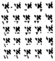
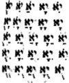
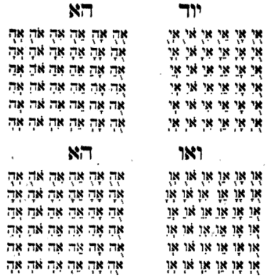
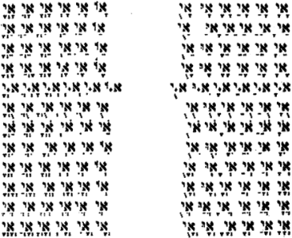

Pardes Rimmonim, English translation with the Hebrew.
We named it "Particulars of Names" because in it is explained the names assigned to the sefirot — the 72-name, the 42-name, the 22-name, the 12-name, the four-letter name, and the twelve havayot. Its chapters number sixteen.
21:1:1 The Twenty-First Gate: The Gate of Particulars of Names.
שער כא הוא שער פרטי השמות:
21:1:2 What is intended in this Gate is to explain a great and wondrous matter found in most of the words of the commentators, and in particular in the prayer of Rabbi Nechunya ben ha-Kanah, which attributed particular and explicit names to the sefirot, such as the name of seventy-two and the name of forty-two and the name of twelve, and the like. And we wish to explain each one of them, its sources and its character, as far as our hand can reach to find anyone who speaks of them, whether much or little; for these things are handed down in tradition, and it is not permitted to add to them or to subtract:
הנרצה בשער הזה הוא לבאר ענין גדול ונפלא שנמצא ברוב דברי המפרשים ובפרט בתפלת ר' נחוניא בן הקנה ייחס שם שמות מיוחדים ומפורשים אל הספירות כמו שם ע"ב ושם מ"ב ושם י"ב וכיוצא בהן. ורצוננו לבאר אותם כל אחד ואחד מוצאיו ותכונתו לכל אשר תשיג ידינו למצוא בהן מי שידבר בהם בין רב למעט, כי דברים אלו הם מסורים בקבלה ולא ניתן להוסיף בהם ולא לגרוע:
21:1:3 Chapter One:
פרק ראשון:
21:1:4 Before we enter into the explanation of the particulars of the names, we will set out in these chapters [matters] whose understanding is not apprehended. And when the discerning one sees this matter, let him consider it a preliminary of precious worth concerning these names in general. For when he considers in his mind that these names are remote from knowledge and understanding, and in them are found almost words that are not understood and not bounded in the utterance of the mouth, so that he might imagine them to be child's play or words of nonsense, God forbid, we were obliged to warn that he not be as one who thinks evil, and that he know in truth that, on the contrary, their degree is great and supreme, and all of them are engraved in the supreme place; and their source rises by way of the rungs of the ladder, higher and higher, until it reaches the source that indicates the Self of the sefirot and their spirituality. And the soul of these letters is the Self of the sefirot in their inwardness; and the names given to them, explained in the preceding gate, are a garment to them, as explained there in chapter 1; and therefore they are holy, not to be erased. But these names and the like are such as were revealed to the holy ones who served the Most High, and to the prophets who spoke by the holy spirit; and from them the Tannaim and the Amoraim received them, a tradition from mouth to mouth back to Moses our teacher, peace be upon him, from Sinai, from the mouth of the Almighty. And the prophets, peace be upon them, by way of those letters, in great seclusion and by the merit of the pure soul, would apprehend that spirituality which is clothed in the letters, and the order of the union of the grades one with another, "the loops opposite one another" (Ex. 26:5), joined "each to its sister" (Ex. 26:3), "each one cleaving to his brother" (Job 41:9); and through them they recognized the bond of the worlds and added knowledge upon their knowledge, and they knew their power and their use: not to make use of them, God forbid, but to know the ability of their Maker. And because of the many troubles, the eyes of the sages were closed and the hearts diminished, and the strength of the expounders of the Torah was weakened from apprehending the plain sense of things, all the more so in the knowledge of speculative Kabbalah, the sefirot, all the more so practical Kabbalah; until there remained among them none with strength against the troubles except Rashbi, peace be upon him, and his companions, who stood and revealed the mysteries of the world. And even his words we do not apprehend, "from shortness of spirit and from hard labor" (Ex. 6:9); for we know clearly that our poor intellect does not reach even a little of the little of the depths of his passages in this wisdom, and all his words are concealed with the utmost separation and concealment. However, by striking with the hammer of the intellect upon the difficulties and the husks that are upon the teachings, light comes out to us from apertures as thin as the cracks of a needle. There was a further cause concerning practical Kabbalah, which was revealed in the days of Nachmanides, peace be upon him, and of Rabbi Elazar of Worms, his master, and Rabbi Joseph Gikatilla, and pillars of the world like them, and likewise in the days of the Gaonim, who made use of the Great Usage and the Small Usage [Shimmusha Rabba and Shimmusha Zuta]. And all this (they caused) [we lost] through our sins; for they themselves did not wish to reveal them, because they saw the men of piety being gathered in and the men of deeds diminished, and they feared lest a person who is not worthy make use of them, as we have seen in many of those who came after them, and near to us, such as Joseph della Reina and the like, who destroy the house of our God and multiply our breaches. And for this reason we will not inquire into the uses of the names, although they are found in the books of the ancients, beyond explaining them as far as will be useful to study. And what is fitting to know is that all the letters depend on the four-letter name, so that some of the letters almost acquire a manifestation like it: as the Alef, whose form is two Yods and a Vav, which amount to 26, the number of the Name; and likewise Lamed hints at 26, and likewise Tet, and likewise Kof. And to this matter the combining of the alphabets with the four-letter name hints, and the combining of the vowels: to return things to their source and to bestow upon them from the supreme source. And because the spiritual things and the flaming threads are divided according to their source, and this the vowelling indicates, as hinted above in the Gate of the Four-Letter Name, chapter 4, therefore it is necessary that a letter of the Name be combined with a letter of the alphabet, and both of them with all the vowels that they can bear, so as to hint at all the sources, particular and general, so that they may be bestowed upon from the supreme source. And concerning the way of their combination the Kabbalists disagreed. Some of them did not wish to rotate its combination except through the five motions of utterance, which are [given by the mnemonic] notarikon; and if so, its combination comes, for each and every letter, to twenty-five words front and twenty-five words back. And the holder of this view is the author of Sefer ha-Nikkud, where he mentioned the order of the invocation of the four-letter name. And we have seen fit to copy his language here, even though it is long, because it is useful for the knowledge of its invocation, in the knowledge of the greatness of our Former. And these are his words: "It is known that the letters have no motion in themselves; and therefore the Name, may He be blessed, put into nature, according to the intellect, powers in the whole of the mouth to bring out the letters in utterance after the likeness of their existence that is found in the book. And vowel points were placed for the letters, indicating the motion of the utterance in their transfer from the book to the mouth. And if so, those that move essentially are the letters of the mouth, and accidentally the letters of the book. And there is joined to this a necessity from the place of the partial motions; for nothing that moves moves without place and without time; and the parts of place are the distances, and the parts of time are the revolutions reckoned in the counts of years and months and days and the like. And because of the distances a person needs to know how long to extend the utterance of each and every letter. And this is the secret of the invocation. At the time that you wish to mention this honored Name, adorn yourself and seclude yourself in a particular place, so that your voice not be heard by others; and purify your heart and your soul of all the thoughts of this world, and think that at that hour your soul will be separated from your body and you will depart from this world and live in the world to come, which is the source of the life that is found scattered in every living thing; and that is the intellect, which is the source of all wisdom and understanding and knowledge, from the King of the kings of kings, the Holy One, blessed be He, of whom all are in great fear; and it is the fear of the one who apprehends, and it is a double fear, the fear of love and the fear of exaltedness. And when your mind comes to cleave to His mind, which gives you mind, your mind must remove from upon it all foreign minds except His mind, which is shared between you and Him through His honored and awesome Name. And therefore you need to know the likeness of its utterance; and this is its drawing:

Behold twenty-five front.
קודם שנכנס בביאור פרטי השמות נקדים בפרקים אלו בלתי מושגת הבנתם. וכאשר יראה המשכיל ענין זה יחשוב הקדמה יקרת הערך בכלל השמות האלה כי בהשכיל בדעתו היות השמות אלה רתוקים מהמדע והתבונה וכמעט בהם ימצא תיבות בלתי מובנות בלתי מוגבלים בהוצאת הפה שידמה אותם היות מעשה נערות או דברי הבאי ת"ו. חוייבנו להזהיר לבל יהיה כחושב רע וידע באמיתות כי אדרבה מעלתם גדולה ועליונה וחקוקים כלם במקום העליון. ומקורם עולה דרך מעלות הסולם מעלה מעלה עד הגיע אל המקור המורה על עצמות הספי' ורוחניותם. ונשמת האותיות האלה הם עצמות הספי' בפנימיותם ושמות המונחים אליהם המבוארים בשער הקודם שהם לבוש אליהם כמבואר שם פ"א. ולפיכך הם קדושים שאינם נמחקים. אמנם שמות האלה וכיוצא אשר יש שיהיו גלויים אל הקדושים משרתי עליון והנביאים המדברים ברוח הקודש ומהם קבלוה התנאים והאמוראים וקבלת איש מפי איש עד למרע"ה מסיני מפי הגבורה. והנביאים ע"ה היו משיגים דרך אותם האותיות בהתבודדות גדול וזכות הנשמה הטהורה אותו הרוחניות המתלבש באותיות וסדר יחוד המדרגות אחת אל אחת מקבילות הלולאות משולבות אשה אל אחותה ואיש באחיהו ידובקו ובם מכירים קשר העולמות ומוסיפים ידיעה על ידיעתם והיו יודעים כחם ושמושם, לא להשתמש בהם ח"ו אלא לדעת יכולת קונם. ומרוב הצרות נסתמו עיני חכמים ונתמעטו הלבבות ודורשי התורה נחלש כחם מהשיג פשטי הדברים, כ"ש בידיעת הקבלה העיונית הספי', כ"ש קבלה המעשית, עד שלא נשאר בהם עוצר כח נגד הצרות כ"א הרשב"י ע"ה וחביריו שעמדו וגילו כבשונו של עולם. וגם דבריו אין אנו משיגים מקוצר רוח ומעבודה קשה כי יודעים אנו בבירור כי אין שכלנו הדל מגיע לקצת מן הקצת בעמקי מאמריו בחכמה הזאת, וכל דבריו נעלמים תכלית ההבדל וההעלם. אכן ע"י הכאת פטיש השכל בקושיות וקליפות שעל ההלכות יצא לנו אור מארובות דקות כסדקי המחט. עוד היתה סבה אל קבלה המעשיית אשר היתה גלויה בימי הרמב"ן ע"ה והרב ר' אלעזר מגרמיזא רבו והרב ר' יוסף גיקאטלייא ועמודי עולם כמותם וכן בימי הגאונים שהיו משתמשים בשימושא רבא ושימושא זוטא. וכל זה (גרמו) [אבדנו] בעונותינו, כי הם בעצמם לא רצו לגלותם לפי שראו אנשי חסד נאספים ונתמעטו אנשי מעשה וחששו שמא ישתמש בהם אדם שאינו הגון, כמו שראינו באותם שהיו אחריהם הרבה וקרובים אלינו כמו יוסף דיליריינא וכיוצא בו המחריבים בית אלהינו ומרבים את פרצותינו. ולטעם זה לא נחקור אחר שמושי השמות עם היותם נמצאים בספרי הקדמונים זולת בביאורם ממה שיועיל אל העיון. וממה שראוי לדעת כי כל האותיות הם תלוים בשם בן ד' עד שכמעט קצת האותיות קונה מציאות דומה לו כמו הא' שצורתה שני יודי"ן וא"ו שעולה כ"ו כמספר השם. וכן ל' רומז כ"ו וכן ט' וכן ק'. ואל זה הענין ירמוז צרוף האלפא ביתות עם שם בן ד' וצרוף הנקוד להחזיר הדברים אל מקורם ולהשפיע עליהם מהמקור העליון. ולהיות כי הדברים הרוחניים והחוטים השלהביות יתחלקו לפי מקורם. וזה יורה הנקוד כנרמז לעיל בשער שם בן ד' פ"ד. לכן יוכרח שיצטרף אות השם עם אות האלפא ביתא ושתיהם עם כל הנקודים אשר יוכלון שאת להיות רומזים אל כל המקורות פרטיים וכללים להיותם נשפעים מהמקור העליון. ובדרך צרופם נחלקו המקובלים. קצתם לא רצו לגלגל צירופו אלא ע"י ה' תנועות המבטא שהם נטיריקון וא"כ יעלה צרופו בכל אות ואות כ"ה תיבות פנים וכ"ה תיבות אחור. ובעל הסברא הזאת הוא מחבר ספר הניקוד כשהזכיר סדר הזכרת שם בן ד'. וראינו להעתיק לשונו הנה ואף אם הוא ארוך להיות כי הוא מועיל לידיעת אזכרתו בידיעת גדולת יוצרנו. וז"ל ידוע שהאותיות אין להם תנועה בעצמם וע"כ נתן השי"ת בהטבע ע"פ השכל כוחות בכלל הפה להוציא האותיות במבטא כדמות מציאותם הנמצא בספר. והושמו להאותיות נקודות מורות על תנועת המבטא בהעתקתם מן הספר אל הפה. וא"כ המתנועעים בעצם הם אותיות הפה ובמקרה הם אותיות הספר. והשתתף אל זה הכרח ממקום התנועות החלקיות כי לא יתנועע שום מתנועע בלתי מקום ובלתי זמן. וחלקי המקום הם הרחוקים. וחלקי הזמן הסובבים הנחשבים בפקודים בשנים ובחדשים ובימים והדומים להם. ומפני הרחוקים צריך אדם לדעת כמה יאריך במבטא כל אות ואות. וזהו סוד ההזכרה. בשעה שתרצה להזכיר את השם הנכבד הזה קשט את עצמך והתבודד במקום מיוחד שלא ישמע קולך לזולתיך וטהר לבבך ונפשך מכל מחשבות העולם הזה וחשוב שבאותה שעה תפרד נפשך מגופך ותפטר מן העוה"ז ותחיה לעולם הבא אשר הוא מקור החיים הנמצאים המפוזרים בכל חי והוא השכל שהוא מקור כל חכמה ובינה ודעת (אינו כדמות) ממ"ה הקב"ה אשר הכל יראים ממנו יראה גדולה והיא יראת המשיג היא יראה כפולה יראת אהבה ויראת מעלה. וכשבאה דעתך להדבק בדעתו הנותנת בך דעת, צריכה דעתך להסיר מעליה כל הדעות הזרות זולת דעתו המשותפת בינך ובינו על פי שמו הנכבד והנורא ועל כן צריך אתה לדעת דמות מבטאו וזה ציורו
הנה כ"ה פנים.
21:1:5 "And further, twenty-five back, and they are these:

" And in this way with the He, and likewise with the Vav, and likewise with the last He. And we have abridged it, and further set it right according to its measure; for the author of Sefer ha-Nikkud jumbled them by way of a poem, to conceal, and revealed it at the end of his words; and we have arranged it as is fitting and proper. And let us return to his words: "This is its drawing. When you begin to mention the Alef, in whatever form you mention it, because it indicates the secret of the union, do not extend it except to the measure of one breath, and do not make any break at all in that breath until you complete its pronunciation. And extend that particular breath according to the measure of the strength of the length of your breath, as one, as much as you can extend it. And chant with the Alef, and with each and every letter that is in the likeness of the vowel, which is the cholam, upward. And when you begin to mention it, direct your face toward the face of the east, not upward and not downward; and you sit wrapped in white garments, washed and pure, over all your garments, or your tallit on your head, crowned with tefillin, facing the east, for from there the light goes forth to the world; and you have five extremities toward which to move your head. And with the cholam begin from the middle of the east, and purify your thought, and raise your head with the breath little by little until you complete it with your head above; and after you complete it, bow down to the ground once. And do not separate between the breath of the Alef and the breath of the letter joined to it, except by one breath, short or long. Between one letter of the Name and the next, in the straight or in the reversed, you may take two breaths without utterance, and not more; but fewer is within your discretion. And when you complete each and every row, you have permission to take five breaths alone and not more; but fewer is within your discretion. And if you changed or erred in a row of this order, return to the head of that row until you say it properly. And like the cholam, drawn upward, chant with the chirik, drawn downward, drawing the upper power to cleave to you. And with the shuruk do not raise your head up or down, but a middle drawing, facing the middle face. And with the tzeirei draw your head from left to right, and with the kamatz from right to left. And in all of them, after you complete, if you see a form before you, bow down immediately before it; and if you hear a voice, small or great, and wish to understand what it says, answer it immediately and say, 'Speak, my lord, for your servant hears'; and do not speak at all, but incline your ears to hear what it will say to you. And if you fear a great fear that you cannot bear, even in the middle of the invocation, bow down immediately. And if you neither see nor hear, leave the matter for that whole week. And it is good further to mention it once a week, in the likeness of 'running and returning,' for concerning this thing a covenant was made. And what more shall I add to make known to you? For it is already known that, if you are wise, from the hint you will understand the whole order. And if you feel that your intellect is weak in wisdom or in tradition, or your thought strong in the vanities of the time, do not mention the Name, lest you then add to sin. And know that between the page of Yod and the page of He you may take twenty-five breaths and not more, provided that you do not interrupt in between, neither in speech nor in thought; and likewise between He and Vav, and between Vav and He; only fewer than twenty-five you may breathe." Thus far the words of the Rav, the author of Sefer ha-Nikkud. And his words are words of tradition from mouth to mouth, or words of a maggid; and we have lengthened in them because they are of much benefit for the knowledge of the greatness of the glory of our Former, blessed be He. And in any case, a proof has come out to us for the rotation of the Name with the letters of the alphabet with five vowels alone, in the manner of combination in words and in vowels, as we shall lengthen and explain their matter further in the Gate of Permutation, with the help of God. But the other Kabbalists, seeing that the sheva is a motion by itself besides the five motions, for it is intermediate between the patach and the segol, as the grammarians explained (even if its motion is hidden from us), added its motion in the combination of the Name; and there turned out to be six motions, and they came to thirty-six, which are six times six, in the manner of combination, as is known. And from the motions and their reckoning came out delicacies and gematrias for wisdom. And because they lengthened in the matter much, we have seen fit to devote a chapter by itself to their words:
ועוד כ"ה אחור והם אלו
ועד"ז בה' וכן בו' וכן בה' אחרונה. ואנחנו קצרנוהו ועוד תקננו אותו על מתכונתו כי בעל הספר הניקוד בילבלם בדרך שירה להעלים וגילהו בסוף דבריו ואנחנו ישבנו אותו כראוי וכשורה. ונחזור לדבריו זהו ציורו כשתתחיל להזכיר א' באיזה ציור שתזכירהו מפני שהוא מורה על סוד היחוד אל תאריך בו כי אם לפי שיעור נשימה אחת ולא תפסיק בנשימה ההיא שום הפסק בעולם עד שתשלים כנויו. ותאריך בנשימה ההיא המיוחדת כפי שיעור כח אריכות נשימתך כאחת בכל מה שתוכל להאריך בה ונגן בא' ובכל אות ואות שתהיה בדמות הניקוד והוא החולם למעלה וכשתתחיל בהזכרתו תכוין פניך אל פני המזרח לא למעלה ולא למטה ואתה שב מעוטף בבגדים לבנים מכובסים טהורים על כל בגדיך או טליתך לראשך מוכתר בתפילין לפני המזרח שמשם האור יוצא לעולם ולך"ה קצוות להניע בם ראשך. ובחולם תתחיל מאמצע המזרח וזכך רעיונך ותעלה ראשך עם הנשימה מעט מעט עד שתשלים וראשך למעלה ואחר שתשלים תשתחוה עד הארץ פעם אחת ולא תבדיל (בין) נשימת האלף לנשימת האות הדבק בו כי אם נשימה אחת קצרה או ארוכה או בין אות של שם בישרים או בהפוכים יש לך יכולת להנשים ב' נשימות בלי מבטא ולא יותר אבל פחות הרשות בידך. וכשתשלים כל טור וטור יש לך רשות להנשים ה' נשימות לבד ולא יותר אבל פחות הרשות בידך ואם שנית או טעית בטור מזה הסדר שוב אל ראש הטור ההוא עד שתאמרהו כראוי וכדמות החולם הנמשך למעלה נגן בחיר"ק הנמשך למטה ומושך כח העליון להדבקו בך. ובשורק לא תעלה ראשך לא למעלה ולא למטה אלא משיכה אמצעית כנגד הפנים האמצעיים ובציר"י תמשיך ראשך מהשמאל אל הימין, ובקמץ מהימין אל השמאל. ובכולם אחר שתשלים אם תראה צורה לפניך תשתחוה מיד כנגדה ואם תשמע קול קטן או גדול ותרצה להבין מה שאומר ענהו מיד ואמר דבר אדוני כי שומע עבדך ואתה לא תדבר כלל אלא הט אזניך לשמוע מה שיאמר לך. ואם תפחד פחד גדול שלא תוכל לסובלו ואפי' באמצע האזכרה תשתחוה מיד. ואם לא תראה ולא תשמע עזוב הדבר בכל אותו השבוע. וטוב עוד להזכיר פעם אחת בשבוע כדמות רצוא ושוב שעל דבר זה נכרת ברית. ומה אוסיף עוד להודיעך שכבר ידוע הוא שאם חכם אתה מן הרמוז תבין הסדר כלו ואם תרגיש ששכלך חלוש בחכמה או בקבלה או רעיונך חזקה בהבלי זמן לא תזכיר (אם) [את] השם פן תוסיף אז לחטוא. ודע שבין דף של יו"ד לדף של ה"א תוכל להנשים כ"ה נשימות ולא יותר ובלבד שלא תפסיק בנתיים לא בדיבור ולא במחשבה וכן בין ה"א לו' ובין ו' לה' רק פחות מכ"ה תוכל להנשים. עכ"ל דברי הרב בעל הספר הניקוד. ודבריו דברי קבלה מפה אל פה או דברי מגיד. והארכנו בהם להיותם רבי התועלת בידיעת גדולת כבודו של יוצרנו ב"ה. ומ"מ יצא לנו ראייה לגלגול השם באותיות האלפא ביתא עם ה' נקודות לבד ע"ד הצירוף בתיבות ובנקודות כאשר נאריך ונבאר עניינם עוד בשער הצרוף בעה"י. ואמנם המקובלים האחרים בראותם השב"א כי היא תנועה בפני עצמה זולת ה' תנועות כי היא בינונית בין הפתח והסגול כאשר ביארו המדקדקים ואם תנועתה נעלמת אצלינו, הוסיפו בצירוף השם תנועתה ונמצאו שש תנועות ועלו אל ל"ו שהם ששה פעמים ששה ע"ד הצירוף כנודע. ויצא מהתנועות וחשבונם פרפראות וגימטריאות לחכמה. ולהיות שהם האריכו בענין הרבה ראינו ליחד לדבריהם פרק בפני עצמו:
21:2:1 The author of the book Ma'arakhot Elohim Chayyim expounded the opinion mentioned at length, and these are his words: "And to cleave to Him with a wondrous cleaving, which is called oneness, it is fitting to bring Him to mind in each and every part of the hour, which is 1,080 parts; as the rotation of His Name, may He be blessed, with each and every letter, with the vowels whose sign is notarikon, and with the letter unvowelled, will be 144; and your sign: 'The eternal God [Elohei kedem, kedem = 144] is a dwelling place' (Deut. 33:27); you will see further on, with the help of the Name. And let us reckon to know this: that He is the God of old, Former and Creator and Maker and Emanator of all; and He is from the letters, for the word of the Lord goes out from its place, from which all speech goes out; and in the general category of speech is every name of every kind of the kinds of existents; and all the formed go out from one name, that is to say, the name YHVH, which is combined with each and every letter that is in the 231 gates, thirty-six times. And we have combined one letter, and so it will be with all the other twenty-two letters: this is the combination of Alef with Yod and with He and with Vav and with He; and understand this. And the reason for the going out of every thing and every language from the 231 gates in the rotation of the alphabet is that if you make, by way of example, twenty-two circles one within another, and in each one of them twenty-two letters, then you will see with your eyes how all the things and the languages are combined from their rotation in 231 gates; and it returns around, and the wheel returns front and back, 231 gates; that is to say, 231 gates of front and 231 gates of back. And behold, each and every letter of the 231 gates is combined with the four letters of the name YHVH 144 times. How so? The Alef is combined with the Yod and with the six vowels thirty-six times, and likewise with the He, with those same vowels, thirty-six times, and likewise with the Vav, with those same vowels, thirty-six times, and likewise with the last He, with those same vowels, thirty-six times: behold, 144 times with the Alef. And likewise with each and every one of the twenty-two letters; it turns out that 144 times 22 amounts to 3,168 words, in the twenty-two letters alone.
האריך בביאור הדעת הנז' בעל ס' מערכות אלדים חיים וז"ל ולדבקה בו דבוק נפלא נקרא אחדות. ראוי להעלותו על לב בכל חלק וחלק מן השעה שהיא תתר"ף חלקים כאשר גלגול שמו יתברך עם כל אות ואות עם הניקוד שסימנו נטריקון ועם האות בלתי נקוד יהי' קמ"ד וסימנך מעונה אלדי קד"ם תראה לפנים בע"ה ונחשבה לדעת זאת שהוא אלדי קדם יוצ"ר ובור"א ועוש"ה ומאצי"ל כל והוא מהאותיות אשר הוא דבר ה' יוצא ממקומו אשר כל הדיבור יוצא מהם ובכלל הדיבור הוא כל שם של כל מין ומין ממיני הנמצאות וכל היצור יוצא משם א' ר"ל השם יהו"ה המצטרף עם כל אות ואות שיש ברל"א שערים ל"ו פעמים ונצרף אות אחת והוא הדין יהיה עם כל שאר הכ"ב אותיות זהו צרוף א' עם י' ועם ה' ועם ו' ועם ה' והבן זה. וטעם יציאת כל דבר וכל לשון מהרל"א שערים בגלגול אלפא ביתא לפי שאם תעשה על דרך משל כ"ב עגולים זה בתוך זה ויהיה בכל א' מהם כ"ב אותיות אז תראה בעיניך איך כל הדברים והלשונות יצטרפו מתוך גילגולם ברל"א שערים וחוזרת חלילה וחוזר הגלגל פנים ואחור רל"א שערים ר"ל רל"א שערים של פנים ורל"א שערים של אחור. והרי שמצטרף כל אות ואות מרל"א שערים עם ד' אותיות של שם ידו"ד קמ"ד פעמים כיצד האל"ף מצטרפת עם היו"ד ועם הנקודים ששה ל"ו פעמים וכן עם הה"א באותם נקודות עצמם ל"ו פעמים וכן עם הוא"ו באותם הנקודות עצמם ל"ו פעמים וכן עם ה"א אחרונה באותם הנקודות עצמם ל"ו פעמים הרי קמ"ד פעמים עם הא'. וכן עם כל אחת ואחת מכ"ב אותיות נמצא קמ"ד פעמים כ"ב יעלו ג' אלפים וקס"ח תיבות בכ"ב אותיות בלבד.
21:2:2 "And further, reckon 3,168 times 231 gates: their number amounts to 731,808. And all these are His names indeed, that is to say, the substance of the formation; for He clothed the formless thing with form, and made that which is not into that which is, and the emanation drawn from Nothing, which has no form or likeness or intellect, except that all the wisdom of the creatures is withheld from knowing them; and behold, through these havayot He brought out all the existents from nothing to something:
ועוד חשוב ג' אלפים וקס"ח פעמים ברל"א שערים יעלו מספרם תשל"א אלפים ותת"ח. וכל אלו שמותיו ממש ר"ל ממשית היצירה כי הלביש הצורה לדבר תהו ועשה את אשר אינו ישנו ואצילות הנמשך מאי"ן שאין לו צורה ודמיון והשכל אלא שכל חכמת הבריות נאספות מלידע מהן והנה ע"י אלה ההויית הוציא מאין ליש כל הנמצאות:
21:2:3

21:2:4 "Your eyes will look straight ahead [and see] how the rotation of the letters of the name YHVH with each and every letter, with the six known vowels, amounts to 1,080; therefore there are 1,080 parts to the hour. And likewise the rotation of the name YHVH with the Alef and the vowels is 1,080; and likewise with Bet, and likewise with Gimel, and likewise with all of them:
עיניך לנוכח יביטו איך גלגול אותיות השם יהוה עם כל אות ואות עם הנקודים ידועים הששה עולים אלף ושמונים לכך תתר"ף חלקים לשעה. וכן גלגול השם יהוה עם האלף והנקודים תתר"ף. וכן עם בי"ת וכן עם גימל וכן עם כולם:
21:2:5 "See and understand the wonder of counsels: how in each and every part of the hour it is fitting for us to think of His awe. And this is 'Do not turn to the idols' (Lev. 19:4): 'do not turn to [what comes] from your own mind' (Shabbat 149a), for all the day you shall think of the love of Heaven. Therefore it is forbidden to speak idle words; for His Name, may He be blessed, is in the rotation of 1,080, and it is fitting to think of the glory of His Name 'when you sit, and when you walk, and when you lie down, and when you rise' (Deut. 6:7), in the four letters of the honored and awesome Name YHVH, which is with all; and therefore His Name is YHVH. And they are: the rotation of Yod with Alef, thirty-six words; and likewise the rotation of Alef with He, thirty-six words; and likewise the rotation of Vav with Alef, thirty-six words; and likewise the rotation of Alef with the second He: behold 144 [kedem] times with Alef, as we said above once; and they amount to 1,080 by gematria, for those who understand combination. Therefore there are 1,080 parts to each hour, for there are 1,080 parts for each and every letter in the rotation of YHVH: in the rotation of Alef-Yod, thirty-six words, amounting to 396; and the rotation of Alef-He, thirty-six words, amounting to 216; and the rotation of Alef-Vav, thirty-six words, amounting to 252; and the rotation of Alef-He, thirty-six words, amounting to 216. The sum total: 396, 216, 252, 216, which are 1,080 parts. And understand another secret, and it is this: if you combine and rotate all the twelve diagonal boundaries of the name YHVH, and Alef with all of them, they will be 1,080; therefore the day is twelve hours.
ראה והבן פלא עצות איך בכל חלק וחלק מהשעה ראוי לנו לחשוב על מוראו. וזהו אל תפנו אל האלילים (ויקרא יט ד) אל תפנו אל מדעתכם (שבת קמ"ג.) שכל היום תחשוב באהבת שמים ע"כ אסור לדבר דברים בטלים כי שמו ית' בגלגול תתר"ף וראוי לחשוב כבוד שמו בשבת"ך ובלכת"ך ובשכב"ך ובקומ"ך בארבע אותיות של השם הנכבד והנורא ידו"ד שהוא עם הכל וע"כ שמו ידו"ד והם גלגול יו"ד עם א' הם ל"ו תיבות וכן גלגול א' עם ה' הם ל"ו תיבות וכן גלגול ו' עם א' הם ל"ו תיבות וכן גלגול א' עם ה' שניה הרי קד"ם פעמים עם א' כמו שאמרנו למעלה פעם אחת והם בגי' תתר"ף למביני הצירוף לכן תתר"ף חלקים לכל שעה כי תתר"ף חלקים לכל אות ואות בגלגול ידו"ד. בגלגול א"י הם ל"ו תיבות בגי' שצ"ו, וגלגול א"ה והם ל"ו תיבות בגי' רי"ו, וגלגול א"ו הם ל"ו תיבות בגי' רנ"ב, וגלגול א"ה הם ל"ו תיבות בגי' רי"ו. סך הכל שצ"ו רי"ו רנ"ב רי"ו הם תתר"ף חלקים. והבן סוד אחר והוא זה אם תצרף ותגלגל כל הי"ב גבולי אלכסון של שם יוד"ד וא' עם כלם יהיו תתר"ף לכך היום י"ב שעות.
21:2:6 "And further, open the eyes of your intellect to see: if the name YHVH is at the head of the wheel and the Alef at the end (for the wheel turns front and back), it will also be 1,080; and behold two 1,080s, two hours for each mazal, that is to say, for each one of the twelve diagonal boundaries of the name YHVH, for which the divine mazalot have the right [of the firstborn] over the mazalot that are in the spheres, and 'at their command they encamp and at their command they journey' (Num. 9:20). And there turn out to be twenty-four hours and twenty-four 1,080s for the divine mazalot mentioned, between the front and the back: twelve 1,080s for the back and twelve 1,080s for the front; and likewise twenty-four hours for one day, between the day and the night, twelve hours for the day and twelve hours for the night. Therefore in each part of the hour one should think of His awe and plant His love and His fear in our hearts, since He brought every thing into being, and within the heart the mouth of each and every man was emanated. And from Him are the twenty-eight times mentioned in the book of Ecclesiastes (chapter 3), fourteen of them one thing and fourteen others their substitutes, corresponding to the twenty-eight camps of the moon, which are twenty-eight camps of the Shekhinah. By the twelve divine mazalot that we spoke of He changes the times, and 'to everything there is a season, and a time for every purpose' (Eccl. 3:1), from His ability and His being." Thus far its words.
ועוד פקח עיני שכלך לראות אם שם ידו"ד בראש גלגל והא' בסוף כי הגלגל חוזר פנים ואחור יהיה ג"כ תתר"ף והרי ב' תתרפי"ם ב' שעות לכל מזל ר"ל לכל אחד מהי"ב גבולי אלכסון של שם ידו"ד אשר המזלות האלהיות להם משפט [הבכורה] על המזלות שבגלגלים ועל פיהם יחנו ועל פיהם יסעו ונמצאו כ"ד שעות וכ"ד תתרפי"ם למזלות האלהיית הנזכר בין הפנים והאחור י"ב תתרפ"ים לאחור י"ב תתרפי"ם לפנים וכן כ"ד שעות ליום א' בין היום והלילה י"ב שעות ליום וי"ב שעות ללילה על כן בכל חלק לשעה יש לחשוב במוראו וליטע אהבתו ויראתו בלבבנו אחרי שהוא היוה כל דבר ובתוך הלב נאצל פיו של כל איש ואיש. וממנו הכ"ח העתים הנזכר בספר קהלת (ג) י"ד מהם דבר אחד וי"ד אחרות תמורתם כנגד כ"ח מחנות ללבנה הם כ"ח מחנות שכינה. בי"ב מזלות אלהיית שאמרנו מחליף את הזמנים ולכל זמן ועת לכל חפץ מיכולתו והוייתו עכ"ל.
21:2:7 And its fruits are sweeter than honey and the honeycomb. However, since it is clear and well known that the powers of the vowels are ten, even if their actions are five, then just as the sheva enters into the reckoning of the motions, so it is fitting that all the other motions enter; for in truth there is a great difference between the kings and the servants [the long and the short vowels], whether in their motion, that is to say, their sound, or in their action, that is to say, their power and their hint, as will be explained, with the help of the Name, in the Gate of Vowel Points. And if so, it is fitting that we combine the name YHVH with all the vowels, with the letters; and then the combination of all the powers with their source will necessarily follow, as we explained at the beginning of chapter 1. And behold, its combination will be in this way. When we search for the totality of the motions, they are found to be twelve, and they are: kamatz, patach, tzeirei, segol, shuruk, shurek, cholam, chirik, sheva, chataf kamatz, chataf patach, and chataf segol; and each one of them has a hint by itself; and although they were not counted in the vowels of the sefirot that we explained above, they will be explained in the Gate of Vowel Points, with the help of the Name. It turns out that the combination of the Name in the vowels with the letters is 144 [kedem] words; for they are twelve times twelve, which are 144, and they are "the eternal God [Elohei kedem] is a dwelling place," as explained above. And this is the order of their combination, with the help of Heaven:
ופריו מתוקים מדבש ונופת צופים. האמנם אחרי אשר ברור ומפורסם כי כחות הנקודות הם עשר ואם פעולתם חמש א"כ כמו שנכנס השבא בחשבון התנועות כן ראוי שיכנסו כל שאר התנועות כי לפי האמת יש חלוק גדול בין המלכים ובין העבדים אם בתנועתם ר"ל בהברתם ואם בפעולתם ר"ל בכחם ורמיזתם כאשר יתבאר בע"ה בשער הנקודות. וא"כ ראוי שנצרף שם ידו"ד בכל הנקודות עם האותיות ואז יוכרח צרוף כל הכחות אל מקורם כדפי' בריש פ"ק והנה יהיה צרופו עד"ז וכאשר נחפש אחר כלל התנועות נמצאות י"ב והם קמ"ץ פת"ח ציר"י סגו"ל שור"ק שר"ק חול"ם חיר"ק שב"א חטף קמץ וחטף פתח וחטף סגול, ולכל א' מהם רמז בפני עצמו ואם לא נמנו בנקודת הספירות אשר בארנו למעלה יתבארו בשער הנקודות בע"ה. נמצא היות צרוף השם בנקודות עם האותיות קד"ם תיבו"ת כי הם י"ב פעמים י"ב הם קמ"ד והם מעונה אלדי קדם כמבואר לעיל. וזה סדר צרופם בס"ד:
21:2:8

21:2:9 And likewise for each and every letter of the four-letter name, front and back, and likewise for all the letters of the alphabet, until all of them are combined with their source and receive a great abundance of good effluence from the supreme source, as we shall lengthen on the matter of the letters in the Gate of Letters, with the help of Heaven. But we have seen some of the Kabbalists agreeing with the opinion of the author of Sefer ha-Nikkud; and so they wrote the name Koh [25], which goes out from the verse (Ex. 2:12) "And he turned this way and that way [koh va-khoh]"; and it is that they combine the word Koh twenty-five times front and twenty-five times back, such as Koh, Hokh, in the way that the author of Sefer ha-Nikkud wrote above. And likewise all who write the combination of the vowels wrote only the combination of five vowels alone. And likewise Rashbi, peace be upon him, concerning the vowels, gave the sign "engravings of a signet" [pittuchei chotam], and indicated that they are five emanated sefirot, which are Gedulah, Gevurah, Tiferet (and in it are included Yesod and Malkhut, as we explained in the preceding gates), and Netzach and Hod. But in the commentary on Sefer Yetzirah, on the matter of the [creation of] man, they wrote like the words of the author of Ma'arakhot Elohim Chayyim, that they are six times six, which amount to thirty-six, and they wrote it in his language word for word; and it seems that the thing is necessary there, for there they spoke of the Work of Creation, in the mention of the alphabets, in the crowning of the letters in the creation of each and every limb. And likewise the author of the book Or Zarua wrote on the matter of the motions of the lulav that they are thirty-six; and he said: "Why thirty-six? To hint to you at the holy letters that are joined and combined in their motions and their rotations, thirty-six motions; and this is the order of their motions according to notarikon: Alef-Yod, etc.; and likewise Alef rotates with He, and likewise afterwards with Vav, and afterwards with He." Thus far its words.
וכן לכל אות ואות משם בן ד' פנים ואחור וכן לכל אותיות אלפ"א בית"א עד שנצטרפו כלם אל מקורם ויקבלו שפע רב טוב מהמקור העליון כאשר נאריך בענין האותיות בשער האותיות בס"ד. אבל ראינו קצת המקובלים מסכימים אל דעת בעל ספר הנקוד וכן כתבו שם כ"ה היוצא מפסוק (שמות ב יב) ויפן כה וכה והוא שהם מצרפים תיבת כ"ה חמשה ועשרים פעמים פנים וחמשה ועשרים פעמים אחור כגון כ"ה ה"כ על דרך שכתב בעל ס' הנקוד בשם י"א לעיל. וכן כל כותבי צרוף הנקוד לא כתבו כ"א צרוף ה' נקודות לבד. וכן הרשב"י ע"ה בענין הנקודות נתן הסימן פתוחי חותם. והורה היותם ה' ספירות נאצלות שהם גדולה גבורה תפארת ובו נכלל יסוד ומלכות כדפי' בשערים הקודמים ונצח והוד. אבל בפי' ספר יצירה בענין [בריאת] האדם כתבו כדברי בעל מערכות אלדים חיים שהם ששה פעמים ששה שעולים ל"ו וכתבו כלשונו מלה במלה ונראה היות הדבר מוכרח כי שם דברו לענין מעשה בראשית בהזכרת האלפא ביתות בהמלכת האותיות בבריאת כל אבר ואבר. וכן כתב בעל ספר אור זרוע בענין תנועות הלולב שכתב שהם ל"ו. ואמר למה ששה ושלשים כדי לרמוז לך לאותיות הקדושות המתחברות ומצטרפות בתנועותיהן ובגלגוליהון ל"ו תנועות וזה סדר תנועותיהם על פי נוטריקון א"י וכו' וכן א' יתגלגל עם ה' וכן אח"כ עם וא"ו ואח"כ עם ה' עכ"ל.
21:2:10 And since this matter is a dispute of the great ones, and we have no revealing in it at all from Rashbi, peace be upon him, the thing remains pending until a teacher of righteousness comes. However it may be, from it it is explained what the matter of this need is, for the creation of man, of the combination of the alphabet, in crowning the letter by which the limb would be created, and its union with the four-letter name and its being combined with it. The reason is that, because the character of man (that is to say, his body and his veins and his sinews and the lines of his limbs and the measures of his limbs, all in measure and in weight) all hints at the upper limbs, his creation must necessarily include all the spiritual things, all of them; for so he is the mold of all the existents, as we shall explain in the Gate of the Soul, chapter 8. And because the intellect and speech are a power given in him to hint at the Ein Sof, the Cause of Causes, who gives life to and conducts all things, corporeal and spiritual, and causes them to ascend until they reach His Self, so the intellect and speech conduct all the things that are included in the body, such as the powers of the soul and its matters. And a proof of this: did not [our Sages] of blessed memory say that the soul is found in the body of a person after his death, and prove it from the verse (Job 14:22), "and his soul mourns over him"? And nevertheless, although it is within the body, it does not perform its actions, because the effluence of the intellect is withheld from it, and because there is no word and language and letter and speech that includes it. Therefore those sages who engaged in the work of formation in the order of the alphabet, although they would create men, these did not speak, because of the absence of the power that resembles the Ein Sof, as we said, which was not bestowed upon him according to the order of the alphabets. And in this way will be understood what some write: the name of forty-two and the name of seventy-two and the other names, combined with their sources, like this: יאהבוג"ה, which is the name Abag combined with its source YHVH, and so the whole of it. And there are those who write it in another way, like this: אב"גיהוהית"ץ, and so the whole of it. And likewise there are those who write the name of seventy-two like this: יו"ה הוו"ה ייה"ל וי"ה, and so the whole of it: the name Vehu with its source YHVH, and the name Yeli with its source YHVH, to the end. And there are those who combine it with the name Ehyeh, for it too is its source, though not so supreme as the first, as we shall explain on the name of forty-two. And the reason for all this is that in the return of the thing to its source, or in its joining with it, it will bestow upon its particulars a great abundance of good effluence, like the combined name יאהדונה"י and the name יאההוי"הה, as we explained in the Gate of Essence and Governance, chapter 24. And with this the mishnayot of Sefer Yetzirah will be explained: "He crowned such-and-such a letter and bound a crown to it," etc. And the intent: "He crowned" [himlikh] hints at Malkhut; and "bound" [KeSheR] means teKi'ah, Shevarim, teRu'ah, which are Gedulah, Gevurah, Tiferet, as explained in the words of Rashbi, peace be upon him, in the Tikkunim and the Ra'aya Meheimna in numberless places; and in the three of them their branches are included, Netzach, Hod and Yesod, and likewise their heads, Keter, Chokhmah and Binah. "Crown" [keter] hints at the Supernal Keter; or it may hint at the first three, which are a crown to the Patriarchs. And then a great effluence was bestowed upon that letter, and it had in it power to create that limb and that mazal and that thing intended by it. And now that we have set out this matter in these chapters, we come to the explanation of the names one by one, with the help of the Living One:
ואחר שענין הזה מחלוקת הגדולים ואין לנו בו גלוי כלל מהרשב"י ע"ה הדבר תלוי ועומד עד יבא מורה צדק. איך שיהיה מתוכו מתבאר כי ענין הצורך הזה אל בריאת האדם בצרוף האלפא ביתא בהמלכת האות שבה יברא האבר ויחודה אל שם בן ד' והצטרפה עמו. הסיבה היא להיות כי תכונת האדם ר"ל גופו ועורקיו וגידיו ושרטוטי אבריו ושעורי אבריו ושיעורי האברים הכל במדה ובמשקל כלם נרמזים אל האברים העליונים, יוכרח בריאותו היותה כוללת כל הדברים הרוחניים כולם כי כן הוא דפוס כל הנמצאים כולם כאשר נבאר בשער הנשמה בפ"ח. ולהיות שהשכל והדיבור הוא כח נתון בו לרמוז אל הא"ס עילת העילות המחייה ומנהיג כל הדברים גשמים ורוחניים ועולות עד הגיעם אל עצמותו, כן השכל והדיבור מנהיג כל הדברים אשר נכללים בגוף כמו כחות הנפש ועניינה. והכרח לזה הלא אמרו ז"ל שהנפש נמצאת בגוף האדם אחר פטירתו והכריחו כן מפסוק (איוב יד כב) ונפשו עליו תאבל. ועכ"ז שהיא בתוך הגוף אינה פועלת פעולותיה לפי שנמנע ממנה שפע השכל ולפי שאין מלה ולשון ואות ודיבור כולל אותו. לכן אותם החכמים שהיו עוסקים במעשה יצירה בסדר האלפא ביתא עם היות שהיו בוראים אנשים. לא היו מדברים להעדר הכח הנדמה לא"ס כמו שאמרנו שלא היה מושפע עליו לפי סדר האלפ"א ביתו"ת. וע"ד זה יובן מה שיש כותבים שם מ"ב ושם ע"ב ושאר השמות מצורפים אל מקוריהם כזה יאהבוג"ה והוא שם אב"ג מצורף עם מקורו ידו"ד וכן כולו. ויש שכותבין אותו בפנים אחרות כזה אב"גיהוהית"ץ וכן כולו. וכן יש שכותבין שם בן ע"ב כזה יו"ה הוו"ה ייה"ל וי"ה וכן כולו. שם וה"ו עם מקורו ידו"ד, ושם יל"י עם מקורו ידו"ד עד כולו. ויש מצרפים אותו אל שם אהי"ה כי ג"כ הוא מקורו ולא עליון כראשון כאשר נבאר בשם מ"ב. וטעם כל זה כי בחזרת הדבר אל מקורו או בהתחברו אליו ישפיע אל פרטיו שפע רב טוב כדמות הצטרף שם יאהדונה"י ושם יאההוי"הה כאשר בארנו בשער מהות והנהגה בפכ"ד. ובזה יתבאר המשניות שבס"י המליך אות פלונית וקשר לה כתר כו'. והכונה כי המליך רומז אל המלכות. וקש"ר ר"ל תקיע"ה שברי"ם תרוע"ה, שהם גדולה גבורה תפארת כמבואר בדברי הרשב"י ע"ה בתיקונים ור"מ מקומות רבו מספר. ובשלשתם כלולים ענפיהם נצ"ח הו"ד ויסו"ד וכן ראשיהם כתר חכמ"ה ובינה. כת"ר רומז אל כת"ר עליון או ירמוז לג' ראשונות שהם כתר אל האבות ואז היה נשפע שפע רב על האות ההיא והיה בה כח לברוא אותו אבר ואותו מזל ואותו דבר הנרצה בו. ואחר שהקדמנו הענין הזה בפרקים האלה, נבא עתה בביאור השמות אחד לאחד בעה"ו:
21:3:1 Behold, in the prayer of Rabbi Nechunya ben ha-Kanah, peace be upon him, he attributed to Keter this name, which is Araritha [ארארית"א], and gave it a sign in the initials: "Echad Rosh Achduto Rosh Yichudo Temurato Echad" [One, head of His oneness, head of His union, His substitution One]. Thus far. And concerning this name Rav Hamai Gaon wrote in Sefer ha-Iyyun, and in his commentary he brought a baraita, and these are its words: "We have learned: Rabbi Yishmael said: That day I and Akiva ben Yosef were finishing [our studies] with Rabbi Nechunya ben ha-Kanah, and Rabbi Chanina ben Teradyon was there. And I asked Rabbi Nechunya and said to him: Show me the glory of the King of the world, so that the knowledge of Him may be explained in my heart through His other works. He said to me: Son of the proud, come, let us engage with the great ring with which the heavens are sealed, whose name is Araritha, and with the ring of the earth, whose name is AHVY [אהו"י], and I will show you all. I entered into the innermost part of the outer holy palace and brought out from there the book of Rabbi Nechunya ben ha-Kanah, which is called Sefer Heikhalot; and I found written at the beginning of the book thus: Mighty in the chambers of greatness, who sits on the wheels of His chariot, in the seals of Ehyeh asher Ehyeh, and in the great ring with which the heavens are sealed, whose name is Araritha; its sign: One, head of His oneness, head of His union, His substitution One; single and unified, One. And in the ring of the earth, whose name is AHVY; its sign: One, Was, and Will Be, Union; and the intermediate between the two of them is Is." Thus far the words of the baraita. And we wish to explain it according to the explanations that we shall explain in the Gate of the Glossary of Titles.
הנה בתפלת רבי נחוניא בן הקנה ע"ה יחס בכתר זה השם שהוא ארארית"א ושם לו סימן בר"ת "אחד "ראש "אחדותו "ראש "יחודו "תמורתו "אחד. ע"כ. ובשם זה כתב רב חמאי גאון בספר העיון, והביא בפירושו ברייתא אחת וז"ל תנן א"ר ישמעאל אותו היום היינו מסיים אני ועקיבא בן יוסף אצל רבי נחוניא בן הקנה והיה שם רבי חנינא בן תרדיון ושאלתי לרבי נחוניא ואמרתי לו הראני כבוד מלכו של עולם כדי שיתבאר ידיעתו בלבי בשאר פעליו. אמר לי בן גאים תא ונעסוק בעזקתא רבתא דחתימין ביה שמיא וארארירת"א שמיה ובעזקתא דארעא דאיהי אהו"י שמי"ה ואראה לך הכל. נכנסתי לפני לפנים בהיכל הקדש החיצון והוצאתי משם ספרו של ר' נחוניא בן הקנה הנקרא ספר היכלות ומצאתי כתוב בתחלת הספר כך אדיר בחדרי גדולה היושב על גלגלי מרכבתו בחתימות אהי"ה אשר אהי"ה ובעזקתא רבתא דחתימין ביה שמייא ארארית"א שמיה. סי' אחד ראש אחדותו ראש יחודו תמורתו אחד יחיד ומיוחד אחד. ובעזקתא דארעא דאהו"י שמיה סי' "אחד "היה' "ויהי' "יחוד והמתמצע בין שניהם הוה עכ"ל הברייתא. וע"פ הפירושים אשר נבאר בשער ערכי הכנויים אנו רוצים לבאר.
21:3:2 And behold, Keter is mighty over them; for even in those chambers there is no complete and correct apprehension, for it is mighty and concealed from those chambers. But it sits on the wheels of the chariot, which are "the networks that are upon the capitals that are upon the heads of the pillars" (1 Kings 7:17), which are Chokhmah and Binah, which are over Gedulah and Gevurah, which are over the two pillars Netzach and Hod, Yachin and Boaz. And Chokhmah and Binah are a chariot to Keter, and to them it is more revealed, in that they are concealed in themselves, not on the side of Gedulah and Gevurah, which are drawn from Chokhmah and Binah. And it is further possible to explain: for in the Zohar Rashbi, peace be upon him, explained that in Keter the manifestation of the Emanation is not revealed in its Self because of its great concealment, and all the manifestation of the branches that branch out from its Self are only Chokhmah and Binah, and they are those that spread out in the very Keter, to reveal and to emanate the Emanation in it itself; and nevertheless there is no emanation there except through the Chesed concealed there, and its branches spread out in the very Keter; and likewise Keter is called supernal Chesed. And this matter has been explained at length by us in the book Or Yakar, in the first part, in our commentary on the Idra, with the help of Heaven. However it may be, from there it is learned that the inner Chesed is Binah, and Keter branches out essentially from Chokhmah to Binah and not further. And it is possible that concerning this he said "mighty," and concealed; and the manifestation of its might is revealed "in the chambers of greatness" [gedulah], that is, Binah and Chokhmah concealed in it, and Gedulah branches out and builds between these two concealed chambers. And he said "who sits on the wheels of His chariot": it would mean that He sits upon Ze'ir Anpin, as Rashbi, peace be upon him, said in the Idra, that He sits upon "a throne of sparks of fire, to subdue them," and as we explained in the book mentioned, with the help of Heaven; and he used the language of the verse, "its wheels burning fire" (Dan. 7:9). And he said that the seal of Ehyeh asher Ehyeh is the first three, as we explained in the preceding gate; for these two names indicate the concealment of the Emanation in Keter and the paucity of apprehension of it, and likewise in Chokhmah and Binah; and this is the language "mighty," and likewise the language "in the seals," explanation: in concealment, for the seal is what conceals the thing sealed. "And in the great ring," etc.: concerning this name we have seen commentators who explained it from the language of ari [lion]; and the intent is the abundance of might and strength and majesty; and for this the mightiest in the world is called by the name lion, etc. And it is possible that because this name is the seal of the heavens, whose explanation is the sustaining of the world, made strong in His great compassion so as not to totter, it is called by the name of the lion, which indicates compassion, as it is written (Ezek. 1:10), "and the face of a lion on the right," etc. And it is known that above, in Keter, is the prevailing of simple compassion; and therefore the name was doubled, for the strength of the action. And it is possible that it is the language of arita de-dalayei mentioned in the Gemara (Chullin 107a), whose matter is the trough from which they water the plantings; and because Keter is the source to water all the upper plantings, therefore it is called by this name; and the letters Alef-Resh were doubled in it to indicate that it is the source of sources. Further, it is possible that its explanation is from the language of or [light], for it is light to all the lights. And nevertheless it is very difficult for us, for this name is a feminine form, and it is fitting to keep the matter of femininity far from Keter. But from this we can say that it is a title for the Binah that is in Keter, as we explained this matter at length in the Gate From Below to Above, chapter 5. And now with this his saying "and in the great ring" is correct; for he did not say rabba but rabbeta, a feminine form. And the explanation of his words: the ring is Binah, and in it Tiferet, which is called heavens, was sealed and found and emanated. Or it would mean "with which the heavens are sealed": explanation: the ring is Binah, in the secret of avir, or with Yod, "Let there be light," as we explained in the book Or Yakar, in Gate 3.
והנה הכתר אדיר עליהם כי אפי' בחדרים ההם אין השגה שלימה ונכונה להשיג כי מן החדרים ההם הוא אדיר ונעלם אמנם יושב בגלגלי המרכבה שהם השבכות אשר על הכותרות שהם על ראש העמודים שהם חכמה ובינה שהם על גדולה וגבורה שהם על ב' עמודים נצח והוד יכין ובועז. וחכמה ובינה מרכבה אל הכתר ולהם הוא גלוייו יותר במה שהם נעלמים מצד עצמם לא מצד הגדולה והגבורה שנמשכים מחכמה ובינה. ואפשר עוד לפרש כי בזוהר פי' הרשב"י ע"ה כי בכתר אין מציאות האצילות מתגלה בעצמותו מרוב העלמו וכל מציאות הענפים המסתעפים מעצמותו אינם אלא חו"ב והם המתפשטות בעצם הכתר לגלות ולהאציל בו בעצמו האצילות ועכ"ז אין שם אצילות אלא ע"י החסד הנעלם שם וענפיו מתפשטים בעצם הכתר. וכן הכתר נקרא חסד עילאה ונתבאר ענין זה בארוכה אצלינו בספר אור יקר בחלק ראשון בפירושנו להאדרא בס"ד. איך שיהיה משם נלמד כי החסד הפנימי הוא הבינה ומסתעף הכתר בעצם מחכמה אל הבינה ולא יותר. ואפשר כי על זה אמר אדיר ונעלם ומתגלה מציאות אדירותו בחדרי גדולה דהיינו בינה וחכמה הנעלמים בו והגדולה מסתעפת ובונה בין שתי אלו החדרים הנעלמים. ואמר היושב על גלגלי מרכבתו ירצה שהוא יושב על זעיר אנפין כמו שאמר הרשב"י ע"ה באדרא כי הוא יושב על כורסייא דשביבין דנור לאכפיא לון וכדפי' בספר הנז' בס"ד. ולישנא דקרא נקט גלגלוהי נור דלק (דניאל ז'). ואמר כי חתימת אהי"ה אשר אהי"ה הם ג' ראשונות כדפי' בשער הקודם כי שתי שמות אלו מורים על העלם האצילות בכתר ומיעוט ההשגה בו וכן בחכמה ובינה וזהו לשון אדיר, וכן לשון בחתימת פי' בהעלם כי החותם הוא המעלים הדבר החתום. ובעזקתא רבתא וכו' בשם זה ראינו למפרשים שפי' אותו מלשון ארי. והכונה על רוב הגבורה והחוזק והאדירות ולזה נקרא בשם הגבור שבעולם אריה וכו'. ואפשר שמפני ששם זה חותם השמים שפי' קיום העולם חזקו ברחמיו הגדולים לבלתי יתמוטט נקרא בשם אריה המורה על הרחמים כדכתיב (יחזקאל א) ופני אריה אל הימין וכו'. וידוע כי למעלה בכתר תגבורת הרחמים הפשוטים ולכן נכפל השם לחוזק הפעולה. ואפשר היותו לשון אריתא דדלאי הנז' בגמ' (חולין דק"ז.) שעניינו השוקת שממנו משקין הנטיעות. ומפני שהכתר מקור להשקות כל הנטיעות העליונות לכן נקרא בשם זה. ונכפלו בו אותיות א"ר להורות שהוא מקור המקורות. עוד אפשר היות פירושו מלשון אור כי הוא אור לכל האורות. ועכ"ז קשיא לן טובא כי שם זה הוא לשון נקבה ומן הראוי להרחיק ענין הנקביות מן הכתר. אלא שמתוך כך נוכל לומר כי הוא כינוי אל הבינה שבכתר כדפי' ענין זה בארוכה בשער ממטה למעלה בפ"ה. ועתה בזה יצדק אומרו ובעזקתא רבתא, דלא קאמר רבא אלא רבתא לישנא דנוקבא. ופי' דבריו עזקתא היא בינה ובה נחתם ונמצא ונאצל הת"ת הנק' שמים. או ירצה דחתומין ביה שמייא פי' הטבעת היא הבינה בסוד אויר אור י' יהי אור שפי' בספר אור יקר בשער ג'.
21:3:3 And behold, the heavens, which is Tiferet with the six extremities, are sealed in the very ring.
והנה השמים שהוא הת"ת עם השש קצוות חתומים בעצם הטבעת.
21:3:4 And behold, the ring is Binah, in the inclusion of Keter and Chokhmah; and the seal is Tiferet, which is the manifestation of the Da'at concealed in her. And it is possible in this way to explain that ar is ari, male, and arita female, to indicate the union of Chokhmah and Binah together within Keter. This is when we explain it as the language of lion, compassion, as we explained above. And likewise we can also explain it in the language of light: that they are two lights together, as we explained. "One, head," etc.: explanation: it is known that echad [one] is the manifestation of oneness itself, but the word meyuchad [unified] is the joining of a thing that has been joined, a unified union. And now it is known that the union of Chokhmah and Binah is in two ways. Either the manifestation of their union in the secret of avir, that is, Yod, Chokhmah, or, Binah, unified as avir; and this is their manifestation before their emanation, while they are in Keter itself, Chokhmah within Binah and both of them in Keter; and this union is called by the name oneness [achdut], for they are not separate ones that were unified, but they were always one from their beginning. But the second union that Chokhmah and Binah have is their union after their emanation, in their place, as Abba and Imma; this union is called by the name union [yichud], for after they were not unified, they were unified. It turns out according to this that Chokhmah and Binah with Keter have three aspects: either their union before their emanation, or the manifestation of their emanation without union, or their union after their emanation. And because there is never separation between them, for the first three are always reckoned as one, he said "One, head of His oneness": explanation: One is their true title at the beginning of their oneness together, that is, before their emanation. And likewise it is One also as "head of His union," that is, their union after their emanation. And also when this is changed, that is, when they are separate, God forbid, they are One; and this is what he said, "His substitution One": explanation: also when there are substitutions of the union, their true title is One; for it never changes, it does not lack and does not exceed. And after [he had spoken of] the union of the first three on all their sides, and also the union of the manifestation of Keter in the whole Emanation, he said "single and unified, One." And in Sefer ha-Bahir too something like this matter is found concerning Keter, and these are its words: "Alef: the Supernal Keter; blessed and blessed be His name and His people. And who are His people? Israel, as it is written, 'Know that the Lord, He is God; it is He who made us, and not we [ve-lo anachnu]' (Ps. 100:3): and to the Alef we are, to recognize and to know One, oneness, and unified, etc.; for He is one and unified in all His names." Thus far. "The Supernal Keter, blessed and blessed be His name": the intent is that the Supernal Keter is bestowed upon from the source of all the beings, and this is "blessed"; or it would mean the source of blessings, as we explained in Gate 23. And likewise "blessed be His name": explanation: the other sefirot, which are a garment to it, that is, the matter of "name," as we explained in the Gate of the Glossary of Titles, under the entry shem. "And who are His people?": it was difficult for him that the matter of a people does not apply to Keter, that a people or the like should be related to it. And to this he answered: Israel; for the souls of Israel have their hold in Keter, for so Tiferet rises to it by way of the middle line. And for this he brought a proof from the verse: "and not we" is written with Alef and read with Vav ["and His we are"], and its explanation is "and to the Alef we are," that is, Keter; and so it is explained in the Zohar (Vayera, folio 120b). And now there is authority for the reading and there is authority for the written tradition: for because "His we are," "to the Alef we are."
והנה הטבעת הוא הבינה בכללות כתר וחכמה. והחותם הוא הת"ת שהוא מציאות הדעת הנעלם בה. ואפשר על דרך זה לבאר כי א"ר הוא ארי זכר ואריתא נקבה להורות על יחוד החכמה והבינה יחד בתוך הכתר. זהו כשנבאר אותו לשון אריה רחמים כדפי' לעיל. וכן נוכל ג"כ לבארו בלשון אור שהם שתי אורות יחד כדפי'. אחד ראש וכו' פי' ידוע כי אחד הוא מציאות האחדות בעצמו, אמנם מלת מיוחד הוא התחברות הדבר שנתחבר יחוד מיוחד. ועתה נודע היות יחוד חכמה ובינה בב' פנים אם מציאות יחודם בסוד אויר דהיינו י' חכמה אור בינה מיוחדים אויר. וזהו מציאותם קודם אצילותם בהיותם בכתר עצמו חכמה בתוך הבינה ושתיהם בכתר וזה היחוד יקרא בשם אחדות כי אינם נפרדים שנתייחדו אלא לעולם היו אחדים מתחלתם. אמנם יחוד שני אשר לחכמה ולבינה והוא יחודם אחר אצילותם במקומם אבא ואימא, יחוד זה יקרא בשם יחוד כי אחר שלא היו מיוחדים נתייחדו. נמצא לפ"ז אל החכמה ואל הבינה עם הכתר ג' בחינות, או יחודם קודם אצילותם או מציאות אצילותם בלי יחוד או יחודם אחר אצילותם. ולהיות כי אין ביניהם פירוד לעולם כי לעולם ג"ר חשובות כאחד אמר "אחד "ראש "אחדותו. פי' אחד הוא כינויים האמתי בתחלת אחדותם יחד דהיינו קודם אצילותם. וכן הוא אחד ג"כ "ראש "יחודו דהיינו יחודם אחר אצילותם. וגם בהיות חלוף זה דהיינו בהיותם נפרדות ח"ו הם אחד וז"ש "תמורתו "אחד פי' גם בהיות תמורות הייחוד כינויים האמתי הוא אחד כי לעולם לא ישתנה לא יחסר ולא יעדיף. ואחר [שאמר] שיחוד ג' ראשונות בכל פאותיהם וגם יחוד מציאות הכתר בכל האצילות, אמר יחיד ומיוחד אחד. וגם בס' הבהיר נמצא כענין הזה בכתר. וז"ל אל"ף כ"ע ברוך ומבורך שמו ועמו ומי עמו ישראל דכתיב כי ה' הוא האלהים הוא עשנו ולא אנחנו עמו ולאלף אנחנו להכיר ולידע אחד אחדות ומיוחד כו' כי הוא א' ומיוחד בכל שמותיו ע"כ. כ"ע ברוך ומבורך שמו הכונה כ"ע הוא נשפע ממקור ההויות כלם וזהו ברוך. או ירצה מקור הברכות כדפי' בשער כ"ג. וכן מבורך שמ"ו, פי' שאר הספירות שהם לבוש אליו דהיינו ענין ש"ם כדפי' בשער ערכי הכנויים בערך שם. ומי עמו. הוקשה לו דלא שייך ענין עם אצל הכתר לשיתייחסו אליו העם או כיוצא בו. ולזה השיב ישראל. כי בהיות נשמת ישראל אחיזתם בכתר שכן הת"ת עולה אליו דרך קו האמצעי. ולזה הביא ראיה מפסוק ולא אנחנו כתיב בא' וקרי בוא"ו ופירושו ולאל"ף אנחנו דהיינו כתר, וכן פי' בזהר (וירא דף ק"כ ע"ב). ועתה יש אם למקרא ויש אם למסורת כי בסבת ולו"א אנחנו לאלף אנחנו.
21:3:5 And the matter of "One, oneness, and unified": explanation: One in relation to itself, for it has no second; and further, that it is the first that enters within the bounds of number, for before it there is no number, "and before one what do you count?" For "one" in itself does not apply to the necessarily existent, for the reason that the oneness of the one is apprehended, bounded on all its sides, and this is impossible in the Emanator, in whom there is no apprehension except that He is necessarily existent, as we explained in the Gate of Whether the Ein Sof is the Keter, chapter 1. For this he said that it is one and before it there is no number. "Oneness": explanation: unified in its branches and its aspects, so that there is no separation in it at all, but one that is unified in its Self. And the explanation of "and unified" would be: unified in the lower sefirot, and it unifies itself with them. And in this way we will explain "one, single, and unified": "one," as we explained; "single," explanation: unified in its branches; "and unified," explanation: unified in all the sefirot in complete union. And he said "single and unified, One," and did not arrange them in the order "one, single and unified": the intent is that also when Keter is single, that is, the manifestation of the union of its branches with its Self, as we explained, and likewise when it is unified, that is, its union in the emanated sefirot, it is always One; and it turns out that in all its aspects it is always One. And there are those who explained One, Single and Unified as Keter, Chokhmah and Binah: for Keter is called One, and Chokhmah Single, and Binah Unified; and they would be hard put to find a relation for them:
וענין אחד אחדות ומיוחד. פי' אחד בערך עצמו שאין לו שניות, ועוד שהוא הראשון הנכנס בגדר המספר כי לפניו אין מספר ולפני אחד מה אתה סופר דלא שייך אחד בעצם במחוייב [המציאות] מטעם כי האחד מושג אחדותו מוגבל מכל צדדיו וזה א"א במאציל שאין בו השגה זולת שהוא מחוייב המציאות כדפי' בשער אם הא"ס הוא הכתר בפ"א. לזה אמר שהוא אחד ולפניו אין מספר. אחדות, פי' מתייחד בענפיו ובחינותיו שאין בו פרוד כלל אלא אחד המתייחד בעצמותו. ופי' ומיוחד ירצה מיוחד בספי' התחתונות והוא מתייחד עמהם. וע"ד זה נבאר אחד יחיד ומיוחד. אחד כדפרי'. ויחיד, פי' מתייחד בענפיו. ומיוחד, פי' מיוחד בספי' כלם בייחוד גמור. ואמר יחיד ומיוחד אחד ולא סדרם על הסדר שהוא אחד יחיד ומיוחד, הכונה כי גם בהיות הכתר יחיד דהיינו מציאות ייחוד ענפיו אל עצמותו כדפי' וכן בהיותו מיוחד דהיינו יחידו בספי' הנאצלים, לעולם הוא אחד, ונמצא כי בכל בחינותיו לעולם הוא אחד. ויש שפירשו אח"ד יחי"ד ומיוח"ד כתר חכמה ובינה. כי כתר נקרא אחד וחכמה יחיד, ובינה מיוחד. וזר להם למצוא להם ייחס:
21:3:6 "And in the ring of the earth, whose name is AHVY": concerning this name some commentators said that this is the principal name of the Holy One, blessed be He, and it is AHVY; and the Holy One, blessed be He, hid His name for the discerning in the name Ehyeh and in the name YHVH, for from between the two of them the name AHVY comes out, and it is the principal name, and these names, in which the letters are doubled, were given to the common people, etc.; and in this they lengthened with their mouths to deepen their traditions. And may the Merciful One save us from this opinion; we will not consent to it nor listen to it; for the principal names are those that came in the mouth of the Torah. And although this name may be holy like the other names, the names that may not be erased are certainly holier than it, without doubt.
ובעזקתא דארעא דאהו"י שמי"ה. בשם זה אמרו קצת המפרשים כי זה עיקר שמו של הקב"ה והוא אהו"י, והקב"ה הסתיר שמו למשכילים בשם אהי"ה ובשם יהו"ה כי מבין שניהם יוצא שם אהו"י והוא עקר השם והשמות האלה שבהם נכפלו האותיות נתנו להמון העם וכו', ובזה האריכו בפיהם להעמיק בקבלותיהם. ורחמנא ליצלן מהאי דעתא לא נאבה לו ולא נשמע אליו כי עיקר השמות הם אותם אשר באו בפי התורה. ועם היות ששם זה יהיה קדוש כשאר השמות בזולת שמות שאינם נמחקים שהם ודאי יותר קדושים ממנו בלי ספק.
21:3:7 And further, from the words of Rabbi Nechunya we can object to them: for he said that the seal of the heavens is Araritha, and the name of the seal of the earth he said is AHVY; it turns out that the name Araritha is more concealed and exalted than the name AHVY, and there is no doubt about this. And we have lengthened in this to benefit the discerning, so that they not be enticed after that opinion. And Rabbi Nechunya was precise: for in the initials of Araritha, the seal of the heavens, he said "One, head of His oneness, head of His union, His substitution One"; because this name is in the Supernal Keter, the first effect, which draws near to its source, and whoever touches it is as one who touches the glory of the King of the world, he did not wish to derive any word from it at all, but language indicating oneness. And he said "His substitution One": the intent is that it is never exchanged as one for another, God forbid, whether before being and emanation or after being and emanation, as we explained. But in the name AHVY, which is below the sefirah Keter, which is the spreading out to Malkhut, he said Was, Is and Will Be, so that we may know that the language of being [havayah] is not derived from Keter upward at all, and not even in Keter, because every being has a beginning, before which it was not. And even if we say "Was, Is, and Will Be," explanation: "Was," that before that being it also was, nevertheless this is nothing; for whatever enters under being has an end and has a beginning; and the language "was, is, and will be" is derived only from Binah downward, and Binah is not included, because Chokhmah and Binah are the bound of being, that is, beginning and end, as we explained in the Gate of the Order of the Emanation.
ועוד מתוך דברי רבי נחוניא אנו יכולין להשיג עליהם שאמר שחותם השמים הוא ארארית"א ושם חותם הארץ אמר שהוא אהו"י, נמצא שיותר נעלם ומתעלה שם ארארית"א משם אהו"י ואין ספק בזה. והארכנו בזה להועיל למשכילים שלא יתפתו אחר אותו הדעת. ודקדק ר' נחוניא כי בר"ת של ארארית"א חותם השמים, אמר אחד ראש אחדותו ראש יחודו תמורתו אחד. מפני היות שם זה בכתר עליון העלול הראשון המתקרב אל מקורו והנוגע בו כנוגע בכבוד מלכו של עולם לא רצה לגזור בו מאמר כלל אלא לשון מורה על אחדות. ואמר תמורתו א', הכונה כי לעולם אינו מתחלף בא' לזולתו ח"ו בין קודם הויה ואצילות בין אחר הויה ואצילות כדפי'. אולם בשם אהו"י שהוא למטה מספירת הכתר שהוא ההתפשטות עד המלכות, אמר הי"ה הו"ה ויהי"ה, למען נדע כי אין נגזר לשון הויה מכת"ר ולמעלה כלל ואפי' בכתר לפי שכל הויה יש לה ראשית שמקודם לא הי'. ואפי' נאמר הי"ה והו"ה ויהי"ה פי' הי"ה שקודם אותה הויה היה ג"כ. עכ"ז אינו דבר, כי כל הנכנס תחת הויה יש לו סוף ויש לו ראש ואין נגזר לשון היה והוה ויהיה אלא מבינה ולמטה ואין הבינה בכלל מפני שהחכמה והבינה הם גדר ההוייה דהיינו ראשית ואחרית כדפי' בשער סדר האצילות.
21:3:8 And behold, Rabbi Yishmael asked Rabbi Nechunya ben ha-Kanah, "Show me the glory of the King of the world," whose intent was that he should teach him the manifestation of the Emanation. And behold, by these two seals he taught him the manifestation of the Emanation before its emanation and its manifestation after its emanation: for in the name Araritha, which is the seal of the heavens, he taught him the manifestation of Keter, Arikh Anpin, revealed through Binah, as we expounded at length above; and the seal AHVY indicates the spreading out.
והנה ר' ישמעאל שאל לר' נחוניא בן הקנה הראני כבוד מלכו של עולם שכוונתו שיורהו מציאות האצילות, והנה בשתי חותמות אלו הורה לו מציאות האצילות קודם אצילותו ומציאותו אחר אצילותו, כי בשם ארארית"א שהוא חותם השמים הורה לו מציאות הכתר ארך אנפין המתגלה ע"י הבינה וכמו שהארכנו לעיל, ובחותם אהו"י מורה על ההתפשטות.
21:3:9 And behold, this name differs from the name Ehyeh in two ways. For the name Ehyeh indicates concealment, as we explained above, and this indicates some revealing. And likewise the Yod in Ehyeh, Vav in AHVY, concerning the secret of the Vav, the six extremities that spread out; and because it is not a complete spreading out, the last He comes in the secret of Yod, to indicate the concealment; for Malkhut is not yet built in the secret of He, so as to be revealed below. And this is the secret of AHVY, whose explanation is "One, Was, and Will Be; and the intermediate between the two of them, Is." And these three are "[the Lord] reigns, [the Lord] reigned, [the Lord] will reign," for all is in Tiferet; and it is: "Was" in Gedulah, "Is" in Gevurah, "and Will Be" in Tiferet.
והנה שם זה נבדל משם אהי"ה בשתי פנים, כי שם אהי"ה מורה על העלם כדפי' לעיל וזה מורה התגלות קצת. וכן יו"ד באהי"ה וא"ו באהו"י על סוד הוא"ו שש קצוות המתפשטות ומפני שאינו התפשטות גמור באה הה"א אחרונה בסוד י' להורות על ההעלם כי אין המלכות עדיין נבנית בסוד ה"א כדי שיתגלה למטה. וזהו סוד אהו"י שפי' אחד היה ויהיה והמתמצע בין שניהם הוה. וג' אלה הם מלך מלך ימלוך שהכל בת"ת. והוא. היה בגדולה, הוה בגבורה, ויהיה בת"ת.
21:3:10 And this matter is bound up with the secret of the shemitot [cosmic cycles]: the preceding one Chesed, the future one Tiferet, and the present one Gevurah. And to the sefirah Chokhmah he further attributed a name like this: Ayah Beyah Geyah Deyah, etc., to the end of all the letters. And the reason is that the letters and the ten sefirot are thirty-two paths; the source is the name Yah, Chokhmah; and the twenty-two letters hint at twenty-two paths, and the source itself is the ten utterances; they are thirty-two paths, as explained in Sefer Yetzirah. And its vowelling is sheva and kamatz, to hint at (Lev. 5:12) "and the priest shall take a fistful [ve-kamatz]," in Chesed, and (Isa. 66:16) "by fire [ba-esh] will the Lord judge," (Job 1:15) "and Sheba [sheva] fell upon them and took them," in Gevurah; to hint at the spreading out of the paths in the secret of judgment and compassion in the sefirot below. And at its end there are further other havayot like these:
וענין זה אחוז בסוד השמיטות שהקודמת חסד, והעתידה ת"ת, וההו"ה גבורה. ובספי' חכמה יחס עוד שם כזה איה ביה גיה דיה וכו' עד תום כל האותיות. והטעם כי האותיות וע"ס הם ל"ב נתיבות. המקור שם י"ה חכמה. וכ"ב אותיות רמז לכ"ב נתיבות והמקור עצמו עשר מאמרות הם ל"ב נתיבות כדפי' בספר יצירה וניקודו שב"א קמ"ץ לרמוז על (ויקרא ה יב) וקמץ הכהן בחסד. (ישעיה סו טז) בא"ש ה' נשפט, (איוב א) ותפול שב"א ותקחם בגבורה. לרמוז אל התפשטות הנתיבות בסוד הדין והרחמים בספירות למטה ובסופו עוד הויות אחרות כאלו:
21:4:1 Further, Rabbi Nechunya ben ha-Kanah attributes to the first three these names: כוז"ו במוכס"ז כוז"ו [Kuzu Bemukhsaz Kuzu]. And these are his words in his prayer, after he mentioned three sefirot; at the end of the third sefirah he said: "And all became one head; and these are the names that make all of them equal: Kuzu Bemukhsaz Kuzu; and they are unified, YHVH our God YHVH is one." Thus far its words. (And in another book we have found other vowels for this name.)
עוד מיחס רבי נחוניא בן הקנה להג"ר, אלו השמות כוז"ו במוכס"ז כוז"ו. וז"ל בתפלתו אחר שהזכיר ג' ספירות בסוף ספירה הג' אמר ונעשו הכל ראש אחד ואלו הם השמות המשווה לכלם כוז"ו במוכס"ז כוז"ו ומיוחדים יהו"ה אלהינו יהו"ה אחד עכ"ל. (ובספר אחר מצאנו לשם זה נקודות אחרות).
21:4:2 And there is one who explained this name, and these are his words: "These three names, YHVH Eloheinu YHVH, are in the reckoning of the following letters; that is to say, you take the letters second to them in the alphabet: Yod-Kaf, He-Vav, Vav-Zayin, He-Vav; Alef-Bet, Lamed-Mem, He-Vav, Yod-Kaf, Nun-Samekh, Vav-Zayin; Yod-Kaf, He-Vav, Vav-Zayin, He-Vav. And its vowelling is like the vowelling of the written text. 'And they are unified,' etc.: explanation: although these names came in the reckoning of the following letters, and therefore would not indicate this oneness so much, for this he said: nevertheless they are unified, 'the Lord our God, the Lord is one.'" Thus far its words.
ויש שפי' בשם זה וז"ל אלו הג' שמות יהו"ה אלהינו יהו"ה הם בחשבון האחוריים. כלומר לקחת האותיות השניות להם באלפ"א ביתא י"כ ה"ו ו"ז ה"ו, א"ב ל"מ ה"ו י"כ נ"ס ו"ז, י"כ ה"ו ו"ז ה"ו. ונקודו כנקוד הכתוב. ומיוחדים וכו', פי' עם היות שאלו השמות באו בחשבון האחוריים ולכן לא יורו כ"כ על האחדות הזה, לז"א עכ"ז הם מיוחדים ה' אלהינו ה' אחד עכ"ל.
21:4:3 And we wish to explain what we have drawn up from the words of Rashbi, peace be upon him, in the Tikkunim (Tikkun 55, folio 86), "a little here, a little there"; and we cannot copy his language because of its length. And the matter is that these two hands [yad, 14] are fourteen letters: a right hand, "the great hand," and they are YHVH Eloheinu YHVH, and they are right-sided; and further a left hand, "the strong hand," and they are Kuzu Bemukhsaz Kuzu, and they are left-sided, fourteen letters; and they are twenty-eight [koach, strength]. And corresponding to these hands there is further "a lifted hand," and it is YHVH, יוד ה"א וא"ו ה"א; and it is the lifted hand. And corresponding to it there is another hand, and it is Ehyeh, אל"ף ה"א יו"ד ה"א. And these two hands are twenty-eight, which are clothed in the twenty-eight letters of the Work of Creation. And of this it is said (Lam. 1:6), "and they went without strength [koach] before the pursuer," because that strength was withheld through iniquities. And of this Moses our teacher, peace be upon him, said (Num. 14:17), "And now, let the strength [koach] of Adonai be great," which are the twenty-eight times of the moon, which are twenty-eight days, fourteen full and fourteen lacking, fourteen right and fourteen left; and therefore he said "let the strength of Adonai be great," which are twenty-eight. And the two hands, the great and the strong, are Chesed and Gevurah, and they are bestowed from Chokhmah and Binah. And it is known that one opens with merit first; therefore the great hand precedes the strong hand in its letters. And this strength is in Binah; and this is Chokhmah, koach mah: mah [45] is in Chokhmah, and so the four-letter name in its filling amounts; and koach [28] is in Binah. And of this it is said (Ps. 111:6), "The strength [koach] of His works He has declared to His people": the "work" is in Binah, and there is the koach; and "declared" means drew down. And it is known that the four-letter name is also twenty-eight in the filling of its filling. And this is Chokhmah, koach mah: for their totality is mah, which is in Chokhmah, and their particulars koach, which are in Binah. And these are: יו"ד ה"א is compassion, the world of the male; וא"ו ה"א is judgment, the world of the female, as we explained in the Gate of Names, chapter 1. And the female is always toward the left and the male toward the right; and although we said that Yah is compassion and Vav-He is judgment, nevertheless we shall not deny that the Yod is more compassion than the He, and the Vav more compassion than the second He.
ורצוננו לבאר מה שהעלינו מתוך דברי הרשב"י ע"ה בתיקונים (תקונא נ"ה דפ"ו) זעיר שם זעיר שם ולשונו לא נוכל להעתיק מפני האריכות. והענין כי שתי הידות האלה שהם י"ד אותיות י"ד ימין י"ד הגדולה והם ה' אלהינו ה' והם ימיניות ועוד י"ד שמאל י"ד החזקה והם כוז"ו במוכס"ז כוז"ו והם שמאליות י"ד אותיות והם כ"ח. ויש כנגד אלו הידות עוד י"ד רמ"ה והוא יהו"ה יוד ה"א וא"ו ה"א והיא י"ד רמה. ויש כנגד' י"ד אחרות והיא אהיה אל"ף ה"א יו"ד ה"א. ושתי הידות האלה הם כ"ח שהם מתלבשות בכ"ח אותיות של מעשה בראשית. וע"ז נאמר (איכה א ו) וילכו בלא כ"ח לפני רודף. להיות שנמנע הכח ההוא בעונות. וע"ז אמר מרע"ה (במדבר יד יז) ועתה יגדל נא כ"ח אדנ"י. שהם כ"ח עתים של לבנה שהם כ"ח ימים, י"ד מלאים וי"ד חסרים, י"ד ימיניים וי"ד שמאליים, ולכן אמר יגדל נא כ"ח אדנ"י שהם כ"ח. ושתי הידות הגדולה והחזקה הם חסד וגבורה ומושפעים מחכמה ובינה. ונודע שפותחין בזכות תחלה לפיכך י"ד הגדולה קודמת באותיותיה לי"ד החזקה והכח הזה הוא בבינה וזהו חכמה כ"ח מ"ה, מה הוא בחכמה. וכן עולה שם בן ד' במילוי. וכח הוא בבינה. וע"ז נאמר (תהלים קיא ו) כח מעשיו הגיד לעמו מעשה הוא בבינה ושם הכ"ח. והגיד ר"ל המשיך. ונודע ששם בן ד' הוא ג"כ כ"ח במילוי דמילוי. והיינו חכמ"ה כ"ח מ"ה כי כללותם מ"ה שהם בחכמה ופרטם כ"ח שהם בבינה. ואלו הם יו"ד ה"א הוא רחמים עולם הזכר וא"ו ה"א הוא דין עולם הנקבה כדפי' בשער השמות בפ"א. והנקבה לעולם אל השמאל והזכר אל הימין ועם היות שאמרנו שי"ה הוא רחמים ו"ה הוא דין. עכ"ז לא נכחיש שהיו"ד יותר רחמים מהה"א והוא"ו יותר רחמים מה"א שנייה.
21:4:4 And behold now, יו"ד ה"א are the five fingers of the right hand, and וא"ו ה"א the five fingers of the left hand. And it is known that in the fingers there are twenty-eight joints, fourteen for each hand. And likewise the five letters יו"ד ה"א have fourteen letters in the filling of their filling: יו"ד וא"ו דל"ת ה"א אל"ף: behold fourteen. In four letters, which are four fingers, there are three joints in each finger, three letters in each and every letter; and in the fifth letter, which is the thumb, there are two joints, two letters, as is known. And likewise in וא"ו ה"א, which are the five fingers of the left hand: in these five letters there are fourteen joints, like this: וא"ו אל"ף וא"ו ה"א אל"ף: behold fourteen. In four letters, which are four fingers, there are three joints in each finger, three letters in each and every letter; and in the fifth letter, which is the thumb, there are two letters, two joints, as is known. And we have already explained that the He always has judgment in it; therefore the masters of the lot, who cast lots with the fingers, say that one should not cast lots with the thumb, because the princes of judgment depend on it. Behold, these letters are hinted at in the lifted hand mentioned above, which is in Tiferet, as is known; and it comprises two hands, as we explained above.
והנה עתה יו"ד ה"א הם ה' אצבעות שביד ימין, וא"ו ה"א חמש אצבעות שביד שמאל. ונודע שבהאצבעות כ"ח פרקים י"ד לכל יד. וכן החמש אותיות יו"ד ה"א, להם י"ד אותיות אל מילוי מלואם, יו"ד וא"ו דל"ת ה"א אל"ף, הרי י"ד. בד' אותיות שהם ד' אצבעות יש ג' פרקים בכל אצבע, ג' אותיות בכל אות ואות, ובאות החמישי שהוא האגודל יש ב' פרקים ב' אותיות כנודע. וכן בוא"ו ה"א שהם ה' אצבעות שביד שמאל ובחמשה אותיות האלה י"ד פרקים. כזה וא"ו אל"ף וא"ו ה"א אל"ף, הרי י"ד. בד' אותיות שהם ד' אצבעות יש ג' פרקים בכל אצבע, ג' אותיות בכל אות ואות, ובאות החמישית שהוא האגודל יש בו ב' אותיות ב' פרקים כנודע. וכבר בארנו שהה"א לעולם יש בה דין. לכן אומרים בעלי הגורל המפיסים באצבעות כי אין להפיס באגודל מפני שבו תלויין שרי הדין [נב]. הנה האותיות האלה רמוזים בי"ד רמ"ה הנז' לעיל שהוא בת"ת כנודע. והוא כולל ב' ידות כדפי' לעיל.
21:4:5 And behold, the hand bestowed in Tiferet is drawn from Keter, which is above it; and the root of all this is YHVH Eloheinu YHVH; and they are: YHVH in Keter, YHVH in Chokhmah, Eloheinu in Binah, and she is in the middle, just as judgment, which is Isaac, is between Abraham and Jacob, which are two teki'ot, as Rashbi, peace be upon him, explained in the Zohar. And although in chapter 2 we explained it in another way in the name of Rashbi, peace be upon him, nevertheless these and those are the words of the living God. And let us return to our subject: that Binah is between Keter and Chokhmah, so as to be sweetened into compassion, to bestow compassion upon Gevurah; and all the hands are unified in YHVH Eloheinu YHVH. And this is what Rabbi Nechunya explained in his prayer: "and they are unified in YHVH Eloheinu YHVH." Thus far. Further, we have found in the tradition of our Rabbis, of blessed memory, that from this name branches chain down, and they are in the number of its letters; and these are its words: "Keruvi'el the great, Vakhri'el the great, Za'ani'el the great (missing); Ba'arni'el the great, Mali'el the great, Va'ani'el the great, Kokhvi'el the great, Suri'el the great, Z"K the great; Kaspi'el the great, Velili'el the great, Zutri'el the great, and Mali'el the great." Thus far [the initials of the names spell Kuzu Bemukhsaz Kuzu]. And there is no doubt that these are sparks emanated from this name; certainly each and every letter emanates one power, as in the matter that happened with the name of forty-two, as we shall explain in chapter 12:
והנה הי"ד הנשפע בת"ת הוא נמשכת מהכתר שהוא למעלה ממנו. ושורש כל זה הוא ידו"ד אלדינ"ו ידו"ד. והם יהו"ה בכתר ידו"ד בחכמה אלדינ"ו בבינה והיא באמצע, כמו שהדין שהוא יצחק בין אברהם ויעקב שהם שתי תקיעות כדפי' הרשב"י ע"ה בס' הזהר. ועם היות שבפרק ב' פירשנו בענין אחר בשם הרשב"י ע"ה עכ"ז אלו ואלו דברי אלדים חיים. ונחזור לענייננו כי בין הכתר והחכמה היא הבינה להיותה נמתקת אל הרחמים להשפיע רחמים אל הגבורה וכל הידות מתיחדות בה' אלדינו ה'. וזהו שפי' ר' נחוניא בתפלתו ומיוחדים בה' אלהינ"ו ה' ע"כ. עוד מצאנו בקבלת רז"ל כי מן השם הזה משתלשלים ענפים והם במנין אותיותיו וז"ל "כרוביא"ל רבא "וכריא"ל רבא "זעניא"ל רבא (חסר). "בערניא"ל רבא "מאליא"ל רבא "ועניא"ל רבא "כוכביא"ל רבא "סוריא"ל רבא ז"כ רבא. "כספיא"ל רבא "וליליא"ל רבא "זוטריא"ל רבא "ומליא"ל רבא ע"כ. ואין ספק היות אלו נציצות מתאצלות משם הזה ודאי כל אות ואות מאציל כח א' כענין אשר קרה לשם בן מ"ב כאשר נבאר בפרק י"ב:
21:5:1 On the name of seventy-two. And it is related to Chesed, for so the holy Rabbi Nechunya explained, as we shall explain, with the help of the Name. And this is the whole of it:
בשם בן ע"ב והוא מיוחס אל החסד, כי כן ביאר הקדוש רבי נחוניא כאשר נבאר בע"ה. וזה כללו:
21:5:2 והו ילי סיט עלם מהש ללה אכא כהת הזי אלד לאו ההע יזל מבה הרי הקם לאו כלי לוו פהל נלך ייי מלה חהו נתה האא ירת שאה ריי אום לכב ושר יחו להח כוק מנד אני חעם רהע ייז ההה מיב וול ילה סאל ערי עשל מיה והו דני החש עמם ננא נית מבה פוי נמם ייל הרח מצר ומב יהה ענו מחי דמב מנק איע חבו ראה יבם היי מום:
והו ילי סיט עלם מהש ללה אכא כהת הזי אלד לאו ההע יזל מבה הרי הקם לאו כלי לוו פהל נלך ייי מלה חהו נתה האא ירת שאה ריי אום לכב ושר יחו להח כוק מנד אני חעם רהע ייז ההה מיב וול ילה סאל ערי עשל מיה והו דני החש עמם ננא נית מבה פוי נמם ייל הרח מצר ומב יהה ענו מחי דמב מנק איע חבו ראה יבם היי מום:
21:5:3 And it is called by the name seventy-two because there are seventy-two words in it. And there are those who call it Aryeh [lion], because its letters are in the number of aryeh, which amounts to 216. And Rabbi Nechunya related this name to Chesed and vowelled it as marked. But in the book of the one who speaks by the mouth of a maggid he said that its vowelling is with the name Ehyeh, in this way: segol, sheva, segol, and the last He has no vowel; "and with the vowels this great name acts with strength. And the secret of the segol is the secret of the whole spirituality, the secret of the white fire, and it is in three points to hint at this secret. And the secret of the sheva is the secret of the attribute of judgment; and in order to act with strength it was mixed with the segol, for it is wholly a piece of judgment, and the segol is complete compassion. And this is the secret of Ehyeh in its vowelling and in its combination and in its simple form." Thus far its words.
ונקרא בשם ע"ב מפני שבו ע"ב תיבות. ויש שקוראים אותו אריה מפני שאותיותיו בחשבון ארי"ה שעולה רי"ו. ויחס ר' נחוניא שם זה אל החסד וניקד אותו כמסוים (כמסומן). אמנם בספר מדבר על פי מגיד אמר שנקודו בשם אהי"ה על הדרך הזה סגו"ל שב"א סגו"ל. והה' אחרונה אין לה נקודה. ועם הנקודות השם הגדול הזה פועל בחזקה. וסוד הסגול הוא סוד הרוחניות כלו סוד האש הלבן והוא בג' נקודות לרמוז אל זה הסוד. וסוד השבא הוא סוד מדת הדין וכדי לפעול בחזקה נתערב עם הסגול כי כלו חתיך דין והסגול הוא רחמים גמורים וזהו סוד אהיה בנקודו ובצירופו ובפשוטו עכ"ל.
21:5:4 Further, Rabbi Nechunya wrote that it is a name for Chesed, which is divided into seventy-two bridges, and each and every bridge has one of these names. And he called them bridges as a parable for the crossing of the waters of Chesed. And this name goes out from the verses "Vayyisa," "Vayyavo," "Vayyet" (Ex. 14:19–21): two of the verses in their order, and the second from end to beginning. How so? "Vayyisa" is the secret of Chesed, in straight order; "Vayyavo" the reverse, in the secret of Gevurah; "Vayyet" in straight order, toward Tiferet. And so they explained the thing and its reason in the Zohar, and these are its words in parashat Beshalach (folio 51b): "The combination of these letters: the first letters are inscribed in their order, in a straight way, because all the first letters are found in Chesed, to go in a straight way, in an ordered arrangement. The second letters are inscribed in a rotation backwards, because all the second letters are found in Gevurah, to reveal judgments and weapons that come from the side of the left. The third letters are letters inscribed in their order, to show a hue, to be crowned in the holy King; and all is joined and bound in Him, and He is crowned with His crowns in a straight way, and inscribed on this side and on that side, as a king who is crowned with all. Here is inscribed the holy Name engraved in seventy-two words, which are crowned in the Patriarchs, the supernal holy chariot. And if you say: these third letters, why are they not written, some of them in a straight way in their order and some of them backwards, to make straight for this side and for that side? For we have learned, 'You have established equity [meisharim]' (Ps. 99:4): the Holy One, blessed be He, makes equity for two sides; and it is written, 'And the middle bar in the midst of the boards shall pass through from end to end' (Ex. 26:28): this is the Holy One, blessed be He; Rabbi Yitzchak said: this is Jacob; and all is one. But [it is like] a king who is complete in all, whose mind is complete in all. What is the way of that king? His face shines like the sun always, because he is complete; and when he judges, he judges for good and judges for ill; and therefore one must be on guard before him. He who is a fool sees the king's face shining and smiling and is not on guard before him; and he who is wise sees the king's face shining and says: The king is certainly complete; he is complete in all; his mind is complete; I see that in that shining judgment sits and is covered, although it is not seen, for otherwise he would not be a complete king; and therefore one must be on guard. So the Holy One, blessed be He, is complete always, in this manner and in that manner; but He is seen only in the shining of the face; and therefore the wicked fools are not on guard before Him, and the righteous wise say: The King is complete; although His face appears shining, judgment is covered within it; therefore one must be on guard before Him. Rabbi Yehudah said: From here: 'I the Lord have not changed' (Mal. 3:6): I have not leapt to another place; in Me all is included; these two hues are included in Me; therefore all is seen in a straight way. And although the letters hold onto this side and that side, they are written in their order." Thus far its words.
עוד כתב רבי נחוניא שהוא שם לחסד המתחלקת לע"ב גשרים וכל גשר וגשר יש לו שם א' מאלו. וקראם גשרים משל אל מעבר מימי החסד ושם זה יוצא מפסוק ויס"ע ויב"א וי"ט שני הפסוקים כסדרן והשני ממטה למעלה. כיצד ויס"ע הוא סוד החס"ד ביושר, ויב"א להפך בסוד הגבורה, וי"ט ביושר אל הת"ת. וכן ביארו בזהר מלתא וטעמא. וז"ל בפ' בשלח (דף נ"א ע"ב) צרופא דאתוון אילין, אתוון קדמאי רשימין כסדרן באורח מישר. בגין דכלהו אתוון קדמאי אשתכחו בחסד למהך באורח מישר בסדורא מתתקן. אתוון תניינין רשימין בגלגולא למפרע. בגין דכלהו אתוון תניינין משתכחי בגבורה לגלאה דינין וזינין דאתיין מסטרא דשמאלא. אתוון תליתאי אינון אתוון רשימין כסדרן לאחזאה גוונא לאתעטרא במלכא קדישא. וכלא ביה מתחברן ומתקשרן והוא מתעטר בעטרוי באורח מישר ורשים להאי סיטרא ולהאי סיטרא כמלכא דמתעטר בכלא. הכא אתרשים שמא קדישא גליפא בע"ב תיבין דמתעטרי באבהתא רתיכא קדישא עילאה. ואי תימא הני אתוון תליתאי מ"ט לאו אינון כתיבין מנהון לאורח מישר כסדרן, ומנהון למפרע, לישרא להאי סטרא ולהאי סטרא, דהא תנינן אתה כוננת מישרים קב"ה עביד מישרים לתרי סטרי, וכתיב והבריח התיכון בתוך הקרשים מבריח מן הקצה וגו' דא קב"ה. רבי יצחק אמר דא יעקב וכלא חד. אלא למלכא דאיהו שלים מכלא דעתיה שלים מכלא. מאי אורחיה דההוא מלכא, אנפוי נהירין כשמשא תדיר בגין דאיהו שלים. וכד דאין, דאין לטב ודאין לביש. ועל דא בעי לאסתמרא מניה. מאן דאיהו טפשא חמי אנפי מלכא נהירין וחייכן ולא אסתמר מיניה. ומאן דאיהו חכימא חמי אנפוי דמלכא נהירין אמר מלכא ודאי שלים הוא, שלים הוא בכלא, דעתיה שלים, אנא חמי דבההוא נהירו דינא יתיב ואתכסייא, אע"ג דלא אתחזייא, דאל"ה לא יהא מלכא שלים, וע"ד בעי לאסתמרא. כך קב"ה הוא שלים תדיר בהאי גוונא ובהאי גוונא אבל לא אתחזייא אלא בנהירו דאנפין. ובג"כ אינון טפשין חייבין לא אסתמרן מניה. אינון חכימין זכאין אמרין מלכא שלים הוא אע"ג דאנפוי אתחזיין נהירין דינא אתכסייא בגויה בג"כ בעי לאסתמרא מיניה. א"ר יהודא מהכא אני ה' לא שניתי לא דליגנא לאתר אחרא. בי אתכליל כלא. הני תרי גווני בי אתכלילן, בג"כ כלא באורח מישר אתחזייא. ואע"ג דאתוון אחידן להאי סטרא ולהאי סטרא כסדרן כתיבין. עכ"ל.
21:5:5 And his words are sweeter than honey and the honeycomb, clear and refined. And from it it is explained that the verse Vayyet is in Tiferet, and so it is proven from within the passage there; and the combination of the Name from the verse Vayyavo is in Gevurah. And in the Tikkunim (Tikkunei Zohar Chadash, folio 112b) it is the reverse, and these are its words: "'And Moses stretched out his hand over the sea,' etc., 'and made the sea dry land [charavah]' (Ex. 14:21): by the strength of Gabriel, the messenger of Gevurah, who is appointed over the sword [charba]; and therefore it is said of it, 'and made the sea dry land.' From the side of Uriel, the messenger of the middle pillar, he separated between water and fire; this is what is written, 'And it came between the camp of Egypt,' which is a foreign fire, 'and the camp of Israel,'" etc. Thus far its words.
ודבריו מתוקים מדבש ונופת צופים ומבוארים ומבוררים. ומתוכו מתבאר היות פסוק וי"ט בתפארת וכן מוכח מתוך המאמר שם. וצרוף השם מפסוק ויבא הוא בגבורה. ובתקונים (תקוני ז"ח דף קי"ב ע"ב) הוא להפך וז"ל ויט משה את ידו על הים וגו' וישם את הים לחרבה בתוקפא דגבריאל שליחא דגבורה דממנא על חרבה, ובג"כ אתמר ביה וישם את הים לחרבה. מסטרא דאוריאל שליחא דעמודא דאמצעיתא אפריש בין מייא ואשא, הה"ד ויבא בין מחנה מצרים דאיהו אשא נוכראה, ובין מחנה ישראל וכו' עכ"ל.
21:5:6 He taught explicitly that the verse Vayyet is in Gevurah and the verse Vayyavo in Tiferet, the reverse of the combination of the Name: for the verse Vayyavo is reversed, that is, the judgment of Gevurah, and the verse Vayyet straight, from the side of the compassion of Tiferet. And it is difficult. And it is possible to say that when we examine his language well, in that he said "from the side of Uriel," and likewise said "by the strength of Gabriel," it implies that "and made the sea dry land" was always in Tiferet and through Uriel its angel; but it was "by the strength of Gabriel" because the dry land (that is to say, the power to dry) is from the side of Gevurah; therefore it was done by the power of its angel, although it is an action done from the side of Tiferet. And likewise he said "from the side of Uriel he separated," etc.: that is, although that action was by the power of Gevurah; for the one who stands between the water and the fire is Tiferet; therefore it was necessarily in Gevurah from the side of its aspect with Tiferet; and this is what he said, "from the side of Uriel," etc. And likewise he was precise in saying "the middle pillar," for it is the man in between. This is what seems to resolve it at a time such as this; and in our commentary Or Yakar the matter will be lengthened, with the help of Heaven. And although these three verses hint at the three Patriarchs, nevertheless the totality of this name is in Chesed, as hinted in the prayer of Rabbi Nechunya; and likewise chesed amounts to seventy-two; and so are the words of Rashbi, peace be upon him, in countless places. And there is no wonder in the thing; as is known, the essence of the particular is not like its whole, for each one is a manifestation by itself, as we expounded at length in the Gate of Manifestations.
הורה בפי' כי פסוק וי"ט הוא בגבורה, ופסוק ויבא בת"ת הפך צרוף השם כי פסוק ויבא הוא מהופך דהיינו דין הגבורה, ופסוק וי"ט ביושר מצד רחמי הת"ת. וקשה. ואפ"ל כי כשנדקדק לשונו היטב שאמר מסטרא דאוריאל וכן אמר בתוקפא דגבריאל משמע כי וישם את הים לחרבה לעולם היה בת"ת וע"י אוריאל מלאכו. אמנם היה בתוקפא דגבריאל מפני כי החרבה (ר"ל הכח ליבש) הוא מצד הגבורה, לכן נפעל בכח מלאכו עם היות שהיא פעולה נפעלת מצד הת"ת. וכן אמר מסטרא דאוריאל אפריש וכו'. היינו עם היות שהיה הפעולה ההיא בכח הגבורה. כי העומד בין המים והאש הוא הת"ת לכן הוכרח היותה בגבורה מצד בחינתה עם הת"ת, וז"ש מסטרא דאוריאל וכו'. וכן דקדק באמרו עמודא דאמצעיתא כי הוא האיש הבינים זה נראה לתרץ לעת כזו. ובפרושנו אור יקר יתארך הענין בס"ד. ועם היות ששלשה הפסוקים אלה רומזים בג' אבות עכ"ז כלל השם הזה הוא בחסד כאשר נרמז בתפלת רבי נחוניא, וכן עולה חס"ד ע"ב וכן דברי הרשב"י ע"ה במקומות רבים לאין חקר. ואין תימה בדבר, כנודע שאין מהות הפרט ככללו, כי כל אחד מציאות בפני עצמו כאשר הארכנו בשער המציאיות.
21:5:7 And behold, its particulars are in the three Patriarchs, which are Gedulah, Gevurah, Tiferet, and the whole of it together is in Chesed. And according to the way of the combination of the Name marked above, Vayyavo, which is Gevurah, is found between Vayyisa and Vayyet, which are Gedulah and Tiferet, to hint at the arbitration of judgment toward compassion, in the secret of the teki'ot, as we hinted at the end of the preceding chapter. And for this reason its totality is Chesed; but its particulars are Gevurah, and so its letters amount to the number of gevurah, 216; and so it is well known in the words of Rashbi, peace be upon him, in many places. And something like this is found in the Zohar (in the Introduction, folio 7b), on the matter of Habakkuk, the son of the Shunammite, whom Elisha revived. It is explained there that through the letters of the seventy-two names, which are 216, his body was sustained, and through this his name was called Habakkuk, which amounts to 216, the number of the letters in the name of seventy-two; and through the seventy-two words Elisha was clothed, to return his spirit to him. And from what he said, that the sustaining of the body was through the letters and the returning of the spirit was through the words, it appears explicitly from here that the seventy-two words are like a spirit and soul to the letters. And the matter is that the words are the gathering of the letters, like the great branches, which are the gathering of the nourishments of the small branches and the twigs and the leaves.
והנה פרטיו בג' אבות שהם גדול"ה גבור"ה ת"ת וכלו יחד הוא בחסד. ולפי הדרך בצירוף השם המסומן לעיל נמצא ויבא שהוא גבורה בין ויס"ע לוי"ט שהם גדול"ה ת"ת, לרמז על הכרעת הדין אל הרחמים בסוד התקיעות כאשר רמזנו שלהי הפרק הקודם. ובסבת זו כללו חסד. אמנם פרטיו גבורה, וכן עולים אותיות כמנין גבורה רי"ו. וכן מפורסם בדברי הרשב"י ע"ה מקומות רבים. וכענין זה נמצא בזוהר (בהקדמה ד"ז ע"ב) בענין חבקוק בן השונמית שהחיה אלישע. נתבאר שם, כי ע"י האותיות מהע"ב שמות שהם רי"ו נתקיים גופו ועי"ז נקרא שמו חבקו"ק שעולה רי"ו כמנין האותיות שבשם ע"ב. וע"י הע"ב תיבות נתלבש אלישע להחזיר רוחו אליו. וממה שאמר שקיום הגוף היה ע"י אותיות והשבת הרוח היתה על ידי התיבות, כנראה מכאן בפי' שהע"ב תיבות הם כדמות רוח ונשמה להאותיות. והענין הוא כי התיבות הם קיבוץ האותיות כדמות הענפים הגדולים שהם קיבוץ היניקות הענפים הקטנים והאמירים והעלים.
21:5:8 And behold, according to this, the Name as a whole, in its totality, which is the gathering of the verses, is like the whole tree; and the verse, which is the gathering of the words, is like the great branch that spreads out from the body of the tree; and from this great branch so-and-so many branches spread out, which are words; and from a word further thin branches and leaves spread out, which are so-and-so many letters. And it turns out according to this that the section, which is the gathering of the verses, is a soul to the branches, which are the verses; and the verses draw nourishment and effluence from their source, which is the section; and likewise the words draw from the verses, and the letters from the words; and this is a soul to that, and that a soul to this, and this a garment to that. And the matter is that the upper spirituality is in this way: for from the supreme source, necessarily existent, ten branches spread out, spiritual forms, drawing effluence from it; and it is root and stock to them, and on it all depends, like grapes in a cluster.
והנה לפ"ז השם כלו בכללו שהוא קבוץ הפסוקים הוא כדמות האילן כלו. והפסוק שהוא קבוץ התיבות הוא כדמות הענף הגדול המתפשט מתוך עצם האילן. ומהענף הגדול הזה יתפשטו כך וכך ענפים שהם תיבות ומתיבה זו יתפשטו עוד ענפים דקים ועלים שהם כך וכך אותיות. ונמצא לפ"ז כי הפרשה שהוא קיבוץ הפסוקים נשמה לענפים שהם הפסוקים והפסוקים יונקים ושואבים שפע ממקוריהם שהוא הפרשה וכן התיבות יונקים מהפסוקים והאותיות מהתיבות וזה נשמה לזה וזה נשמה לזה וזה לבוש לזה. והענין כי הרוחניות העליון הוא עד"ז כי מן המקור העליון מחוייב המציאות יתפשטו י' ענפים צורות רוחניות שואבים שפע ממנו. והוא להם עיקר ושרש ובו תלוי הכל כענבים באשכול.
21:5:9 And behold, He performs through them the change, and the judgment and the compassion, as we explained. And for this the Emanation needed that many more branches branch out from them, through which they would perform the more particular changes; and likewise from the branches further small branches, until they multiply without number and without reckoning. And the reason for all this is that the nearer the thing is to the simple source, the more it must be devoid and abstracted from changes, for the simple does not change. Therefore it is clothed in the sparks that spread out from it, and performs change through them according to its will, as has been further explained in the preceding gates. And therefore it follows from this that the words are a soul and a source to the letters. And it turns out according to this that it is quite possible that the words indicate compassion and the letters judgment, because the spreading out of Chesed is a cause to Gevurah, and Gevurah is its effect; for Chesed is fourth in the Emanation and Gevurah fifth; and this is a husk to that, and that a kernel to this. Further, on the matter of this name, a certain author wrote concerning this sefirah, and these are his words: "Behold, I have taught you that in Chesed is the building of the world; and if so, you have to consider that it is its sustaining and it is what stands it up. And the world is divided into four parts, which are north and south and east and west, and they correspond to the four letters of the four-letter name, which is YHVH. And in each part you have to consider that there is in it height and depth and middle; if so, all the extremities will be twelve. And you need to consider that at each [extremity] there is one power holding it; and those powers are called the pillars of the world. And every pillar necessarily has six extremities, which are four sides, and above and below; and in all those extremities they have a power holding it. And when you reckon the extremities of the world, which are six times twelve, they will be seventy-two; and if so there will be seventy-two powers called names; and this is the name of seventy-two names that go out from the verses in the section Beshalach." Besides this he lengthened on the division of the names among the pillars, and there is no need to lengthen on it. But the root of this matter is in Sefer ha-Bahir:
והנה הוא פועל על ידם השינוי והדין והרחמים כדפי'. והוצרך לזה האצילות שיסתעפו מהם עוד ענפים הרבה שבהם יפעלו הם השנויים היותר פרטיים וכן מן הענפים עוד ענפים קטנים עד יתרבו לאין מספר ולאין חשבון. וטעם כל זה מפני כי כל עוד שיתקרב הדבר אל המקור הפשוט יחוייב היותו משולל ומופשט מהשנויים כי הפשוט לא ישתנה. לכן יתלבש בנצוצות המתפשטים ממנו ויפעל בהם השינוי כרצונו כאשר נתבאר עוד בשערים הקודמים. ולכן חוייב מזה היות התיבות נשמה ומקור להאותיות. ונמצא לפ"ז כי כבר אפשר היות התיבות מורות רחמים והאותיות דין, מפני שהתפשטות החסד עילה להגבורה והגבורה עלולה ממנו, כי החסד רביעי לאצילות והגבורה ה' לאצילות, ודא קליפה לדא ודא מוחא לדא. עוד בענין השם הזה למחבר א' בספירה הזאת וז"ל הנה הוריתיך שבחסד הוא בנין העולם, וא"כ יש לך להתבונן שהוא קיומו והוא המעמידו. והעולם מתחלק לד' חלקים שהם צפון ודרום ומזרח ומערב, והם כנגד ד' אותיות שם בן ד' שהוא ידו"ד. ובכל חלק יש לך להתבונן כי יש בו רום ושפל ומיצוע, א"כ יהיו כל הקצוות י"ב. וצריך לך להתבונן שבכל קנה יש כח אחד מחזיקו, והכחות ההם יקראו עמודי עולם. וכל עמוד בהכרח יש לו ו' קצוות שהם ד' צדדים ורום ותחת ובכל אותם הקצוות יש להם כח מחזיקו. ובחשבך קצוי עולם שהם ו' פעמים י"ב יהיו ע"ב, ואם כן יהיו ע"ב כוחות יקראו שמות, וזה שם של ע"ב שמות היוצאים מן הפסוקים בפר' ויהי בשלח. בזולת שהאריך בחלוק השמות אל העמודים, ואין צורך להאריך בו. אמנם שורש ענין זה הוא בספר הבהיר:
21:6:1 In this chapter we wish to copy the words of Sefer ha-Bahir on this name and to explain it with a strong hand. For it is [written] there: "Rabbi Amorai sat and expounded: What is it that is written, 'The heavens and the heaven of heavens cannot contain You' (1 Kings 8:27)? It teaches that the Holy One, blessed be He, has seventy-two names, and all of them are fixed in the tribes, as it is written, 'six of their names on the one stone, and the names of the six that remain on the second stone' (Ex. 28:10); and it is written, 'and twelve stones he set up,' etc. (Josh. 4:20) (another version: 'And the stones shall be according to the names of the children of Israel,' Ex. 28:21). He compared them: just as these are stones of remembrance, so those are stones of remembrance; twelve stones are seventy-two, corresponding to the seventy-two names of the Holy One, blessed be He. And why did he begin with twelve? To teach you that the Holy One, blessed be He, has twelve leaders, and in each and every one six powers; and what are they? Seventy-two names. The Holy One, blessed be He, has one tree, and in it twelve diagonal boundaries: the north-east boundary, the south-east boundary, the upper-east boundary, the lower-east boundary; the north-west boundary, the south-west boundary, the upper-west boundary, the lower-west boundary; the upper-north boundary, the lower-north boundary; the upper-south boundary, the lower-south boundary. And they keep widening forever and ever, and they are the arms of the world, and within them is the tree. And corresponding to all these diagonals there are officers, and they are twelve; and also within, in the sphere, twelve officers; and likewise in the heart, twelve officers. These are thirty-six officers with the diagonals; and each one has one power, as it is written, 'for one higher than the high watches' (Eccl. 5:7). It turns out that for the east direction there are nine, and for the west direction nine, and for the north direction nine, and for the south direction nine; and that is twelve and twelve and twelve, which are officers in the Teli and the sphere and the heart; and they are thirty-six; and their totality is thirty-six of thirty-six, for one power is included in its fellow. And although there are twelve in each one of the three, all of them cleave to one another; and all the thirty-six powers that are found in the first, which is the Teli, if you seek them in the sphere you will find them themselves, and likewise if you seek them in the heart you will find them themselves. Therefore each one has twelve; it turns out that for the three they are thirty-six; and they return around; it turns out that each power is in its fellow; therefore each one has thirty-six. And all of them are no more than thirty-six forms. And all of them are completed in the heart [lev], given over to thirty-two [lamed-bet], and there remained sixty-four; and they are sixty-four forms. And whence do we know that heart is given over to heart? As it is written, 'for one higher than the high watches.' And if so, these are sixty-four, lacking eight of the seventy-two names of the Holy One, blessed be He; and this is what is written, 'and there are higher ones over them' (Eccl. 5:7); and they are the (seven) days of the week; and one is lacking; and this is 'And the advantage of the land is in all' (Eccl. 5:8). And what is the advantage? The place from which the earth was hewn; and it is an advantage over what was. And what is it? An advantage of everything in the world: when the people of the world are worthy to take of its splendor, then it is an advantage. And what is the earth? (A stone) from which the heavens were hewn; and it is the throne of the Holy One, blessed be He; it is a precious stone; it is the sea of wisdom; and corresponding to it is the tekhelet of the tallit, in the tzitzit. For Rabbi Meir said: Why is tekhelet different from all kinds of colors? Because tekhelet resembles the sea, and the sea resembles the firmament, and the firmament resembles the throne of glory, as it is said, 'And they saw the God of Israel, and under His feet as it were a work of sapphire brick, and as it were the very heaven for clearness' (Ex. 24:10); and it says, 'as the appearance of a sapphire stone, the likeness of a throne' (Ezek. 1:26)." Thus far its words.
רצוננו בפרק זה להעתיק דברי הספר הבהיר בשם הזה ולבארו בחזקת היד. דאיתא התם ישב רבי אמוראי ודרש מאי דכתיב השמים ושמי השמים לא יכלכלוך, מלמד שע"ב שמות יש לו להקב"ה וכלם קבועים בשבטים דכתיב ששה משמותם על האבן האחת ואת שמות הששה הנותרים על האבן השנית וכתיב ושתים עשרה אבנים הקים וגו' (נ"א והאבנים תהיין על שמות בנ"י) הקישן מה אלה אבני זכרון אף אלה אבני זכרון לשתים עשרה אבנים הם ע"ב כנגד ע"ב שמות של הקב"ה. ומ"ט התחיל בי"ב, ללמדך שי"ב מנהיגים יש לו להקב"ה ובכל א' וא' ששה כוחות ומאי הם ע"ב שמות. אילן א' יש לו להקב"ה ובו י"ב גבולי אלכסון, גבול מזרחית צפונית, גבול מזרחית דרומית, גבול מזרחית רומית, גבול מזרחית תחתית, גבול מערבית צפונית, גבול מערבית דרומית, גבול מערבית רומית, גבול מערבית תחתית, גבול צפונית רומית, גבול צפונית תחתית, גבול דרומית רומית, גבול דרומית תחתית. ומרחיבין והולכין עד עדי עד והם זרועות עולם ומבפנים בהם הוא האילן. ובכל אלה האלכסונין יש כנגדן פקידים והם י"ב וגם בפנים בגלגל י"ב פקידים וכן בלב י"ב פקידים אלה ל"ו פקידים עם האלכסונין ולכ"א יש כח א' כדכתיב כי גבוה מעל גבוה שומר. נמצא לרוח מזרחית ט', ולרוח מערבית ט', ולרוח צפונית ט', ולרוח דרומית ט', והיינו י"ב וי"ב וי"ב שהם פקידים בתלי וגלג"ל ול"ב והם ל"ו וכללם ל"ו מל"ו שכח אחד כלול מחבירו. ואע"פ שי"ב בכאו"א מן השלשה. כלם אדוקים זה בזה, וכל הל"ו כוחות הנמצאות בראשון שהוא תלי אם תדרשם בגלגל תמצאם הם עצמם וכן אם תדרשם בל"ב תמצאם בעצמם. הלכך לכאו"א י"ב. נמצא לשלשה הם ל"ו, וחוזרים חלילה, נמצא כל כח א' בחבירו. הלכך לכל אחד ל"ו. וכלם אינם יותר מל"ו צורות. וכולם נשלמות בלב מסור לל"ב ונשארו ס"ד. והם ס"ד צורות. ומנלן דנמסר לב ללב דכתיב כי גבוה מעל גבוה שומר. וא"כ היינו ס"ד חסר שמנה לע"ב שמותיו של הקב"ה, והיינו דכתיב וגבוהים עליהם. והם (ז') ימי השבוע וחסר א' והיינו ויתרון ארץ בכל היא. ומאי יתרון, מקום שמשם נחצבה הארץ והוא יתרון ממה שהיה ומאי ניהו יתרון כל דבר שבעולם. כשאנשי העולם ראויים לקחת מזיוו אז הוא יתרון ומאי ניהו ארץ (אבן) דנחצב ממנו שמים והוא כסאו של הקב"ה הוא אבן יקרה הוא ים חכמה וכנגדה תכלת טלית בציצית. דאמר ר' מאיר מה נשתנה תכלת מכל מיני צבעונין, מפני שתכלת דומה לים וים דומה לרקיע ורקיע דומה לכסא הכבוד שנאמר ויראו את אלדי ישראל ותחת רגליו כמעשה לבנת הספיר וכעצם השמים לטוהר. ואומר כמראה אבן ספיר דמות כסא עכ"ל.
21:6:2 And behold, the words of this book are bright and dazzling, and from the abundance of their brightness and their dazzle they close the eyes of the inquirer; for their intent in all their matter is to reveal a finger's breadth and to cover two thousand cubits around. However, let what our hand can reach be revealed from it, and may God keep us from errors. He began with "the heavens and the heaven of heavens" for several reasons. Either because he wishes to expound something of the greatness of our Former, as he goes on to explain, and therefore he began with the praise and glory of "the heavens and the heaven of heavens," etc.; or perhaps the reason is that in this verse there are three grades of heavens: "the heavens," one; "and the heaven," two; "of heavens," three; and they correspond to three grades, which are the Teli, the sphere, the heart [teli, galgal, lev]; and their sign is "tagel [my soul shall rejoice]," etc. (Isa. 61:10), as we shall explain, with the help of the Name. And he said that the Holy One, blessed be He, has seventy-two names, as we explained above in the preceding chapter. "And all of them are fixed in the tribes": the intent is that the twelve tribes of Israel are a chariot to twelve supernal forms, which are in the sefirot themselves through the manifestations, as we shall explain. And those twelve supernal, concealed forms he called here tribes; and the language "tribes" [shevatim] is explained in Sefer ha-Bahir itself, as we shall explain. And corresponding to these supernal forms were the twelve oxen beneath the sea that Solomon made; and likewise Jacob took twelve stones under his head, and they became one, for they were unified in one union, since they hint at the place of the union; for although they are twelve, all is one. And corresponding to them are the twelve simple letters, and likewise the twelve mazalot in the world, and likewise the twelve months in the year, and likewise the twelve powers in the soul; and they are world, year, soul; and your sign is ashan [smoke]: "and Mount Sinai was altogether on smoke" (Ex. 19:18); and they are explained in Sefer Yetzirah. And let us return to the explanation of the passage: that the seventy-two names are fixed in twelve forms, which are those called tribes; and he brought a proof for this from the verse that says, "six of their names on the one stone."
והנה דברי הספר הזה בהירים ומבהיקים ומרוב בהירותם ובהיקותם מעצמין עיני המעיין. כי כוונתם בכל עניינם לגלות אצבע ולכסות אלפיים אמה סביב. האמנם נגלה ממנו מאשר תשיג ידינו והאל יחשכנו משגיאות. התחיל השמים ושמי השמים, לכמה סבות. אם לפי שהוא רוצה לדרוש מגדולת יוצרנו כדמפרש ואזיל ולכן התחיל בשבח וכבוד השמים ושמי השמים וכו'. או אפשר הטעם כי בפסוק הזה שלשה מדרגות של שמים השמים א', ושמי ב', השמים ג'. והם נגד ג' מדרגות שהם תל"י גלג"ל ל"ב וסימנם תג"ל נפשי וכו' כאשר נבאר ב"ה. ואמר שע"ב שמות יש לו להקב"ה כאשר בארנו למעלה בפרק הקודם וכלם קבועים בשבטים הכוונה כי י"ב שבטי ישראל הם מרכבה אל י"ב צורות עליונות אשר הם בספירות עצמם ע"י המציאיות כאשר נבאר. ואל אותם הי"ב צורות עליונות נעלמות אמר כאן שהם שבטים. ולשון שבטים פי' בספר הבהיר עצמו כאשר נבאר. וכנגד אלו הצורות העליונות היו י"ב בקר תחת הים שעשה שלמה. וכן יעקב נטל י"ב אבנים תחת מראשותיו ונעשו אחד שנתייחדו יחוד א' להיותם רומזים אל מקום היחוד. כי אע"פ שהם י"ב הכל א'. וכנגדן י"ב אותיות פשוטות. וכן י"ב מזלות בעולם, וכן י"ב חדשים בשנה, וכן י"ב כוחות בנפש. והם עול"ם שנ"ה נפ"ש. וסימנך עש"ן, והר סיני עשן כולו. והם מפורשים בספר יצירה. ונחזור אל ביאור המאמר כי ע"ב שמות הם קבועים בי"ב צורות שהם הנקראים שבטים והביא ראייה לזה מן הכתוב שאמר ששה משמותם על האבן האחת.
21:6:3 Behold a proof that six were on one stone. And concerning the breastplate the verse said, "And the stones shall be according to the names of the children of Israel."
הנה ראיה כי ששה היו על אבן אחת. ובחושן אמר הכתוב והאבנים תהיינה על שמות בני ישראל.
21:6:4 Behold twelve, which are twelve stones; and six names on each and every stone are six times twelve, which are seventy-two. And this proof is by way of analogy: for since the verse compared them, it appears that just as on these stones there are six names on each one, so on the twelve stones of the tribes there are six names on each one; for they are the seventy-two names of the Holy One, blessed be He. "And why did he begin with twelve?": it was difficult for him: if the intent is to tell us the secret of the seventy-two names that the Holy One, blessed be He, has, what is the point of saying that they are twelve stones, and these divisions? To this he answered that it is to teach us that there are six forms in each one of the twelve forms; for they are twelve heads, and under each one of them six others. And likewise there is a proof from the masters of practical Kabbalah, who divide this name into names of six and six, and for each six a separate action; and the seal of the six, at their head Agla [אגל"א], and likewise at their end. And I have found a support for them for the seal of this name: for the name Agla amounts to thirty-five, and with the word itself it amounts to thirty-six; and this is the thirty-six that he mentioned in the passage. And there are versions that add a Yod to this name, and it is Agila, and then it amounts to forty-five, the number of the four-letter name [in its filling]. And it is possible that this is another name; for the name Agla must necessarily lack the Yod, for it goes out from "Atah Gibbor Le-olam Adonai" [You are mighty forever, O Lord]; unless we say that this name is like the angel Metatron: just as sometimes he is called Mitatron and sometimes Metatron, so with the name Agla. And it is possible that the combination of this name is Aga'el, and it is the language of redemption, and it is in Chesed, as in the matter of (Ps. 60:7) "Save with Your right hand," etc., and likewise (Ps. 98:1) "His right hand has saved him." And according to this it will rise up to Binah, as the verse said (Ruth 4:4), "I [anokhi] will redeem [eg'al]," and it is Binah, which is called Anokhi. And now with this it is not far-fetched that it be the seal of the name of seventy-two. And because sometimes the right is in exile through iniquities, as it is written, "Save with Your right hand," therefore this name is combined with the language of exile [galut]: Agla. And nevertheless we hope for the mighty acts and the salvation of the Holy One, blessed be He; and therefore we say, through this name, "You are mighty forever, O Lord," etc., when He subdues His attributes against those who anger Him. And likewise there is an important name, whose matter is in this name, and it is the name Aled [אל"ד], three letters. And it is possible that the El in the name Aled is the name El that is in Chesed, and all is one matter; and this name is the tenth in the name of seventy-two, and its actions are awesome. And now we enter into the explanation of this matter and of the boundaries, with a strong hand. And before anything: we have already explained in Gate 3, chapters 4 and 5, that the extremities are six, and they are those that the author of Sefer Yetzirah counted in that mishnah, "He turned upward," etc., as explained there; and they are Gedulah, Gevurah, Tiferet, Netzach, Hod, Yesod.
הנה י"ב שהם י"ב אבנים. וששה שמות על כל אבן ואבן הם ששה פעמים י"ב הם ע"ב. והראייה הזאת היא בדרך היקש. כי כיון שהקישן הכתוב כנראה כמו שבאבנים האלה בכ"א יש ששה שמות, כן בי"ב אבני השבטים בכ"א ששה שמות כי הם ע"ב שמותיו של הקב"ה. ומאי טעמא התחיל בי"ב, הוקשה לו שאם הכוונה לומר לנו סוד ע"ב שמות שיש לו להקב"ה, מהו לומר שהם י"ב אבנים ואלה החלוקים. לזה השיב שהוא ללמדנו שהם ששה צורות בכל אחד מהי"ב צורות, כי הם י"ב ראשים, ותחת כל א' מהם ששה אחרים. וכן ראייה מבעלי הקבלה המעשיית מחלקים שם זה לששה ששה שמות. ובכל ששה פעולה בפ"ע. וחותם הששה, בראשם אגל"א וכן בסופם. ומצאתי להם סמך אל חותם שם זה כי שם אגל"א עולה חמשה ושלשים, ועם המלה עצמה עולה ל"ו, והיינו ל"ו שהזכיר במאמר. ויש נסחאות מוסיפין בשם זה יו"ד והוא אגיל"א ואז עולה מ"ה כמנין שם בן ד'. ואפשר היות זה שם אחר כי שם אגל"א הוא מוכרח היותו חסר י' כי הוא יוצא מן "אתה "גבור "לעולם "אדני. אם לא שנאמר כי שם זה אל מלאך מטטרו"ן וכמו שפעמים נקרא מיטטרון ופעמים מטטרון כן בשם אגל"א. ואפשר היות צרוף השם הזה אגא"ל והוא לשון גאולה והוא בחסד כענין (תהלים ס ז) הושיעה ימינך וכו' וכן (שם צח א) הושיעה לו ימינו. ולפ"ז יהיה עולה עד הבינה כמו שאמר הכתוב (רות ד ד) אנכ"י אגאל והוא הבינה הנקרא אנכי. ועתה בזה לא ירחק היותו חותם שם ע"ב. ומפני היות שפעמים הימין בגלות בעונות כדכתיב הושיעה ימינך. לכן שם זה מצורף אל לשון גלות אגל"א. ועכ"ז אנו מקוים אל גבורותיו וישועתו של הקב"ה. ולכן אנו אומרים ע"י שם זה את"ה גבו"ר לעול"ם אדנ"י וכו' בהיותו כובש מדותיו נגד המכעיסים. וכן יש שם חשוב ועניינו בשם הזה והוא שם אל"ד ג' אותיות. ואפשר כי א"ל בשם אל"ד הוא שם אל שבחסד והכל ענין אחד ושם זה הוא עשירי שבשם ע"ב, ופעולותיו נוראות. ועתה נכנס בביאור הענין הזה והגבולים כפי חזקת היד. וקודם כל דבר כבר ביארנו בשער ג' פ"ד ה', שהקצוות הם ששה, והם אותם שמנה בעל ספר יצירה באותה המשנה פנה למעלה וכו' כמבואר שם, והם גדולה גבורה תפארת נצח הוד יסוד.
21:6:5 And behold, Tiferet is always composed of the six extremities, for it is the power of Binah and the seal; for it is composed of Yod-He-Vav, as is known; and this is not the place to lengthen on its matter.
והנה התפארת הוא כלול לעולם מהשש קצוות כי הוא כח הבינה והחותם כי הוא כלול מיה"ו כנודע, ואין זה מקום להאריך בעניינו.
21:6:6 Behold, it will be the tree between the six extremities. And likewise it is called Tiferet, the language of porot, whose explanation is branches; and the intent is that it holds and glories and branches out and intertwines in these sefirot. And therefore their manifestation is necessarily such that Tiferet is within them like a bridegroom within his canopy; and this is to settle the ear. And one should not ask: how is it possible to say that it is the tree within the extremities, when it itself is one of the extremities? For this is no question; for all is settled by way of the manifestations and the aspects, as we explained in many places in the preceding gates. And let us return to our subject: that the height of the canopy is Netzach, and the bottom of the canopy Hod, and the east of the canopy Tiferet, and the west of the canopy Yesod, and the south of the canopy Gedulah, and the north of the canopy Gevurah. And this order is necessary, and we explained it in Gate 3, with the help of Heaven. And the thing is near: for these six sefirot are three opposite three, in the manner of the extremities, which are three opposite three. How so? East opposite west: so Tiferet opposite Yesod. And Tiferet is called east [mizrach], for in it is the rising [zerichah] of the sun, and it shines light to all the extremities; and Yesod is west [ma'arav], for in it all the powers are mixed [yit'arvu]. And just as light goes out from the east and enters into the west, so effluence goes out from Tiferet and enters into Yesod. And just as north is opposite south, so Gevurah is opposite Chesed; and they have other relations, which we explained in the Gate of Essence and Governance, chapter 16, with the help of Heaven. And height and below are Netzach and Hod; so Rashbi, peace be upon him, explained: "from the appearance of his loins upward" (Ezek. 1:27), Netzach, "and from the appearance of his loins downward," Hod. And now that the matter of the spiritual extremities has been summed up, we will now explain the boundaries in the corporeal, and from there enter into the spiritual:
הנה יהיה הוא האילן בין השש קצוות. וכן נקרא תפארת לשון פארות ופי' ענפים. והכוונה כי הוא אוחז ומתפאר ומסתעף ומסתבך בספירות אלו. ולכן יוכרח מציאותם היות התפארת בתוכם כחתן בתוך חופתו, וזהו לשכך את האוזן. ואין לשאול כי איך אפשר לומר שהוא האילן בתוך הקצוות, והוא עצמו אחד מהקצוות. כי זו אינה שאלה כי הכל יתיישב על דרך המציאות והבחינות כדפי' במקומות רבים מהשערים הקודמים. ונחזור אל ענייננו. כי רום החופה הוא נצח, ותחתית החופה הוד, ומזרח החופה תפארת, ומערב החופה יסוד, ודרום החופה גדולה, וצפון החופה גבורה. וסדר זה מוכרח ובארנו בשער ג' בס"ד. וקרוב הדבר כי שש ספירות אלה הם ג' נגד ג' בדרך הקצוות שהם שלשה נגד ג'. כיצד מזרח נגד מערב, כן ת"ת נגד היסוד. והתפארת נקרא מזרח כי בו זריחת השמש והוא זורח אור לכל הקצוות. ומערב יסוד שבו יתערבו כל הכחות. וכמו שאור יוצא מן המזרח ונכנס במערב כן שפע יוצא מן התפארת ונכנס ביסוד. וכמו שצפין נגד הדרום כן הגבורה נגד החסד. ולהם יחוסים אחרים ביארנום בשער מהות והנהגה פי"ו בס"ד. ורום ותחת הם נצח והוד, כן ביאר הרשב"י ע"ה, ממראה מתניו ולמעלה נצח, וממראה מתניו ולמטה הוד. ואחר שנכללו ענין הקצוות הרוחניות, נבאר עתה לבאר הגבולים בגשמי ומשם נכנס אל הרוחני:
21:7:1 Every corporeal thing that has six extremities necessarily has twelve diagonal boundaries. How so? Let us picture in our mind a house with four walls and a floor and a ceiling, which are six extremities.
כל דבר גשמי שיהיה לו שש קצוות יחוייב היות לו י"ב גבולים באלכסון. הא כיצד, נצייר בדעתינו בית אחד בד' כתלים וקרקעית ותקרה שהם שש קצות.
21:7:2 Behold, there must be twelve diagonal boundaries, which are twelve beings [havayot]. How so? The boundary in which the east wall joins the ceiling, which is the upper-east boundary; and likewise for the four walls: the upper-north boundary, the upper-west boundary, the upper-south boundary: these are four boundaries. And four other boundaries below: the lower-east boundary, the lower-north boundary, the lower-west boundary, the lower-south boundary: these are four other boundaries below; and they are eight. And four corners, the places where the walls join one another. How so? The east-north boundary, which is the north-east: behold one; and likewise the east-south boundary, which is the south-east: they are two; and likewise the west-south boundary, which is the south-west: they are three; and likewise the west-north boundary, which is the north-west: they are four. And they are called diagonal boundaries because they are on the diagonal, and they are not in the order of the six extremities, which are straight, east opposite west, north opposite south, above opposite below; but these are opposite one another diagonally: the upper-east boundary opposite the lower-west, and the upper-west boundary opposite the lower-east, and the upper-north boundary opposite the lower-south, and the upper-south boundary opposite the lower-north, and the east-north boundary opposite the west-south, and the east-south boundary opposite the west-north; and all of them are opposite one another diagonally. And when these things are settled, they are near to the intellect, in a very easy picture, as we explained. And like this matter is it with the sefirot (to distinguish with many distinctions, for all is by way of parable, to settle the ear). How so? Tiferet, which is the east, is unified with the north, which is Gevurah, and with the south, which is Chesed, and with Netzach, which is above, and with Hod, which is below. And just as the south is not equal to the north, that is, Chesed to Gevurah (for they are two sefirot, each of which has a separate action), so the union of Tiferet with Chesed is not equal to its union with Gevurah; and likewise the aspect of its union with Netzach is not equal to the aspect of its union with Hod. It turns out according to this that one aspect comes into being from the union of Tiferet with Chesed, and it is called the east-south boundary; and certainly from the union of these two attributes an aspect of compassion would come into being: behold one boundary. And opposite this boundary, which is east-south, is the west-north boundary, and that is the union of Yesod with Gevurah.
הנה יחוייב י"ב גבולים באלכסון שהם י"ב הוויות. הא כיצד, גבול שבו יתדבק כותל מזרח עם התקרה שהוא גבול מזרחית רומית. וכן לד' כתלים, גבול צפונית רומית, גבול מערבית רומית, גבול דרומית רומית. הם ד' גבולים. וד' גבולים אחרים למטה. גבול מזרחית תחתית, גבול צפונית תחתית, גבול מערבית תחתית, גבול דרומית תחתית. הם ד' גבולים אחרים למטה. והם ח'. וד' זוויות מקום דבוק הכתלים זו בזו. כיצד, גבול מזרחית צפונית והיינו צפונית מזרחית הרי א', וכן גבול מזרחית דרומית והיינו דרומית מזרחית הם ב', וכן גבול מערבית דרומית והיינו דרומית מערבית הם ג', וכן גבול מערבית צפונית והיינו צפונית מערבית הם ד'. ונקראים גבולי אלכסון מפני שהם באלכסון. ואינם כסדר הו' קצוות שהם ביושר מזרח נגד מערב צפון נגד דרום מעלה נגד מטה. אבל אלה הם נגדיים זה לזה באלכסון. גבול מזרחית רומית נגד מערבית תחתית, וגבול מערבית רומית נגד מזרחית תחתית, וגבול צפונית רומית נגד דרומית תחתית, וגבול דרומית רומית נגד צפונית תחתית, וגבול מזרחית צפונית נגד מערבית דרומית, וגבול מזרחית דרומית נגד מערבית צפונית. וכלם נגדיים באלכסון. ובישוב דברים האלה הם קרובים אל השכל בציור נקל מאד כדפי'. וכענין הזה אל הספירות להבדיל כמה הבדלות. כי הכל ע"ד משל ולשכך את האזן. כיצד ת"ת שהוא המזרח יתיחד עם הצפון שהוא הגבורה ועם הדרום שהוא החסד ועם הנצח שהוא המעלה ועם ההוד שהוא המטה. וכמו שלא ישתוה הדרום עם הצפון דהיינו החסד עם הגבורה, שהרי הם שתי ספירות, לכל אחד מהם פעולה בפני עצמה. כן לא ישתוה יחוד הת"ת עם החסד עם יחודו עם הגבורה. וכן לא ישתוה בחינת יחודו עם הנצח עם בחינת יחודו עם ההוד. נמצא לפי זה יתהוה בחינה אחת מיחוד התפארת עם החסד והיא תקרא גבול מזרחית דרומית. ובודאי שהיה מתהווה מיחוד שתי מדות בחינה של רחמים. הרי גבול אחד. ונגד הגבול זה שהוא מזרחית דרומית היא גבול מערבית צפונית. והיינו יחוד יסוד עם הגבורה.
21:7:3 And behold, this union is judgment, for Yesod itself is judgment and Gevurah judgment, and from their union judgment comes into being; and this is the second boundary. Further, Tiferet is unified with Gevurah, and this will necessarily incline to judgment, for Gevurah is judgment; and this is called the east-north boundary: behold the third boundary. And opposite this boundary, which is east-north, is the west-south boundary, and that is the union of Yesod with Chesed; and this is certainly compassion, the reverse of the preceding boundary: behold the fourth boundary. And they are two opposite two, Tiferet opposite Yesod. Further, the south is unified with the height, and that is the union of Chesed with Netzach; and then it is certainly an aspect of compassion, for both of them are compassion; and that is the upper-south boundary: behold the fifth boundary. And opposite this boundary is the lower-north boundary, and that is the union of Gevurah with Hod; and this is certainly complete judgment, for both of them are judgment; and this is the union of the north with the below: behold the sixth boundary. Further, the south is unified with the below, and that is the union of Chesed with Hod, and it is an aspect of compassion; and that is the lower-south boundary: behold the seventh boundary. And opposite this boundary is the upper-north boundary, and that is the union of Netzach with Gevurah, and it is the reverse of the preceding boundary: behold the eighth boundary; they are two opposite two. Further, the height is unified with the east, and that is the union of Netzach with Tiferet, and it is an aspect of compassion; and that is the upper-east boundary: behold the ninth boundary. And opposite this boundary is the lower-west boundary, and that is the union of Hod with Yesod, and it is an aspect of judgment: behold the tenth boundary. Further, Netzach is unified with Yesod, and that is the upper-west boundary, and it is an aspect of compassion; and that is the eleventh boundary. And opposite this boundary is the lower-east boundary, and that is the union of Tiferet with Hod, and it is an aspect of judgment; and that is the twelfth boundary: behold two opposite two, Netzach opposite Hod. It turns out that the totality of these boundaries is six for judgment and six for compassion; and therefore their aspects are twelve, as we explained. And when we examine them in relation to the four extremities, which are east and west, north and south (which are the principal ones, and which rise also in the spiritual to the four legs of the chariot; and above and below are not reckoned by themselves but are subordinate to the four mentioned, as is known and well known in the words of Rashbi, peace be upon him, on the matter of the four legs of the chariot, Abraham, Isaac, Jacob, David; for Yesod and Malkhut are all one as regards the west, as is well known), they are twelve divided into four. How so? Three for each one of the four directions; and they are four times three, amounting to twelve.
והנה היחוד הזה הוא דין, כי היסוד בעצמו דין והגבורה דין, ויחודם יתהוה ממנו דין. והיינו גבול ב'. עוד יתייחד הת"ת עם הגבורה, וזה יהיה בהכרח נוטה אל הדין כי הגבורה דין, וזה נקרא גבול מזרחית צפונית. הרי גבול ג'. ונגד הגבול הזה שהוא מזרחית צפונית הוא גבול מערבית דרומית, והיינו יחוד היסוד עם החסד. וזהו ודאי רחמים הפך הגבול הקודם. הרי גבול ד'. והם שנים נגד שנים תפארת נגד היסוד. עוד יתייחד הדרום עם המעלה. והיינו יחוד החסד עם הנצח. ואז ודאי היא בחינת רחמים, שכן שניהם רחמים. והיינו גבול דרומית רומית. הרי גבול ה'. ונגד זה הגבול גבול צפונית תחתית והיינו יחוד הגבורה בהוד, וזה ודאי דין גמור, שכן שניהם דין, וזהו יחוד הצפון עם התחת. והרי גבול ששי. עוד יתיחד הדרום עם התחת, והיינו יחוד החסד עם ההוד, והיא בחינת רחמים, והיינו גבול דרומית תחתית. הרי גבול ז'. ונגד הגבול הזה הוא גבול צפונית רומית, והיינו יחוד הנצח עם הגבורה, והוא הפך הגבול הקודם. הרי גבול ח', הם שנים נגד שנים. עוד יתייחד הרום עם המזרח, והיינו יחוד הנצח בת"ת, והיא בחינת רחמים, והיינו גבול מזרחית רומית. הרי גבול ט'. ונגד גבול זה גבול מערבית תחתית, והיינו יחוד הוד ביסוד, והיא בחינת דין. הרי גבול י'. עוד יתיחד הנצח עם היסוד, והיינו גבול מערבית רומית, והיא בחינת רחמים. והיינו גבול אחד עשר. ונגד גבול זה גבול מזרחית תחתית, והיינו יחוד התפארת עם ההוד, והיא בחינת דין. והיינו גבול י"ב. הרי שנים נגד שנים נצח נגד הוד. נמצא כלל הגבולים האלה ששה לדין וששה לרחמים ולכן בחינתם י"ב כדפי'. וכאשר נבחינם בערך ד' קצוות שהם מזרח ומערב צפון ודרום שהם עיקר ועולים ג"כ ברוחניות אל ד' רגלי המרכבה ואין מעלה ומטה נחשבים לעצמם אלא נטפלים אל הד' הנזכר כנודע ומפורסם בדברי הרשב"י ע"ה בענין ד' רגלי המרכבה אברהם יצחק יעקב דוד כי יסוד ומלכות הכל אחד לענין מערב כמפורסם הם י"ב נחלקים אל ד'. כיצד, ג' לכל אחד מהד' רוחות והם ד' פעמים ג' יעלו י"ב.
21:7:4 Behold, the east-north boundary is drawn along the whole face of the east, and the upper-east boundary and the lower-east boundary: these are three boundaries for the east; and it stretches on until the south-east boundary, and from there is the beginning of the boundaries of the south. How so? The south-east boundary, and the upper-south boundary, and the lower-south boundary: behold three boundaries for the south; and it stretches on until the west-south boundary, and from there is the beginning of the boundaries of the west. How so? The west-south boundary, and the upper-west boundary, and the lower-west boundary: behold three boundaries for the west; and it stretches on until the west-north boundary, and from there is the beginning of the boundaries of the north. How so? The west-north boundary, and the upper-north boundary, and the lower-north boundary: behold three boundaries for the north; and it stretches on until the north-east boundary, which is among the boundaries of the east, as we explained. It turns out according to this: three boundaries for the east, three boundaries for the west, three boundaries for the south, three boundaries for the north; and all of them are boundaries to the middle tree, which is Tiferet, as we explained in the preceding chapter. And this is "The Holy One, blessed be He, has one tree, and in it twelve boundaries," and the tree is in the middle. And it is fitting now to devote a chapter by itself to the matter of the Teli, the sphere, and the heart, so as to put space between the joined things, to give room to the intellect to understand:
הנה גבול מזרחית צפונית משוך כל פני המזרח וגבול מזרחית רומית וגבול מזרחית תחתית הם ג' גבולים למזרח ומתמתח והולך עד גבול דרומית מזרחית ומשם תחלת גבולי דרום. כיצד גבול דרומית מזרחית וגבול דרומית רומית וגבול דרומית תחתית הרי ג' גבולים לדרום ומתמתח והולך עד גבול מערבית דרומית ומשם תחלת גבולי המערב כיצד גבול מערבית דרומית וגבול מערבית רומית וגבול מערבית תחתית. הרי ג' גבולים למערב ומתמתח והולך עד גבול מערבית צפונית ומשם תחלת גבולי הצפון כיצד גבול מערבית צפונית וגבול צפונית רומית וגבול צפונית תחתית הרי ג' גבולים לצפון ומתמתח והולך עד גבול צפונית מזרחית שהוא מכלל גבולי המזרח כדפי'. נמצאו לפ"ז שלשה גבולים למזרח שלשה גבולים למערב שלשה גבולים לדרום שלשה גבולים לצפון וכלם גבולים לאילן האמצעי שהוא הת"ת כדפירשנו בפ' הקודם. וזהו אילן אחד יש לו להקב"ה ובו י"ב גבולים והאילן באמצע. וראוי עתה ליחד פרק בפ"ע לענין תלי גלגל ול"ב כדי ליתן ריוח בין הדבקים לתת מקום אל השכל להבין:
21:8:1 And behold, the author of Sefer Yetzirah summed up the matter of creation in world, year, soul [olam, shanah, nefesh]. And these are his words, in chapter 6: "The Teli in the world is like a king on his throne; the sphere in the year is like a king in a province; the heart in the soul is like a king in war." Thus far his words, as relevant to our subject. And according to the plain sense, his words "the Teli in the world is like a king on his throne" mean a king over the stars and the constellations; and the Teli is a body of fire and air and water, and is not seen by the eye; and according to the truth it is the straight line about which the spheres revolve, for that point never moves from its place, as if we said that it was a body of fire, air, etc. By way of parable: the line that passes from north to south between the fire that surrounds the world and the water and the air and the element of earth, upon which point is the revolution of all the spheres, and they do not miss by a hair, neither rising nor descending: this is called the Teli, and some of the astronomers call it the Dragon. And it is like a king on his throne, through the conducting of the spheres, as we explained. "The sphere in the year": explanation: the sphere of the sun, by which the matters of the year are ordered, in the seasons and in all the matters; and it is king in the matters of the year. "The heart in the soul": the intent is that in the cavity of the heart is the principal dwelling of the vital soul, and from there it spreads into the other limbs of the body; it turns out that the principal of the soul is in the heart, and it reigns over the other powers that spread from it, and it conducts the body and contends with the enemies of life, as is known to the masters of medicine; and this is "like a king in war." This is the way of its plain sense. And although the plain sense of the words is true, their hint is in the heights of the Exalted; for such is the way of the book: it speaks of this world, and its words stand in the height of the world. And the matter is that "world" means Binah, which is called world [olam] after the days of the circuit, which are the world in truth; and they are called olam because they are concealed [ne'lamim] in her, as will be explained in the Gate of the Glossary of Titles, with the help of the Name. And it is not needed now to lengthen on the proof that the six days of the circuit are within her, for it is known that she is the second array of the Emanation, as we explained in the preceding gates. And he said "the Teli in the world," from the language of (Song 5:11) "his locks are curled [taltalim]," that is, the manifestation of Tiferet stored in Binah in the secret of Da'at; and this is the mound [tel] that gathers the six extremities concealed in Binah, as is known. "And it is like a king on his throne": for in the place of Binah it is called king, and its throne is its boughs, which are its six extremities, concealed; and because while they are there it lacks no effluence and blessing, therefore it is called "a king on his throne," in quiet and in security. And it is on its throne, united with Malkhut, a king, Tiferet, on the throne of Malkhut; for in her concealed manifestation there is no diminishment, as we explained in the Gate of the Diminishment, chapter 4. "The sphere in the year": "year" is the seasons of the six days in their place, in Tiferet; that is to say, the place of their emanation and their gathering and their manifestation there is called year, and Tiferet in its strength with them is called sphere. And because there is not there the quiet and the security from judgment, therefore he said "like a king in a province," a language of judgment; for there is certainly judgment, but he reigns over it; and this is that he is "a king in a province." And this is also its union with its mate, who is a city and a province; and she is so called when she is clothed in judgment because of her drawing sustenance from Gevurah, and the diminishment. "The heart in the soul": these two titles are in Malkhut. But "in the heart" would mean in the innermost of the manifestation of the self of the middle point; and "soul" is her own aspect in relation to the aspects of the six extremities that are in her; and she is a point in the middle, the manifestation of the point of Zion, opposite Tiferet. And now that the manifestation of six extremities in these three arrays has come before us, they are called world, year, soul; and the middle point, that is, the middle tree mentioned in the passage, is called Teli, sphere and heart; and the sign is ashan, tagel.
והנה בעל ספר יצירה כלל ענין הבריאה בעול"ם שנ"ה נפ"ש. וז"ל בפ"ו תלי בעולם כמלך על כסאו. גלגל בשנה כמלך במדינה, לב בנפש כמלך במלחמה עכ"ל לעניינו. ועם היות דבריו אל הפשט באמרו תלי בעולם כמלך על כסאו ופי' מלך על הכוכבים ומזלות. ותל"י הוא גשם מאש ואויר ומים ואינו נראה לעין. ולפי האמת הוא הקו הישר שעליו תסובנה הגלגלים כי אותה הנקודה לא תזוז לעולם ממקומה כאלו נאמר שהוא היה גשם מאש אויר וכו'. ע"ד משל הקו שמצפון לדרום עובר בין האש הסובב העולם ובין המים והאויר ויסוד הארץ שעל אותה נקודה סיבוב כל הגלגלים ולא יחטיאו השערה לא יעלה ולא ירד זה יקרא תל"י, ולקצת התוכניים נקרא תנין. והוא כמלך על כסאו ע"י הנהגת הגלגלים כדפי'. גלגל בשנה פי' גלגל השמש שבו יתסדרו ענייני השנה בתקופות וכל העניינים והוא מלך בענייני השנה. לב בנפש הכוונה כי בחלל הלב עקר משכן הנפש החיונית ומשם מתפשטת בשאר איברי הגוף, נמצא עיקר הנפש בלב והוא מולך על שאר הכוחות המתפשטים ממנו והוא מנהיג הגוף ומתקוטט עם אויבי החיות כנודע לבעלי הרפואה והיינו כמלך במלחמה. זהו דרך פשוטו. ועם היות פשוטן של דברים אמת רמיזתן במרומי ערץ. שכן דרך הספר מדבר בעולם הזה ודבריו עומדים ברומו של עולם. והענין הוא כי עולם ר"ל בינה הנקרא עולם ע"ש ימי ההקף שהיא העולם באמיתות. ונקרא עולם על שם שהם נעלמים בה, כאשר יתבאר בשער ערכי הכנויים ב"ה. והאריכות עתה בהכרח שששת ימי ההקף הם בתוכה אין צריך, כי נודע היותה מערכה שניה אל האצילות כדפי' בשערים הקודמי'. ואמר תל"י בעול"ם מלשון (שה"ש ה יא) קווצותיו תלתלים דהיינו מציאות הת"ת הגנוז בבינה בסוד הדעת. והיינו התל המקבץ השש קצוות הנעלמות בבינה כנודע. והוא כמלך על כסאו. שבמקום הבינה נקרא מלך. וכסאו הוא פארותיו שהם ששת קצוותיו. הנעלמים ומפני שבהיותן שם אינו חסר שפע וברכה לכן נקרא מלך על כסאו בהשקט ובבטחה. והוא על כסאו מיוחד במלכות מלך תפארת על כסא מלכות כי במציאותה הנעלם אין מיעוט כדפי' בשער המיעוט בפ"ד. גלג"ל בשנ"ה. שנה היינו תקופות הששה ימים במקומם בתפארת. ר"ל מקום אצילותם וקיבוצם ומציאותם שם יקרא שנה והתפארת בתקפו עמהם יקרא גלגל. ומפני שאין שם שקט ובטחון הדין, לכן אמר כמלך במדינה לשון דין, דדין ודאי איכא, אבל מולך עליו, והיינו שהוא מלך במדינה. והיינו יחודו נמי עם בת זוגו שהיא עיר ומדינה. ונקראת כן כשהיא מתלבשת בדין מפני היניקה מהגבורה והמיעוט. ל"ב בנפ"ש שני כנויים אלה הם במלכות. אמנם ירצה בלב בתוכיות מציאות עצמות הנקודה האמצעית. ונפש היא בחינת עצמה אל בחינות הו' קצוות שבה והיא נקודה באמצע מציאות נקודת ציון נגד הת"ת. ואחר שקודם אלינו מציאות ששה קצות בשלשה מערכות אלה והם נקראים עולם שנה נפש. והנקודה האמצעית היינו האילן האמצעי הנזכר במאמר נקרא תלי גלגל ולב וסי' עש"ן תג"ל.
21:8:2 Behold, through it there will be the governance, in the rotation of the extremities in the arrays, which are array facing array, this drawing from that and that bestowing upon this; and by its power the corporeal world, year, soul were created, by way of the arrays, which are Atzilut, Beriah, Yetzirah, Asiyah. And in all of them there is world, year, soul: as the order of Atzilut, so the order of Beriah, so the order of Yetzirah, so the order of Asiyah. And since it is known that twelve boundaries come by the power of six extremities, behold, there are found to be twelve boundaries in Binah, and twelve in Tiferet, and twelve in Malkhut. And we explained that they are divided into four, three boundaries for each direction, like this:
הנה ע"י תהיה ההנהגה בגלגול הקצוות במערכות שהם מערכה מול מערכה זו שואבת מזו וזו משפעת לזו ומכחה נברא עולם שנה נפש הגשמיות דרך המערכות שהם אצילות בריאה יצירה עשיה. ובכולם עולם שנה נפש כסדר אצילות כן סדר הבריאה כן סדר היצירה כן סדר העשייה. ואחר שנודע כי י"ב גבולים הם מכח ו' קצוות הנה נמצא היות י"ב גבולים בבינה וי"ב בת"ת וי"ב במלכות. וביארנום כי הם נחלקים לד' ג' גבולים לכל רוח כזה:
21:8:3 [The Hebrew text has no table here.]
21:8:4 Behold twelve for Binah and twelve for Tiferet.
הרי י"ב לבינה וי"ב לתפארת.
21:8:5 Now we will write twenty-four combinations for Malkhut:
עתה נכתב כ"ד צירופים למלכות:
21:8:6 א דני אדיג אניד אנדי אינד אידג — south:
אדני אדיג אניד אנדי אינד אידג דרום:
21:8:7 ד אני דאיג דינא דיאג דנאי דניא — north:
דאני דאיג דינא דיאג דנאי דניא צפון:
21:8:8 נ אדי נאיד ניאד נידא נדיא נדאי — east:
נאדי נאיד ניאד נידא נדיא נדאי מזרח:
21:8:9 יאדג יאנד ינדא ינאד ידאג ידנא — west:
יאדג יאנד ינדא ינאד ידאג ידנא מערב:
21:8:10 And behold, three times for the south, which is the Yod in Chokhmah, which is in Chesed, the south; and that is also the Alef of Ehyeh and the Alef of Adonai, for all is one, as explained in Rashbi, peace be upon him, where he speaks of the matter of the union of these three names, like this: יאהדונה"י יאההויה"ה. And they are three times for the north, which is the He, which is in Binah, which is in Gevurah, the north; and they are three times for the east, which is the Vav, which is in Tiferet (and they are three times for the west, etc., as is known). But as to relating the havayot, and likewise the names, to the boundaries, we have no power in this until a teacher of righteousness comes.
והנה שלשה פעמים לדרום שהוא הי' בחכמה שהוא בחסד דרום והיינו ג"כ א' של אהי"ה וא' של אדנ"י כי הכל א' כמבואר בהרשב"י ע"ה באמרו ענין יחוד ג' שמות אלו כזה יאהדונה"י יאההויה"ה והם ג' פעמים לצפון שהוא הה"א שהיא בבינה שהיא בגבורה צפון והם ג"פ למזרח שהוא הוא"ו שהוא בת"ת (והם ג"פ למערב כו' כנודע) אמנם ביחס ההויות וכן השמות אל הגבולים זה אין בנו כח עד יבא מורה צדק.
21:8:11 And behold, the Teli is the name Ehyeh, and the sphere is the name YHVH, and the heart is the name Adonai. And the four directions are the four letters of the Name, one letter for each direction; and the boundary is the combination of one name, as we have drawn.
והנה תל"י הוא שם אהי"ה, וגלג"ל הוא שם יהו"ה, ול"ב הוא שם אדנ"י. והד' רוחות הם ד' אותיות השם, אות אחת לכל רוח. והגבול הוא צרוף שם אחד כמו שציירנו.
21:8:12 And behold, each name of the twelve has six names of the seventy-two names; and this is what he said, "six of their names on the one stone." And the reason is that each boundary will be composed of six extremities, for the power of all of them is in each one, in the way that we explained concerning the inclusion of the sefirot in the preceding gates. And each name is of three letters, which correspond to Chesed, judgment, compassion, in which the whole Emanation is included, as we explained in the Gate of Essence and Governance, chapter 25, with the help of Heaven; and likewise they are three letters, one letter from each verse, hinting at the three lines, as we explained above.
והנה לכל שם מהי"ב ששה שמות מהע"ב שמות והיינו דקאמר ששה משמותם על האבן האחת. והטעם כי כל גבול יהיה כלול מששה קצוות. כי כח כלם בכל אחד. ע"ד שבארנו בענין כללות הספירות בשערים הקודמים. וכל שם הוא מג' אותיות שהם נגד חסד דין רחמים. שבזה נכלל כל האצילות כדפי' בשער מהות וההנהגה פכ"ה בס"ד. וכן הם ג' אותיות אות א' בכל פסוק שהרמז בהם אל ג' קוים כדפי' לעיל.
21:8:13 And behold, each one is included of its fellow, and all is to indicate the union and the governance. For just as the nature of the mazalot varies, so is the thing with the havayot and the combinations, "each man to his service and to his burden" (Num. 4:19), "each man in his work that they do" (Ex. 36:4). And it has already been explained that these three attributes are the governance of the world, upper and lower, and they are included in the secret of YHVH, as is known; and from them all the havayot spread out in all the worlds, in world, year, soul (according to the plain sense), which are twelve [and] twelve, in the secret of the twelve boundaries, as explained in Sefer Yetzirah. And the upper forms spread out until they are twenty-four in Malkhut. For the reason that Malkhut is Yod and Tiferet Vav, and the measure of Vav is two Yods, as Rashbi, peace be upon him, explained, and we copied it above in the Gate of Names, chapter 6, with the help of the Name; and likewise the measure of Malkhut is a span, as we shall explain in the Glossary of Titles, and the measure of Tiferet a cubit, as will be explained there, and the measure of the cubit is two spans, as is known; and likewise Tiferet, "the shekel is ten" (Num. 7:86), and Malkhut is five, half of the ten, as we explained in Gate 1, chapter 2, with the help of Heaven (so it should read, according to the Pelach); and likewise Malkhut is He, and that is, she is three Vavs, which are Netzach, Hod, Yesod, as we explained in the Gate of Manifestations, and the measure of Tiferet is double, for it is six extremities: it is necessitated from all this that the measure of Tiferet is double the measure of Malkhut. If so, it is necessitated for this that, whereas six names of the seventy-two were included in the combination of the Alef of Ehyeh or the Yod of YHVH, two are needed in the name Adonai, because she includes of the extremities only three, as we explained; and therefore the combinations of Adonai came to twenty-four, which, three times twenty-four, are seventy-two. And so it is explained in Sefer ha-Bahir elsewhere.
והנה כל אחד כלול מחבירו והכל להורות על היחוד ועל ההנהגה. כי כשם שטבע המזלות מתחלפים כן הדבר בהויות ובצירופים איש על עבודתו ועל משאו, ואיש במלאכתו אשר המה עושים. וכבר נתבאר כי הג' מדות האלה הוא הנהגת העולם עליונים ותחתונים והם נכללים בסוד יהו"ה כנודע ומהם נתפשטו ההויות כלם בכל העולמות בעולם שנ"ה נפ"ש (ע"ד הפשט) שהם י"ב י"ב בסוד י"ב גבולים כאשר נתבאר בספר יצירה. ונתפשטו הצורות העליונות עד היותם במלכות כ"ד. לסבה כי המלכות היא י' והת"ת ו' ושיעור ו' שני יודי"ן כדפי' הרשב"י ע"ה והעתקנוה לעיל בשער השמות בפ"ו בע"ה וכן שיעור המלכות זרת כמו שנבאר בערכי הכנויים ושיעור הת"ת אמה כאשר יתבאר שם ושיעור האמה ב' זרתות כנודע. וכן הת"ת החוצה השקל עשר הוא. ומלכות היא ה' מחצית העשר כדפירשנו בשער א' פ"ב בס"ד (כצ"ל ע"פ הפלח) וכן המלכות ה' והיינו שהיא ג' ווי"ם שהם נצח הוד יסוד כדפי' בשער המציאיות. ושיעור הת"ת כפלים שהוא ו' קצוות. הוכרח מכל זה ששיעור הת"ת כפל לשיעור המלכות, א"כ הוכרח לזה שמה שנכללו ו' שמות של הע"ב בצרוף הא' של אהי"ה או הי' של יהו"ה צריך שנים בשם אדנ"י מפני שאינה כוללת מהקצוות כ"א ג' כדפי' ולכן באו צרופי אדנ"י כ"ד שהם ג"פ כ"ד הם ע"ב, וכן פי' בספר הבהיר במ"א.
21:8:14 And further he explained there that even in the four-letter name there are twenty-four forms, twenty-four combinations. And there is no wonder at this; for even if the havayot are equal in their letters, they are not equal in their hint. And the proof is from the letters He-He in the Name, which are equal in their form and different in their hint, as we explained in the Gate of Names, chapter 1, with the help of Heaven. And therefore we will reckon as if the second He's form were different from its fellow's, and twenty-four combinations, twenty-four forms, come out to us. And although the twelve resemble the twelve, they are like male and female, receiver and bestower; and likewise they are twelve hours in the day and twelve hours in the night: those of the night receive from the day, and those of the day bestow upon the night, in the secret of the attribute of day and the attribute of night.
ועוד פירש שם כי אפי' בשם בן ד' הם כ"ד צורות כ"ד צירופים. ואין לתמוה על זה, כי אם היותו שישתוו ההוויות באותיותיהם לא ישתוו ברמיזתם. וראייה מאותיות ה"ה שבשם ששוים בצורתם ומשונות ברמיזתם כמו שביארנו בשער השמות בפ"א בס"ד. ולכן נחשוב כאלו ה' שניה הי' צורתה משונה מחברתה, ויצא לנו כ"ד צירופים כ"ד צורות. ועם היות שידמו הי"ב אל הי"ב הם כדמות זכר ונקבה מקבל ומשפיע וכן הם י"ב שעות ביום וי"ב שעות בלילה, של הלילה מקבלות מהיום ושל יום משפיעות בלילה בסוד מדת יום ומדת לילה.
21:8:15 And further it is fitting that we set out that Tiferet and Malkhut are united and cleave in all the sefirot and in all the upper limbs, sometimes in all of them together and sometimes in a particular place, as is explained from the secret of the prayers. For the morning prayer is attributed to Abraham, and there she leans upon her beloved through Chesed; and the afternoon prayer to Isaac, and there her union with him is through Gevurah; and the evening prayer to Jacob, etc. And as the order of the prayers, so the order of the festivals: for Passover is Chesed, and Shavuot Tiferet, and Rosh Hashanah Gevurah, and Sukkot Yesod, and Shemini Atzeret Malkhut, and Chanukah and Purim Netzach and Hod; for so Rashbi explained in the Tikkunim (Tikkunei Zohar Chadash, folio 111). And the intent is her union with her husband in these branches; and this is not the place for this inquiry, for we shall explain it in the book Or Yakar, with the help of Heaven. But the aspect changes according to the change of the place; and this thing will be revealed in the secret of the combination of the vowels, for the number rises without limit, as we shall explain in the Gate of Permutation, chapter 4, with the help of Heaven.
ועוד ראוי שנקדים כי תפארת ומלכות מתייחדים ומתדבקים בכל הספירות ובכל האברים העליונים פעמים כלם יחד ופעמים במקום מיוחד כאשר מתבאר מסוד התפילות. כי תפלת השחר מכונה לאברהם ושם מתרפקת על דודה ע"י החסד, ותפלת המנחה יצחק ושם יחודה עמו ע"י גבורה, ותפלת ערבית יעקב וכו'. וכסדר התפלות כן סדר המועדים כי פסח הוא חסד ושבועות ת"ת ור"ה גבורה וסוכות יסוד וש"ע מלכות וחנוכה ופורים נצח והוד כי כן ביאר הרשב"י בתיקונים (תקוני ז"ח דף קי"א). והכונה על יחודה עם בעלה, בעוד הענפים האלה ואין זה מקום הדרוש הזה כי נבאר אותו בס' אור יקר בס"ד. אמנם תשתנה הבחינה לפי השתנות המקום ויתגלה הדבר הזה בסוד צרוף הניקוד כי יעלה המספר לאין תכלית כאשר נבאר בשער הצירוף פ"ד בס"ד.
21:8:16 Behold, it is found now to be true that they are twenty-four forms, twenty-four combinations, and they are the very twelve forms, twelve combinations; for all is one, and all rises to one place. And with this the words of Sefer ha-Bahir in another place will be set right; for so he explained explicitly, as we shall explain, that twelve males and twelve females resemble one another, and they amount to twenty-four.
הנה נמצא עתה היות אמת שהם כ"ד צורות כ"ד צירופים והם הם י"ב צורות י"ב צרופים שהכל א' והכל עולה אל מקום א'. ובזה יתוקן דברי ספר הבהיר במקום אחר, כי כן ביאר הוא בפי' כאשר נבאר כי י"ב זכרים וי"ב נקבות דומים אלו לאלו והם עולים כ"ד.
21:8:17 And behold, it is known that the male is the reverse of the female, as explained in Sefer Yetzirah: male with Alef-Mem-Shin, female with Alef-Shin-Mem. And we have two ways in this. Either we say that the arrangement of the males and the females is like Alef-Mem-Shin and Alef-Shin-Mem, and we always crown one letter at the head of the male and the female, that is, the letter of the direction in which the male is and in which the female is. For example, if we are in the east direction, which is the Yod of the name [text: Ehyeh], as explained above, behold, the male will be יאה"ה and its female יהה"א; and likewise if the male is יהא"ה, the female will be like it, יהא"ה, except that the male crowned the first He and the female reversed and crowned the second He. And likewise in Adonai: for example, the letter of the south direction is Alef, and the male will be אדנ"י and the female אינ"ד; and if the male is אדי"נ the female will be אני"ד; and if the male is אנד"י the female will be איד"נ. This is one way. Or we say twelve combinations, actually females, like the twelve males, and always the male and the female equal, like this: the male יהו"ה and the female יהו"ה, the male הוה"י and the female הוה"י, this one bestowing and that one receiving. And the two ways are equally weighted for us until a teacher of righteousness comes. And we have seen fit to divide this matter further into a chapter by itself, to put space between section and section:
והנה נודע היות הזכר הפך הנקבה כמו שנתבאר בספר יצירה זכר באמ"ש נקבה באש"ם. ולנו בזה שני דרכים. או אם נאמר שיהיו תיקון הזכרים והנקבות כמו אמ"ש ואש"ם ונמליך לעולם אות אחת בראש הזכר והנקבה דהיינו אות מהרוח שבו הזכר ובו הנקבה. כגון אם אנו ברוח מזרחי שהוא י' משם אהיה כמבואר לעיל הנה יהיה הזכר יאה"ה ונקבתו יהה"א. וכן אם יהיה הזכר יהא"ה יהיה הנקבה כמוהו יהא"ה אלא שהוא המליך אות ה"א ראשונה והנקבה הפכה והמליכה אות ה' השניה. וכן באדנ"י המשל אות רוח דרומי הוא א' ויהיה הזכר אדנ"י והנקבה אינ"ד, ואם יהיה הזכר אדי"נ יהיה הנקבה אני"ד, ואם יהיה הזכר אנד"י יהיה הנקבה איד"נ. זהו דרך א'. או אם נאמר י"ב צרופים ממש נקבות כי"ב הזכרים ולעולם הזכר והנקבה שוים כזה הזכר יהו"ה והנקבה יהו"ה, הזכר הוה"י והנקבה הוה"י, זה משפיע וזה מקבל. והב' דרכים שקולים אצלנו עד יבא מורה צדק. וראינו לחלק העניין הזה עוד לפרק בפ"ע לתת ריוח בין פרשה לפרשה:
21:9:1 And behold, with the matter of the twenty-four combinations, twelve and twelve, which we set out, what is written in Sefer ha-Bahir (section 46) will be explained; and these are its words: "The name that goes out from three verses, Vayyisa, Vayyavo, Vayyet: the letters of the first verse in order, etc. It turns out that in each and every name of the seventy-two names that go out from these three verses, etc.; and they are divided into three parts, twenty-four for each part; and over each part of the three parts there is a high prince over them; and each part has four directions to guard, east and west and north and south; and they are divided, six for each direction; it turns out that for the four directions there are twenty-four forms; and likewise for the second, and likewise for the third. And all of them are sealed with YHVH, God of Israel, the living God, Shaddai, high and exalted, who dwells eternally, and holy is His name, YHVH; blessed be the name of the glory of His kingdom forever and ever." Thus far its words.
והנה בענין כ"ד צרופים י"ב וי"ב שהקדמנו, יתבאר מה שכתב בספר הבהיר (סי' מו) וז"ל השם היוצא מג' פסוקים ויס"ע ויב"א וי"ט אותיות פסוק ראשון כסדר וכו' נמצא שבכל שם ושם מע"ב שמות היוצאים מאלו הג' פסוקים כו' ומתחלקים לשלשה חלקים כ"ד לכל חלק ועל כל חלק מג' חלקים שר גבוה עליהם ועל כל חלק יש לו ד' רוחות לשמור מזרח ומערב וצפון ודרום ומתחלקים ששה לכל רוח נמצאו לד' רוחות כ"ד צורות. וכן לשני וכן לג' וכלם חתומים ביהו"ה אלהי ישראל אלהים חיים שדי רם ונשא שוכן עד וקדוש שמו יהו"ה בשכמל"ו עכ"ל.
21:9:2 And his intent is that the name of seventy-two is sealed with seventy-two names of the havayah. And he explained this there, above, and these are his words: "What is that which is written, 'The Lord bless you … the Lord make His face shine … the Lord lift up' (Num. 6:24–26)? This is the explicit name of the Holy One, blessed be He, and it is the name of twelve letters, as it is written, YHVH, YHVH, YHVH. It teaches that the names of the Holy One, blessed be He, are three hosts, and each name is of a host, and host resembles host, and its name is like its name; and all of them are sealed with יו"ד ה"א וא"ו ה"א. And how? You combine YHVH twenty-four times: that is one host, 'The Lord bless you'; and likewise the second, and they are twenty-four names of the Holy One, blessed be He; and also the third, and they are twenty-four. It teaches that each host, their heads and their princes, are twenty-four. And now you combine twenty-four three times, and they will be the seventy-two names of the Holy One, blessed be He; and that is the seventy-two names that go out from Vayyisa, Vayyavo, Vayyet." Thus far its words.
וכוונתו כי שם בן ע"ב חותם בע"ב שמות של הוי"ה. וביאר זה שם למעלה וז"ל מאי דכתיב יברכך ה' ישא ה' וגו' יאר ה' פניו וגו' זה שמו של הקב"ה המפורש והוא שם של י"ב אותיות דכתיב יהו"ה יהו"ה יהו"ה מלמד ששמותיו של הקב"ה שלשה חיילים וכל שם מחיל וחיל דומה לחבירו ושמו כשמו וכולם חתומים ביו"ד ה"א וא"ו ה"א והיאך תצרף יהו"ה כ"ד פעמים היינו חיל אחד יברכך ה' וכן השני והם כ"ד שמותיו של הקב"ה וגם הג' והם כ"ד מלמד שכל חיל ראשיהם ושריהם הם כ"ד ועתה תצרף כ"ד ג' פעמים ויהי וע"ב שמותיו של הקב"ה והיינו ע"ב שמות היוצאים מן ויס"ע ויב"א וי"ט עכ"ל.
21:9:3 And behold, it is necessitated from this passage that the four-letter name is combined in twenty-four combinations; and it will be explained in the way that we explained above. And thus is its explanation: although each and every host resembles its fellow, nevertheless it is a host by itself. And now we will enter into the explanation of all these passages properly, and from it the name of seventy-two will be explained according to its measure. It has already been explained in the preceding gates that the whole Emanation is included in Alef-Mem-Shin, which are air, water, fire, and that is Chesed, judgment, compassion; and their principal is in Gedulah, Gevurah, Tiferet. And to these three the three names in the priestly blessing hint, which are also "[the Lord] reigns, reigned, will reign." And on the vowelling of these three names the explanations are many. There are those who wished to vowel them yif'al, yefu'al, yif'ol: that is, the first all patach; the second patach, cholam, tzeirei; and the third chirik, sheva, cholam. And there are those who wrote that its vowels are yif'al, yif'el, yif'ol: that is, the first all kamatz, the second all segol, and the third chirik, sheva, cholam. And in the Tikkunim (in the Introduction, folio 10a, and Tikkun 70, folio 134b) Rashbi, peace be upon him, explained that its vowels are like the words that follow it, which are "reigns, reigned, will reign": that is, the first all segol, the second kamatz, patach, and the third chirik, sheva, cholam. And so he explained in the Ra'aya Meheimna (Pinchas, folio 217a), and these are his words: "Michael, lion: its four faces are YHVH; the four faces of the ox, and it is Gabriel, and they are YHVH; the four faces of the eagle, and it is Nuriel, and they are YHVH. And they are appointed under Chesed, Fear, Truth, the grades of the three Patriarchs; and the Rabbis established, the Patriarchs are the chariot; and the lights rise to the number of YaBaK [112]. And they are 'reigns, reigned, will reign.'" Behold, the three names are called the name of twelve; and of it they said, "whoever knows it and is careful with it," etc.; and it is good to direct one's intention to it at the seal of each and every blessing, in the secret of "was, is, and will be," that is, "reigns, reigned, will reign." And let us return to our subject: just as these three names are in the three Patriarchs, so the name of seventy-two from the three verses is in the three Patriarchs, as he explained in the Zohar (Beshalach, folio 51). It turns out that, after we combine the name of seventy-two and divide it into three parts, a part for each one of these three names mentioned, it amounts to twenty-four names for each name. Further, we will combine the four-letter name into twenty-four combinations; behold, there will be twenty-four names corresponding to the twenty-four that it has from the name of seventy-two; and there will be twenty-four havayot, sources for twenty-four names of the name of seventy-two. And these three havayot, from which the seventy-two combinations are combined: behold, each one of them will be prince over the twenty-four that are combined from it. And this is what he said above, "three hosts, and each name of a host," etc., and likewise in the preceding passage, "and over each part a high prince," etc. And when we divide twenty-four into four directions, which are four boundaries of the twelve mentioned above, behold, there will be six under one. For there will be four boundaries, and for each twenty-four names there will be six names of the name of seventy-two under six names of the four-letter name, these under one name of the twelve boundaries; and the twelve boundaries are combined from the four-letter name, as we explained. And we wish to draw a proper figure, by which all these things will be settled in the heart of the discerning; and the figure will be found on page 486 [of the printed edition; it is not in this text]:
והנה הוכרח מתוך המאמר הזה ששם בן ד' מצטרף כ"ד צרופים ויתבאר על שדרך שפי' למעלה. וכך פירושו, כי עם היות כל חיל וחיל דומה לחבירו עכ"ז הוא חיל בפ"ע. ועתה נכנס בביאור כל המאמרים האלה על נכון ומתוכו יתבאר שם בן ע"ב על מתכונתו. כבר נתבאר בשערים הקודמים כי כל האצילות נכלל באמ"ש שהם אוי"ר מי"ם א"ש והיינו חס"ד די"ן רחמים והם עיקרם בגדול"ה גבורה ת"ת. ולג' אלה רומזים ג' שמות שבברכת כהנים שהם ג"כ מלך מלך ימלוך. ובניקוד ג' שמות אלה רבו בו הפרושים יש שרצו לנקדם יפעל יפועל יפעול והוא הראשון כלו פתח, והשני פתח חולם צירי, והשלישי חיריק שבא חולם. ויש שכתבו שנקודו יפעל יפעל יפעול והוא שראשון כלו קמץ, והשני כלו סגול, והג' חירק שוא חולם. ובתיקונים (בהקדמה ד"י. ותקונא ע' דקל"ד ע"ב) פי' הרשב"י ע"ה שנקודו כתיבות שלאחריו שהיא מלך מלך ימלוך שהם יפעל יפעל יפעול והוא הראשון כלו סגול, והשני קמץ פתח, והשלישי חיריק שבא חולם. וכן פי' בר"מ (פינחס דרי"ז.) וז"ל מיכא"ל ארי"ה ד' אנפין דיליה יהוה. ד' אנפי דשור ואיהו גבריאל ואינון יהוה. ד' אנפין דנשר ואיהו נוריאל ואינון יהוה. ואינון ממנן תחות חס"ד פח"ד אמ"ת דרגין דג' אבהן, ואוקמוה רבנן האבות הן הן המרכבה, וסלקין נהורין לחושבן יב"ק. ואינון מלך מלך ימלוך הנה ג' שמות נקראים שם בן י"ב ועליו אמרו כל היודעו והזהיר בו וכו' והוא טוב לכוין בו בחתימת כל ברכה וברכה בסוד היה הוה ויהיה דהיינו מלך ימלוך. ונחזור לענייננו כמו שג' שמות אלה בג' אבות כן שם בן ע"ב מהג' פסוקים בג' אבות כדפירש בזהר (בשלח דף נ"א). נמצא שאחר שנצרף השם ע"ב ונחלקהו לג' חלקים חלק לכל שם ושם מאלו הג' שמות הנזכרים יעלה כ"ד שמות לכל שם. עוד נצרף שם בן ד' לכ"ד צרופים הנה יהיו כ"ד שמות נגד כ"ד אשר לו משם ע"ב. ויהיו כ"ד הויות מקורות לכ"ד שמות משם ע"ב. וג' הויות אלו שמהם יצטרפו הע"ב צרופים הנה יהיה כל א' מהם שר לכ"ד המצטרפים ממנו. והיינו דקאמר לעיל ג' חיילים וכל שם מחיל וחיל וכו' וכן במאמר הקודם ועל כל כ"ד שר גבוה וכו'. וכשנחלק כ"ד לד' רוחות שהם ד' גבולים מי"ב הנזכר לעיל הנה יהיו ששה תחת א'. כי יהיו ד' גבולים ולכל כ"ד שמות יהיו ו' שמות משם ע"ב תחת ו' שמות משם בן ד' אלו תחת שם א' שבי"ב גבולין. וי"ב גבולים מצטרפים משם בן ד' כדפי'. ורצוננו לצייר צורה נכונה יתישבו כל אלה הדברים בלב המשכיל על ידה. והצורה תמצא בעמוד תפ"ו:
21:9:4 Thus far reached the power of drawing in these matters. And like this figure for the name YHVH, so is the figure for the name Ehyeh, and likewise for the name Adonai. And the upshot is that the twelve boundaries are the combination of the four-letter name that is in Tiferet. And behold, Tiferet comprises Chesed and Gevurah and compassion, for it is "a perfect man, dwelling in tents" (Gen. 25:27); and from this three names are entailed in the four-letter name, and one four-letter name comprises the three of them; and the one is divided into twelve combinations, which are twelve boundaries, as we explained. And the twelve combinations are divided, each one into two, male and female: they are twenty-four. And the three, each one of them into twenty-four: they are seventy-two; they are six names of them for each one of the twelve, and for each one of [the three] twenty-four. This is their concealed source. But these seventy-two powers are clothed in the seventy-two names of Vayyisa, Vayyavo, Vayyet, each one of which is of three letters, hinting at Chesed and Gevurah and Tiferet, for so the verses hint. And the initial letters of the twelve combinations of the four-letter name that is in Tiferet are Yod-Yod-Yod, He-He-He, Vav-Vav-Vav, He-He-He, which are the three names mentioned; and all is from one place, and all returns to one source. And in this way we may infer to the name Ehyeh, for all is one, this like that; and to hint at the three (that are) [names] Ehyeh, which are Chesed, judgment and compassion, it is mentioned in the whole Torah only three times, that is, the first three. And Adonai too is in this way, for "the Lord is in His holy palace": there is no difference between this and that, except that we do not need to (double) the names. And according to our way we have learned that the source of the name of seventy-two is in the way that we said, and likewise Ehyeh, and likewise Adonai. But in Sefer ha-Orah he explained it in another way, and likewise in the Tikkunim; and we will explain it, with the help of the Name. Again, we have found the name of the twelve boundaries, besides the four-letter name and the name Ehyeh and the name Adonai, [as] one name. And these are its words in Sefer ha-Bahir: "And these are the explicit names, precious and glorious, the name of twelve for the twelve tribes of Israel:
עד הנה הגיע כח הציור בדברים האלה וכצורה הזאת לשם יהו"ה כן הצורה לשם אהי"ה וכן לשם אדנ"י. והכלל העולה היות הי"ב גבולין צירוף שם בן ד' אשר בתפארת והנה התפארת כולל חסד וגבורה ורחמים כי הוא איש תם יושב אוהלים ומזה חוייב ג' שמות בשם בן ד' ושם בן ד' א' כלול שלשתם והא' נחלק לי"ב צרופים שהם י"ב גבולים כדפי'. והי"ב צרופים נחלקים כאו"א לשנים שנים זכר ונקבה הם כ"ד. והג' כל אחד מהם לכ"ד הם ע"ב הם ו' שמות מהם לכל א' מהם י"ב ולכל א' מהם כ"ד זהו מקורם הנעלם. אמנם יתלבשו הכחות האלה הע"ב בע"ב שמות של ויס"ע ויב"א וי"ט שהם כל א' מג' אותיות רמז אל חסד וגבורה ת"ת שכן רמז הפסוקים וראשי אותיות של י"ב צרופים של שם בן ד' אשר בת"ת הוא יי"י הה"ה וו"ו הה"ה שהם ג' שמות הנזכר והכל ממקום א' והכל שב אל מקור א'. וע"ד זה נקיש לשם אהיה כי הכל אחד זה כזה ולרמוז אל שלשה (שהם) [שמות) אהיה שהם חסד דין ורחמים לא נזכר בתורה כולה כי אם ג' פעמים דהיינו ג' ראשונות. ואדני ג"כ עד"ז כי ה' בהיכל קדשו אין בין זה לזה אלא שאין אנו צריכין (לפעל) (לכפול) השמות. וע"פ דרכנו למדנו כי מקור שם של ע"ב הוא על הדרך שאמרנו וכן אהי"ה וכן אדנ"י. אמנם בס' האורה פי' בענין אחר וכן בתיקונים ונבארהו ב"ה. שוב מצאנו שם הי"ב גבולים זולת שם בן ד' ושם אהי"ה ושם אדנ"י אלא שם אחד. וז"ל בס' הבהיר ואלו הם השמות המפורשות היקרות והמפוארות שם י"ב לי"ב שבטי ישראל:
21:9:5 אהציצהרון אכליתהרון טמקתון רמוהטרון וצפצפשיתרון יהורמרון ברחיה גאון עדשגדראון כסאות הוהויהה ויהאהאהיה והדמתתיהון, blessed be the name of the glory of His kingdom forever and ever. And all of them are included in the heart of the paths of the heavens, and they are divided into twenty-four names, and in them male and female are included; and its officers are in the Teli, the sphere and the heart; and they are the wellsprings of wisdom." Thus far its words.
אהציצהרון אכליתהרון טמקתון רמוהטרון וצפצפשיתרון יהורמרון ברחיה גאון עדשגדראון כסאות הוהויהה ויהאהאהיה והדמתתיהון בשכמל"ו [נג]. וכלם נכללים בלב נתיבות השמים ומתחלקים לכ"ד שמות ובהם כלול זכר ונקבה ופקדיו בתל"י גלג"ל ולב והם מעיינות החכמה עכ"ל.
21:9:6 And he was precise in his words, in that he said "male and female"; and they are a proof of what we wrote above concerning the twelve that are divided into twenty-four, male and female. And there is no doubt that these names are a garment to the twelve havayot, and to the twelve [forms of] Ehyeh, and to the twenty-four [of] Adonai, in the way that we explained above concerning the seventy-two themselves. And now that the matter of the twelve boundaries has been explained, according to the bestowal of the Name in His kindness upon us, we will devote this [next] chapter to the completion of the explanation of the passage:
ודקדק בדבריו שאמר זכר ונקבה והם הכרח אל מה שכתבנו למעלה בענין י"ב הנחלקים לכ"ד זכר ונקבה. ואין ספק שהשמות הללו לבוש אל י"ב הויות ואל י"ב אהי"ה ואל כ"ד אדני ע"ד שפי' למעלה בע"ב עצמם. ואחר שנתבאר ענין הי"ב גבולים כפי השפעת השם בחסדו עלינו, ניחד פרק זה בתשלום ביאור המאמר:
21:10:1 He said that they are twelve officers in the Teli, the sphere and the heart, as explained above: that twelve boundaries are in the Teli, which is Binah, and twelve in the sphere, which is Tiferet, and twelve in the heart, which is Malkhut. "And they are thirty-six": three times twelve amounts to thirty-six. It would mean that each one of the Teli, sphere and heart raises the number of twelve that is in it to thirty-six; because Malkhut is composed of Binah and Tiferet, and Tiferet is composed of Binah and Malkhut, and Binah is composed of Tiferet and Malkhut; therefore it is necessary that each one of the twelve be composed of the two others, which makes three, and three times twelve are thirty-six. "If you seek them in the sphere you will find them," etc. And what he said, "and their totality is thirty-six of thirty-six, for one power is included in its fellow": explanation: that each one of the thirty-six forms is composed of thirty-six forms. And the reason for this is that one power is included in its fellow: explanation: that all of them draw from one another and receive from one another; if so, it is necessary that in each one there be the aspect of all of them, so that they can receive from all of them. And he said further, "And all of them are no more than thirty-six forms": for although he said that they are three times thirty-six, and each one of the thirty-six is composed of thirty-six forms, nevertheless their true and principal root is only thirty-six, from the three arrays, which are three times twelve; and therefore only twelve [in each] enter into the reckoning, and the rest is the inclusion in which they were included, as we explained. "And all of them are completed in the heart [lev]": they are thirty-two. And perhaps the reason is that one must remove four from thirty-six, because the four letters are the foundation of the thirty-six; and therefore when we subtract four from thirty-six they will be completed and included in thirty-two. Afterwards he said, "given over to thirty-two, and thirty-two remain, sixty-four": explanation: when we give over and include the upper thirty-two in the lower thirty-two, they will be sixty-four. And he proved that thirty-two is given over to thirty-two because it is written, "for one higher [than the high watches]": behold, thirty-two are over thirty-two; and therefore they are included in sixty-four. Eight are lacking to complete seventy-two; and this is "and there are higher ones over them," which are the power of the seven sefirot above Malkhut, which is the heart, as explained above.
אמר שהם י"ב פקידים בתל"י גלגל ול"ב, כמבואר לעיל כי י"ב גבולים הם בתל"י שהיא הבינה וי"ב בגלג"ל שהוא התפארת וי"ב בל"ב שהוא המלכות. והם ל"ו, ג' פעמים י"ב יעלו ל"ו. ירצה שכל אחד מתל"י גלגל ול"ב יעלה מספר י"ב שבו אל ל"ו. מפני שהמלכות כלולה מבינה ות"ת, והתפארת כלול מבינה ומלכות, והבינה כלולה מת"ת ומלכות. לכן חוייב שיהיו כל אחד מהי"ב כלול משתים זולתו שהם ג', וג' פעמים י"ב הם ל"ו. אם תדרשם בגלגל תמצאם וכו'. ומ"ש וכללן ל"ו מל"ו שכח אחד כלול מחבירו פי' שכל אחד מהל"ו צורות היא כלול מל"ו צורות. והטעם לזה שכח אחד כלול מחבירו, פי' שכלם שואבים זה מזה ומקבלין דין מן דין, א"כ יוכרח היות בכל א' בחינת כלם כדי שיוכלו לקבל מכולן. ואמר עוד וכלם אינם יותר מל"ו צורות כי אע"פ שאמר שהם ג"פ ל"ו וכל אחד מל"ו כלול מל"ו צורות עכ"ז שרשם האמיתי העקרי אינם אלא ל"ו מהג' מערכות שהם ג"פ י"ב, ולכן אינם נכנסים לחשבון אלא י"ב והשאר הוא הכללות שנכללו כדפי'. וכולן נשלמות בל"ב הם שלשים ושנים. ואפשר הטעם כי צריך להסיר ד' מל"ו מפני שהד' אותיות הם יסוד הל"ו ולכן כאשר נחסר הד' מל"ו יושלמו ויוכללו בל"ב. אח"כ אמר מסור בל"ב ול"ב נשארו ס"ד. פי' כאשר נמסור ונכלול ל"ב עליונים בל"ב תחתונים יהיו ששים וארבעה. והכריח דנמסר ל"ב לל"ב משום דכתיב כי גבוה כו' הרי של"ב הם על ל"ב ולכן הם נכללים בס"ד. חסרו ח' להשלים ע"ב והיינו וגבוהים עליהם שהם כח שבע ספירות למעלה מהמלכות שהיא הל"ב כמבואר לעיל.
21:10:2 And behold, they are the seven days of creation, and Binah is the Sabbath day, one of the seven days of creation; and therefore he called them "the seven days of the week," for the week [shavua] is Binah. "And one is lacking": and Malkhut does not complete it, for she herself is the heart, as we explained. And he said that the number is completed in "the advantage of the land is in all." And he asked about its matter, and said, "the place from which the earth was hewn": explanation: the manifestation of Malkhut concealed in the secret of her source above, which is the manifestation of her advantage and her degree; and from there the light of the renewal of the moon is bestowed, as explained in the Ra'aya Meheimna, that from the middle point the moon shines; and that is like this: ( . And the middle point is the source of the light, and from there is her renewal; and that is the manifestation of the Yod that is in Malkhut, the middle point. And this is what he said, "And the advantage of the land": an advantage over what was in her, for she was lacking, and she is filled from within her, the pupil of the eye that illumines the whole eye; and from within this advantage she bestows life to the whole world. And this is "and the advantage of the land," which is the point, "is in all": explanation: upon all the children of the world she bestows her effluence. "When the people of the world are worthy to take of its splendor," etc.: explanation: when there is fitness of deeds in this world, then the moon is in her fullness and the light is bestowed. "And what is the earth from which the heavens were hewn?": he was precise in not saying "earth that was hewn from heaven," that is, the diminishment, but "earth from which the heavens were hewn," that is, the matter of the rib: that Tiferet, which is the heavens, was hewn from her, and she remained in Chokhmah, as explained in the Gate of the Diminishment, chapter 4, with the help of Heaven. "And it is His throne": explanation: afterwards she is a throne to Tiferet. "And she is a precious stone," which is "the treasure of kings" (Eccl. 2:8), in the secret of the upper Yod in Chokhmah; and in the secret of that manifestation she is the sea of wisdom; and corresponding to her is the tekhelet, whose color is sapphire. And he brought a proof from the words of Rabbi Meir for the three manifestations that are in Malkhut: and they are her manifestation below, after the diminishment, and her manifestation with Tiferet before the diminishment, and her manifestation in Chokhmah. And this is what he said, "tekhelet resembles the sea": that is, the manifestation of Malkhut in the secret of her lower aspect, and she is called sea, and beneath her is the depth of the sea, in the secret of (Prov. 5:5) "her feet go down to death." "And the sea resembles the firmament": that is, her manifestation with Tiferet, which is called firmament. "And the firmament the throne of glory": that is, Chokhmah, which is a throne to the glory that hovers over it, and it is (far) (Keter). And he proved these three manifestations from the verse "And they saw the God of Israel": "and under His feet" is Malkhut, which is under the feet of the God of Israel, for she is under Netzach and Hod, which are the feet of Tiferet. "As it were a work of sapphire brick": explanation: the matter of her manifestation in Chokhmah, for there is the sapphire. "And as it were the very heaven": that is, her manifestation in Tiferet. And likewise of her it is said "as the appearance of a sapphire stone"; that is, the Shekhinah is as the appearance of a sapphire stone, which is Chokhmah. "The likeness of a throne" [kisse]: explanation: that she is covered [mitkasseh] and concealed; and so Rashbi, peace be upon him, explained. And this remark at the end of this passage is enough, since it is not of our subject. And from it the matter of the twelve boundaries has been explained, and the seventy-two names for all of them together, as we explained at the end of the passage in this chapter; for they are six extremities, and their head and their end, as above. And enough for us of occupation with this passage and with this matter. And we come to explain in a chapter by itself the matter of the sources of this name, with the help of Heaven:
והנה ז' ימי בראשית הם והבינה הוא יום השבת א' מהז' ימי בראשית ולכן קראם ז' ימי השבוע כי שבוע היא הבינה. וחסר אחת. והמלכות אינה משלמת שהיא עצמה הלב כדפי'. ואמר כי המנין נשלם ביתרון ארץ בכל היא. ושאל על עניינו ואמר מקום שמשם נחצבה הארץ. פי' מציאות המלכות הנעלם בסוד מקורה למעלה שהוא מציאות יתרונה ומעלתה ומשם נשפע אור חדוש הלבנה כמבואר בר"מ כי מן הנקודה האמצעית מאירה הלבנה והיינו כזה (. והנקודה האמצעית היא מקור האור ומשם חדושה והיינו מציאות הי' שבמלכות נקודה האמצעית וז"ש ויתרון ארץ יתרון ממה שהיה בה כי היתה חסרה והיא מתמלאה מתוכה בת עין המאירה את כל העין ומתוך יתרון זה שופעת חיות לכל העולם וזהו ויתרון ארץ שהיא הנקודה בכל הוא. פי' בכל בני העולם שופע שפעה. כשאנשי העולם ראויים לקחת מזיוו וכו'. פי' כשיש כשרון מעשים בעוה"ז אז היא לבנה במילואה והאור נשפע. ומאי ניהו ארץ שנחצבה ממנה שמים. דקדק שלא אמר ארץ דנחצבה משמים דהיינו המיעוט אלא ארץ שנחצבה ממנה השמים דהיינו ענין הצלע שהתפארת שהוא השמים נחצב ממנה והיא נשארה בחכמה כמבואר בשער המיעוט פרק ד' בס"ד. והיא כסאו. פי' אח"כ הוא כסא לתפארת והיא אבן יקרה שהיא סגולת מלכים בסוד היו"ד העליונה בחכמה ובסוד המציאות ההוא היא ים החכמה, וכנגדה תכלת שגוונו ספיר. והביא ראיה מדברי רבי מאיר לג' מציאיות שבמלכות והיא מציאותה למטה אחר המיעוט ומציאותה עם התפארת קודם המיעוט ומציאותה בחכמה. וז"ש תכלת דומה לים דהיינו מציאות המלכות בסוד בחינתה התחתונה והיא נקראת ים ושם תחתיה מצולת ים בסוד (משלי ה ה) רגליה יורדות מות. וים דומה לרקיע דהיינו מציאתה עם הת"ת הנקרא רקיע. ורקיע לכסא הכבוד דהיינו החכמה שהיא כסא לכבוד החופף עליו והוא (רחוק) (הכתר). והכריח שלשה מציאות אלו מן הפסוק ויראו א"ת אלהי ישראל. ותחת רגליו היא המלכות שהיא תחת רגלי אלהי ישראל שהוא תחת נצח והוד שהם רגליו לתפארת. כמעשה לבנת הספיר פי' ענין מציאותה בחכמה ששם הוא הספיר. וכעצם השמים דהיינו מציאותה בתפארת. וכן עליה נאמר כמראה אבן ספיר והיינו שהשכינה כמראה אבן ספיר שהיא החכמה. דמות כסא פי' דמתכסה ומתעלם, וכן פי' הרשב"י ע"ה. ודי בזה הערה בסוף המאמר הזה כיון שאינו מענייננו. ומתוכו נתבאר ענין הי"ב הגבולים וע"ב שמות לכלם יחד כדפי' שלהי המאמר בפרק הזה כי הם שש קצוות וראשם וסופם כנ"ל. ודי לנו העסק במאמר הזה ובענין הזה. ונבא לבאר בפרק בפ"ע ענין מקורות השם הזה בס"ד:
21:11:1 On the matter of the sources of this name, Sefer ha-Orah wrote, and these are its words: "You need to know that the Name, may He be blessed, has fifty-four four-letter names in the combination of YHVH, and they amount to the reckoning of 216 letters. And these fifty-four names are in the secret of the drawing of power into all the existents that are in the world, in the being of all that is; and they are like a soul to the 216 letters, which are Vayyisa, Vayyavo, Vayyet. And within these fifty-four all the things that are in the world are included; and these are what suffice the need of all the created entities through the Lordship [Adonai]." Thus far its words.
בענין מקורי השם הזה כתב ס' האורה וז"ל צריך אתה לדעת כי השם ית' יש לו נ"ד שמות מרובעים בצרוף יהו"ה והם עולים לחשבון רי"ו אותיות. ואלו הנ"ד שמות הם בסוד המשכת כח בכל הנמצאים אשר בעולם בהויות כל הוה, והם כדמיון נשמה אל רי"ו אותיות שהם ויס"ע ויב"א וי"ט. ובתוך אלו הנ"ד נכללו כל הדברים אשר בעולם ואלו הן המספיקים צורך כל הנבראים ע"י האדנות עכ"ל.
21:11:2 And as for what he said, that in the name of the havayah there are fifty-four names, we have received its combination like this: יהו"ה יוה"ה יהה"ו יוה"ו יהו"ו יוו"ה יוה"י יהו"י יוי"ה. והי"ה ויה"ה והה"י הוי"ו היו"ו הוו"י יוי"ה ויה"ו יהי"ו ההו"י ההי"ו היו"ה ווה"י ויה"ו ויו"ה ויי"ה והי"י ויה"י היו"ה היה"ו הוה"י היו"ו הוי"ו ווי"ה הוי"י היו"י היי"ו ויו"ו יוי"ו יוו"י ייה"ה יהי"ה יהה"י ווה"ה והו"ה והה"ו ווי"י ויי"ו ויו"י ההי"י היי"ה היה"י ההו"ו הוה"ו הוו"ה. These are the fifty-four combinations that are in the name of the havayah, as we have received them from men of heart. And in this way we will combine the name Ehyeh, for all is one matter, (to investigate) [as a source for] this name, as we explained:
ומה שאמר שבשם ההוי"ה יש נ"ד שמות קבלנו צרופו כזה. יהו"ה יוה"ה יהה"ו יוה"ו יהו"ו יוו"ה יוה"י יהו"י יוי"ה. והי"ה ויה"ה והה"י הוי"ו היו"ו הוו"י יוי"ה ויה"ו יהי"ו ההו"י ההי"ו היו"ה ווה"י ויה"ו ויו"ה ויי"ה והי"י ויה"י היו"ה היה"ו הוה"י היו"ו הוי"ו ווי"ה הוי"י היו"י היי"ו ויו"ו יוי"ו יוו"י ייה"ה יהי"ה יהה"י ווה"ה והו"ה והה"ו ווי"י ויי"ו ויו"י ההי"י היי"ה היה"י ההו"ו הוה"ו הוו"ה. אלו הם נ"ד צרופים שבשם הוי"ה כפי אשר קבלנום מאנשי לבב. ועד"ז נצרף שם אהי"ה כי הכל ענין א' (לחקור) (למקור) השם הזה כדפי':
21:11:3 אהי"ה איה"ה אהה"י אאי"ה אאה"י איא"ה ייא"ה ייה"א יאי"ה יאה"ה יהא"ה יהה"א איה"א אהי"א אהא"י יאה"י יהא"י יהי"א האי"ה האה"י ההי"א האא"י היא"א האי"א איי"ה איה"י אה"יי ההא"י היא"ה היה"א יאא"ה יאה"א יהא"א האי"י היי"א היא"י ההי"י היה"י היי"ה אאה"ה אהא"ה אהה"א ייא"א יאי"א יאא"י ייה"ה יהי"ה יהה"י ההא"א האה"א האא"ה אאי"י איא"י איי"א. Behold fifty-four combinations in the name Ehyeh, as we have received them; and they are a source for the name of seventy-two, according to the opinion of the Rav:
אהי"ה איה"ה אהה"י אאי"ה אאה"י איא"ה ייא"ה ייה"א יאי"ה יאה"ה יהא"ה יהה"א איה"א אהי"א אהא"י יאה"י יהא"י יהי"א האי"ה האה"י ההי"א האא"י היא"א האי"א איי"ה איה"י אה"יי ההא"י היא"ה היה"א יאא"ה יאה"א יהא"א האי"י היי"א היא"י ההי"י היה"י היי"ה אאה"ה אהא"ה אהה"א ייא"א יאי"א יאא"י ייה"ה יהי"ה יהה"י ההא"א האה"א האא"ה אאי"י איא"י איי"א. הרי נ"ד צרופים בשם אהי"ה כפי אשר קבלנום והם מקור לשם ע"ב לדעת הרב:
21:11:4 And there are those who divide the name of seventy-two into four letters for each and every name, and we have no concern with this matter at all. And there are some of the Kabbalists of practice who wrote that the source of this name is El, as for example Yeli'el, Sita'el, and so to its end; and it is correct, for so it is in Chesed, and the name El is in Chesed. And we could indeed say that the source El is included with it in another way, like this: יאלל"י, and likewise סאיל"ט; but we have seen El always at the end of the names of all the angels, and likewise in this name it is not changed. And Rashbi, peace be upon him, has another way concerning the source of this name; and these are his words in the Tikkunim (in the Introduction, folio 8a): "And the source of these havayot is in the reckoning of chesed, for with them one must build this building; they are from Chesed; for the source of the havayot is יו"ד ה"י וי"ו ה"י, which rise to seventy-two havayot, as the reckoning of chesed: all of them stone and beam, and the building that is built with both of them. And these are the seventy-two havayot that go out from יו"ד ה"א וא"ו ה"א." Thus far its words.
ויש מחלקים שם ע"ב לד' אותיות כל שם ושם ואין לנו עסק בעני הזה כלל. ויש מהמקובלים במעשים שכתבו שמקור השם הזה הוא א"ל כמו המשל יליא"ל סיטא"ל וכן עד תומו, ונכון הוא שכן הוא בחסד ושם אל בחסד. וכבר היינו יכולים לומר שיהיה מקור א"ל כלול עמו בדרך אחרת כזה יאלל"י וכן סאיל"ט אלא שראינו לעולם א"ל בסוף שמות כל המלאכים וכן בשם זה לא נשתנה. ולהרשב"י ע"ה במקור השם הזה דרך אחרת וז"ל בתיקונים (בהקדמה ד"ח.) ומקור דאילין הוויין בחשבן חסד דבהון צריך למבני בניינא דא אינון מחסד דמקור ההווייות איהו יו"ד ה"י וי"ו ה"י דסלקין לע"ב הוויין כחושבן חס"ד כולהו אבן וקורה ובניינא דאתבני בתרווייהו. ואילין אינון ע"ב הויין דנפקין מן יו"ד ה"א וא"ו ה"א עכ"ל.
21:11:5 And he wrote the havayot; and in all the books confusion and error fell into them; therefore it is most correct to combine them from within the name יו"ד ה"י וי"ו ה"י.
וכתב ההויות ובכל הספרים נפל בהם הבלבול והטעות לכן היותר נכון לצרפם מתוך שם יו"ד ה"י וי"ו ה"י.
21:11:6 And behold, in this name, which is יו"ד ה"י וי"ו ה"י, there are four Yods and three Vavs and two Hes. When we wish to combine these letters into words, there come out of them first יה"ו יה"ו וי"י: they are three havayot from the totality of the letters of the havayah that are in this name.
והנה בשם זה שהוא יו"ד ה"י וי"ו ה"י הם ד' יודי"ן ושלשה ווי"ן ושני ההי"ן, כשנרצה לצרף אותיות אלה אל תיבות יעלה מהם ראשונה יה"ו יה"ו וי"י הם ג' הויות מכלל אותיות ההוי"ה שבשם זה.
21:11:7 And behold, further we can combine the name יה"ו like this: יה"ו יו"ה הי"ו הו"י וי"ה וה"י: behold six havayot; and likewise from the second יה"ו: they are twelve. And the name וי"י bears three combinations, like this: וי"י יו"י וי"י. It turns out that the total of the combinations until now is fifteen. Further, we make [words] from the letters of the Name, which are four Yods, and combine each Yod of them with the two Hes, and they will be יה"ה יהה"ה יה"ה; and their number will amount to twelve combinations, for we combine each havayah of these into three, like this: יה"ה הי"ה הה"י; and they are three times four, twelve; and with fifteen they are twenty-seven. Further, we combine three Vavs with the two Hes, and it comes to וה"ה וה"ה וה"ה; and their number amounts to nine combinations, for we combine each havayah of these into three, like this: וה"ה הו"ה הה"ו; and they are three times three, nine; and with twenty-seven they are thirty-six. Further, we combine four Yods with two Vavs, and they will be יו"ו יו"ו יו"ו יו"ו; and their number amounts to twelve combinations, for we combine each havayah of these into three, like this: יו"ו וי"ו וו"י; and they are four times [three], twelve; and with thirty-six they are forty-eight. Further, we combine three Vavs with two Yods, and they will be וי"י וי"י וי"י; and their number amounts to nine combinations, for we combine each havayah of them into three, like this: וי"י יו"י וי"ו, which are three times three, nine; and with forty-eight they are fifty-seven. Further, we combine the two Hes with two Yods, and they will be הי"י הי"י; and the number amounts to six combinations, for we combine each havayah of these into three, like this: הי"י יה"י יי"ה: they are six; and with fifty-seven they are sixty-three. Further, we combine two Hes with two Vavs, and they will be הו"ו הו"ו; and their number amounts to six combinations, for we combine each havayah of these into three, like this: הו"ו וה"ו וו"ה: they are six; and with sixty-three they are sixty-nine. And the total of the letters that are the foundation of the combination in the Name are four Yods and three Vavs and two Hes; we make of them three words, like this: וו"ו יי"י יה"ה: they are three; and with sixty-nine they are seventy-two. This is the way of the derivation of the seventy-two havayot that are in the name of seventy-two according to the opinion of Rashbi, peace be upon him; and their foundation is יו"ד ה"י וי"ו ה"י, which amounts to seventy-two. And now that we have summed up the order of its combination, we will draw now in this table the order of the havayot: יה"ו יו"ה הי"ו הו"י וי"ה וה"י יה"ו יו"ה הי"ו הו"י וי"ה וה"י יי"ו יו"י וי"י יה"ה הי"ה הה"י יה"ה הי"ה הה"י יה"ה הי"ה הה"י יה"ה הי"ה הה"י וה"ה הו"ה הה"ו וה"ה הו"ה הה"ו וה"ה הו"ה הה"ו. וי"י יו"י יי"ו וי"י יו"י יי"ו וי"י יו"י וי"י יו"ו וי"ו וו"י יו"ו וי"ו וו"י יו"ו וי"ו וו"י יו"ו וי"ו וו"י הי"י יה"י יי"ה הי"י יי"ה הו"ו וה"ו וו"ה הו"ו וה"ו וו"ה וו"ו יי"י יה"ה [the list as printed has seventy-one]: behold seventy-two. And each and every one of these havayot is of three letters, like the name of seventy-two, each one of which is of three letters. And there is no wonder at the doubling of the havayot, since the doubled letters are not equal, as we explained. And likewise there is no wonder at the havayah of three Yods or three Vavs, for the Yods are not equal in their spirituality, and likewise the Vavs.
והנה עוד נוכל לצרף שם יה"ו כזה יה"ו יו"ה הי"ו הו"י וי"ה וה"י הרי ו' הוויות, וכן מיה"ו השני הם י"ב. ושם וי"י יסבול ג' צרופים כזה וי"י יו"י וי"י. נמצא כלל הצירופים עד עתה ט"ו. עוד נעשה מאותיות השם שהם ד' יודי"ן ונצרף כל י' מהם אל ב' ההי"ן ויהיו יה"ה יהה"ה יה"ה ויעלה מספרם י"ב צרופים, כי נצרף כל הויה מאלו אל ג' כזה יה"ה הי"ה הה"י והם ג' פעמים ד' הם י"ב וט"ו הם כ"ז. עוד נצרף ג' ווי"ן אל שני ההי"ן ויעלה וה"ה וה"ה וה"ה ויעלה מספרם ט' צרופים, כי נצרף כל ההוי"ה מאלו אל ג' כזה וה"ה הו"ה הה"ו והם שלשה פעמים ג' הם ט' וכ"ז הם ל"ו. עוד נצרף ד' יודין אל שני ווי"ן ויהיו יו"ו יו"ו יו"ו יו"ו ויעלה מספרם י"ב צרופים, כי נצרף כל הויה מאלו אל ג' כזה יו"ו וי"ו וו"י והם ד' פעמים הם י"ב ול"ו הם מ"ח. עוד נצרף ג' ווי"ן אל ב' יודי"ן ויהיו וי"י וי"י וי"י ויעלה מספר ט' צרופים, כי נצרף כל הויה מהם אל ג' כזה וי"י יו"י וי"ו שהם ג' פעמים ג' ט' ומ"ח הם נ"ז. עוד נצרף שני ההי"ן אל שני יודין ויהיו הי"י הי"י ויעלה מספר ו' צרופים, כי נצרף כל הויה מאלו אל ג' כזה הי"י יה"י יי"ה הם ששה ונ"ז הם ס"ג. עוד נצרף ב' ההין אל ב' ווין ויהיו הו"ו הו"ו ויעלה מספר' ו' צרופים, כי נצרף כל הויה מאלו אל ג' כזה הו"ו וה"ו וו"ה הם ששה, וס"ג הם ס"ט. וכלל האותיות יסוד הצרוף שבשם הם ד' יודין וג' ווי"ן ושני ההי"ן נעשה מהם ג' תיבות כזה וו"ו יי"י יה"ה הם ג' וס"ט הם ע"ב. זה דרך מוצא ע"ב ההויות שבשם ע"ב לדעת הרשב"י ע"ה ויסודם יו"ד ה"י וי"ו ה"י שעולה ע"ב. ואחר שכללנו סדר צרופו נצייר עתה בלוח זה סדר ההויות. יה"ו יו"ה הי"ו הו"י וי"ה וה"י יה"ו יו"ה הי"ו הו"י וי"ה וה"י יי"ו יו"י וי"י יה"ה הי"ה הה"י יה"ה הי"ה הה"י יה"ה הי"ה הה"י יה"ה הי"ה הה"י וה"ה הו"ה הה"ו וה"ה הו"ה הה"ו וה"ה הו"ה הה"ו. וי"י יו"י יי"ו וי"י יו"י יי"ו וי"י יו"י וי"י יו"ו וי"ו וו"י יו"ו וי"ו וו"י יו"ו וי"ו וו"י יו"ו וי"ו וו"י הי"י יה"י יי"ה הי"י יי"ה הו"ו וה"ו וו"ה הו"ו וה"ו וו"ה וו"ו יי"י יה"ה הרי ע"ב והם כל א' וא' מאלו ההויות של ג' אותיות כעין שם ע"ב שכל א' מהם ג' אותיות. ואין לתמוה על כפל ההויות אחר שאין אותיות הכפל שוות כדפירשנו. וכן ההויה של שלשה יודי"ן או שלשה ווי"ן אין לתמוה עליה שהרי אין היודין ברוחניותיהם שוות וכן הווי"ן.
21:11:8 And this matter, in the Hes and in the Yods and in the Vavs that are in the Name: each and every one hints at a matter by itself, as explained in the preceding gates.
וענין זה בההי"ן וביודי"ן ובווין שבשם כל אחד ואחד רמז אל ענין בפ"ע כמבואר בשערים הקודמים.
21:11:9 And behold, what is understood by us of the explanation of the name of seventy-two is complete and concluded for a time such as this, and there is no need to lengthen further. And we will journey on to the explanation of the holy name of forty-two, with the help of the Living One:
והנה נשלם ונכלל המובן אלינו בפירוש שם בן ע"ב לעת כזו ואין להאריך עוד. ונסע אל ביאור שם בן מ"ב הקדוש בעה"ו:
21:12:1 The intent now is to explain the name of forty-two; and it is so called because there are forty-two letters in it, as we shall explain; and this is the Name with its vowels:
הכוונה עתה לבאר שם מ"ב ונקרא כן לפי שבו מ"ב אותיות כאשר נבאר וזהו השם בנקודו:
21:12:2 אבגיתץ. קרע שטן. נגדיכש. בטרצתג. חקבטנע. יגלפזק. שקוצית [the vowels are not reproduced in this text]:
אבגיתץ. קרע שטן. נגדיכש. בטרצתג. חקבטנע. יגלפזק. שקוצית:
21:12:3 Thus far. As we have vowelled it, so we found it in the prayer of Rabbi Nechunya. And in the words of a Kabbalist [speaking] by the mouth of a maggid it is written, and these are his words: "Avgitatz: vowel it with patach and with sheva: the Alef and the Bet and the Gimel with patach, and the Yod with sheva, and the Tav with patach and with dagesh. Kera Satan: the Kof with sheva, and the Resh with patach, and the Shin with sheva, and the Tet with kamatz. Neged Yakhash in this way: the Nun with sheva, the Gimel with patach, and the Dalet with sheva, the Yod with patach, and the Kaf likewise. Batar Tzatag: the Bet with sheva, the Tet with patach, the Tzadi with sheva, the Tav with patach. Chakav Tana: the Chet with patach, the Kof with sheva, the Bet with patach and with dagesh, the Tet with sheva and with dagesh, the Nun with patach, and the Ayin without a vowel. Yagal Pazak: the Yod with sheva and with dagesh, the Gimel with patach without dagesh, the Pe with dagesh and with sheva, the Zayin with patach, the Kof without any vowel. Shakutzit: vowel it in this way: the Shin with kamatz, and the Kof with sheva, and the Vav with kamatz also, the Tzadi with chirik. This is the combination of its vowels. It is known that the secret of the patach is a great secret, to open from above upon the openings of complete compassion, since it is complete compassion. And the kamatz, its secret is (Ps. 77:10) 'Has He in anger shut up [kafatz] His compassion?'; that is to say, if you vowel it with kamatz, it shuts up in anger; and take heed that you do not vowel it with kamatz except to take vengeance. And in place of the sheva, chirik; and with it you will do and attain wonders of wonders. And with patach you will attain the actions of compassion, and it will open blessings without end; and this is what the verse says (Mal. 3:10), 'if I will not open for you the windows of heaven and pour out,' etc." Thus far its words, as relevant to our subject. And let us return to the matter of the explanation of the Name. It is hinted at in the sefirah Gevurah, and the place of its going out is from the verse "In the beginning" until the Bet of va-vohu. And so Rashbi, peace be upon him, explained in the Tikkunim, in Tikkun 4, and these are his words: "Rabbi Shimon rose to his feet and said: Master of the worlds, 'open my eyes, that I may behold' (Ps. 119:18) them above; 'I will enter into them' [avo vam; bam = 42] (Ps. 118:19), into the forty-two letters of the explicit Name, to know each and every letter in its tikkun. And they are: 'In the beginning God created the heavens and the earth, and the earth was formless and void': בראשית ברא אלה ימאת הש מימואת הארצוה ארצהית התהווב; and they are אבגיתץ קרע שטן נגדיכש בטרצתג חקבטנע יגלפזק שקוצית. Each and every letter has an utterance and has a path: ten utterances are they, and thirty-two lanes; and all of them depend on Ayeh; and this is 'I will enter into them, I will thank Yah' (Ps. 118:19): Ayeh is in the reckoning of 'I will thank Yah' (Yah: Chokhmah and Binah; Alef: the Supernal Keter). And they are seven sefirot included in seven names, and Bat Sheva includes them all." Thus far its words.
ע"כ. כמו שנקדנו אותו מצאנוהו בתפלת ר' נחוניא. ובדברי מקובל ע"פ מגיד כתוב וז"ל. אבגיתץ תנקדהו בפת"ח ובשב"א, האל"ף והבי"ת והגימ"ל בפת"ח והיו"ד בשב"א והתי"ו בפתח ובדגש. קרע שטן הקוף בשב"א והרי"ש בפת"ח והשי"ן בשב"א והט' בקמץ. נגד יכש על הדרך הזה הנו"ן בשב"א הג' בפתח והד' בשב"א היו"ד בפתח והכ"ף ג"כ. בטר צתג הבי"ת בשב"א הטי"ת בפת"ח הצד"י בשב"א התי"ו בפתח. חקבטנע החי"ת בפתח הקוף בשב"א הבי"ת בפת"ח ובדגש הטי"ת בשב"א ובדגש הנו"ן בפתח ועי"ן בלי נקודה. יגל פזק היו"ד בשב"א ובדגש הגימ"ל בפת"ח בלי דגש הפ"א דגושה ובשב"א הזי"ן בפתח הקוף בלי שום נקודה. שקוצית תנקדהו על הדרך הזה השי"ן בקמ"ץ והקו"ף בשב"א והוא"ו בקמץ ג"כ הצד"י בחיר"ק. זהו צירוף נקודו. ידוע כי סוד הפת"ח הוא סוד גדול לפתוח מלמעלה על פתחי הרחמים הגמורים יען כי הוא רחמים גמורים. וקמץ סודו (תהלים פז י) קפץ באף רחמיו. ר"ל אם תנקדהו בקמץ הוא קופץ באף והשמר לך שלא תנקדהו בקמץ אלא לנקום נקם. ובמקום השב"א חירי"ק ועמו תעשה ותשיג פלאי פלאות. ובפת"ח תשיג פעולות הרחמים ויפתח ברכות עד בלי די וזש"ה (מלאכי ג') אם לא אפת"ח לכם את ארובות השמים והריקותי וגו' עכ"ל לענייננו. ונחזור לענין פירוש השם והוא נרמז בספי' הגבורה ומקום מוצאו מפסוק בראשית עד ב' ובה"ו וכן פי' הרשב"י ע"ה בתיקונים בתקון ד' וז"ל קם ר' שמעון על רגלוי ואמר רבון עלמין אפתח עיני לאסתכלא בהון לעילא אבא ב"ם במ"ב אתוון דשמא מפרש למנדע כל את ואת על תקוניה ואינון בראשית ברא אלדים את השמים ואת הארץ והארץ היתה תהו ובוהו. בראשית ברא אלה ימאת הש מימואת הארצוה ארצהית התהווב. ואינון אבגיתץ קרע שטן נגדיכש בטרצתג חקבטנע יגלפזק שקוצית. כל את ואת אית ליה מאמר ואית ליה נתיב י' אמירן אינון ול"ב שבילין וכולהו תליין מן אי"ה ודא איהו אבא ב"ם אודה י"ה אי"ה בחשבן אודה י"ה (י"ה חכמה ובינה א' כתר עלאה). ואינון ז' ספירן כלילן בז' שמהן וכולהו כלילת לון בת שבע עכ"ל.
21:12:4 And the sense of the verse is: "Open for me the gates of righteousness [tzedek]" (Ps. 118:19); and it is the Shekhinah, when she is called Bat Sheva [daughter of seven], because she is composed of these seven names, which are the seven sefirot; and then she is called Tzedek, the passage of the paths and the utterances. Afterwards, "I will enter into them [bam]," which are seven names, seven sefirot; and in them are included forty-two letters, which are ten utterances and thirty-two paths; and each and every letter has one power of the utterances or the paths. "I will thank Yah": they are the first three that remain.
ושיעור הכתוב הוא פתחו לי שערי צדק והיא השכינה כשהיא נקרא בת שבע על שהיא כלולה משבע שמות אלו שהם שבע הספירות ואז היא נקראת צדק מעבר הנתיבות והמאמרים. אח"כ אבוא ב"ם שהם שבע שמות שבע ספירות ובהם נכללות מ"ב אותיות שהם י' מאמרים ול"ב נתיבות וכל אות ואות יש לה כח א' מהמאמרים או ההנתיבות. אודה י"ה הם ג' ראשונות הנשארות.
21:12:5 Behold, it is explicit that the source of this name is from the verse "In the beginning" until the Bet of va-vohu; and there is some confusion in this, as we shall write. And there is one who divided these letters into three parts, which are three hands, the right hand, the lifted hand, and the strong hand; and this is its arrangement, with its vowels: בראשית ברא אלה ימ: thus far the great hand, the right. אתהש. מימואתהא. רצ: thus far the lifted hand, compassion. והארצה יתהתהו. וב: thus far the strong hand:
הנה בפירוש שמוצא השם הזה הוא מפסוק בראשית עד ב' של ובה"ו, ויש בזה קצת בלבול כאשר נכתוב. ויש מי שחלק האותיות האלה לג' חלקים שהם ג' ידות יד ימין יד רמה ויד החזקה וזה סדורו עם נקודו בראשית ברא אלה ימ. ע"כ יד הגדולה ימין. אתהש. מימואתהא. רצ. ע"כ יד רמה הרחמים. והארצה יתהתהו. וב. ע"כ יד החזקה:
21:12:6 And he wrote further that these forty-two letters are at the end of the Torah, in the verse "and in all the strong hand and in all the great terror," etc. (Deut. 34:12); and there too are three hands, and they are these: ולכלהי דהחזקה ול: thus far the one hand. כל המוראה גדול אש: thus far the second hand. רעשה משה לעיני כל: thus far the third hand. So I found. And it is possible that these vowels are like the vowels of the letters in it, the vowelling of the letters from "In the beginning," as we hinted above. And we have heard it said that these words are the words of the pious sage Rabbi Shlomo Molkho, of blessed memory. And concerning this name we have found in Sefer ha-Kanah names whose initials are the name of forty-two; it appears from there that they are a garment to this name; and these are the names as he wrote them in his book:
וכתב עוד כי מ"ב אותיות אלה בסוף התורה בפסוק ולכל היד החזקה ולכל המורא וגו'. ושם ג"כ ג' ידות והם אלו ולכלהי דהחזקה ול ע"כ היד האחת. כל המוראה גדול אש ע"כ היד השנית. רעשה משה לעיני כל. ע"כ היד הג'. כן מצאתי. ואפשר היות נקודות אלו כנקודות האותיות שבו נקוד האותיות שמבראשית כאשר רמזנום לעיל ושמענו אומרים שדברים אלו הם דברי החסיד החכם ר' שלמה מלכו ז"ל. ובשם זה מצאנו בס' הקנה שמות שראשי תיבותם הוא שם בן מ"ב נראה משם שהם לבוש אל זה השם ואלו הן השמות כאשר כתב הוא בספרו:
21:12:7 אדירירוץ בהירירוץ גבירירון יגבהיה תלמיה צתניא קדמיה רגריה עריריה שנעיה טלטיה נהריה נשמריה געריה דהריה יעליה כסיה שניוניה בועליה טורריה רמיה צצציה תחבהיה גלגליה חנניה קתקיה בהבחביה טוהויה נתניה עממיה יהלשריה גורריה לממריה פקורקריה זהרזהר זהריה קמליה שתהודדיה קדושיה והאלאליה צעדיה יתהרריה תמתליה. Thus far:
אדירירוץ בהירירוץ גבירירון יגבהיה תלמיה צתניא קדמיה רגריה עריריה שנעיה טלטיה נהריה נשמריה געריה דהריה יעליה כסיה שניוניה בועליה טורריה רמיה צצציה תחבהיה גלגליה חנניה קתקיה בהבחביה טוהויה נתניה עממיה יהלשריה גורריה לממריה פקורקריה זהרזהר זהריה קמליה שתהודדיה קדושיה והאלאליה צעדיה יתהרריה תמתליה. ע"כ:
21:12:8 And the intent is that the forty-two letters of the Name are forty-two luminaries, shining spiritual forms, and the name of each one is as mentioned above; and to hint at the letter of the Name, which is its source, the sign of the letter comes at the head of its name, to hint that the branch is wedged in the root and the root in the branch, and to indicate that it is an emanation emanated from that source. Further, I have found in the bag of the sages a second way: forty-two names whose initials are the holy Name, and these are they: Arpani'el, Bo'el, Gavri'el, Yofi'el, Tumi'el, Tzadki'el. The second name: Kavtzi'el, Ravchi'el, Azuzi'el, Shimshi'el, Tufi'el, Nagdi'el. The third name: Nachli'el, Gevuri'el, Dani'el, Yehudi'el, Kivshi'el, Shifri'el. The fourth name: Berakhi'el, Tifti'el, Rachmi'el, Tzefuni'el, Terumi'el, Gerud'el. The fifth name: Chaza'el, Kumi'el, Barki'el, Tahari'el, Nuri'el, Ami'el. The sixth name: Yisra'el, Gadi'el, Lahavi'el, Penu'el, Zekhari'el, Kedushi'el. The seventh name: Shalgi'el, Karvi'el, Vavi'el, Tzuri'el, Yalfi'el, Tavri'el. Thus far. And there is no doubt that the earlier names are concealed and exalted above these by a great deal. And there is a further, third way in this, according to what is found in the books of the ancients:
והכוונה כי מ"ב אותיות השם הם מ"ב מאורות מאירות צורות רוחניות ושם כל א' כפי הנזכר לעיל ולרמוז אל אות השם שהוא מקורו בא בראש שמו סימן האות לרמוז כי הענף נעוץ בשרש והשרש בענף ולהורות שהוא אצילות נאצל מן המקור ההוא. עוד מצאתי באמתחת החכמים דרך שני מ"ב שמות ראשי שמותם השם הקדוש ואלו הם. ארפניא"ל בוא"ל גבריא"ל יופיא"ל תומיא"ל צדקיא"ל. השם השני קבציא"ל רבחיא"ל עזוזיא"ל שמשיא"ל טופיא"ל נגדיא"ל. השם הג' נחליא"ל גבוריא"ל דניא"ל יהודיא"ל כבשיא"ל שפריא"ל. השם הד' ברכיא"ל טפטיא"ל רחמיא"ל צפוניא"ל תרומיא"ל גרודא"ל. השם הה' חזא"ל קומיא"ל ברקיא"ל טהריא"ל נוריא"ל עמיא"ל. השם הששי ישרא"ל גדיא"ל להביא"ל פנוא"ל זכריא"ל קדושיא"ל. השם השביעי שלגיא"ל קרביא"ל וויא"ל צוריא"ל ילפיא"ל תבריא"ל ע"כ. ואין ספק היות שמות הקדומים מתעלמים ומתעלים על אלו חלק רב. ויש עוד דרך ג' בזה כפי הנמצא בספרי הקדמונים:
21:13:1 Now that we have written this name in the preceding chapter, we will now explain in this chapter, writing the manner of its derivation from the verses:
אחר שכתבנו זה השם בפרק הקודם נבאר עתה בפרק זה לכתוב אופן מוצאו מהפסוקים:
21:13:2 Bet: its substitute is Alef by Avgad: Alef. Resh: its substitute is Tet by Albam, and under Tet, Bet by Achas Beta: Bet. Alef: its substitute is Yod by Ayak, and under Yod, Gimel by Achas Beta: Gimel. Shin [text: Gimel]: its substitute is Yod by Albam: Yod. Yod: its substitute is Alef by Ayak, and under Alef, Tav by Atbash: Tav. Tav: its substitute is Kaf by Albam, and under Kaf, Tzadi by Achas Beta: Tzadi (this is the first name):
ב תמורתה א מאבג"ד א ר תמורתה ט מאלב"ם ותחת ט' ב' מאח"ס בט"ע ב א תמורתה י מאי"ק ותחת י' ג' מאח"ס בט"ע ג תמורתה י מאלב"ם י י תמורתה א מאי"ק ותחת א' ת' בא"ת ב"ש ת תתמורתה כ מאלב"ם ותחת כ' צ' מאחס בטע ץ (זהו השם הראשון):
21:13:3 Bet: its substitute is Chet by Atbach, and under Chet, Kof by Albam: Kof. Resh: its substitute is Tet by Albam, and under Tet, Nun by Atbash, and under Nun, Resh by Albam: Resh. Alef: its substitute is Lamed by Albam, and under Lamed, Ayin by Atbach: Ayin. Alef: its substitute is Tav by Atbash, and under Tav, Shin by Avgad: Shin. Lamed: its substitute is Ayin by Atbach, and under Ayin, Tet by Achas Beta: Tet. He: its substitute is Nun by Atbach: Nun (this is the second name):
ב תמורתה ח בא"ט ב"ח ותחת ח' ק' באלב"ם ק ר תמורתה ט בא"ל ב"ם ותחת ט' נ' מא"ת ב"ש ותחת נ' ר' [נד] מאלב"ם ר א תמורתה ל באלב"ם ותחת ל' ע' באטבח ע א תמורתה ת בא"ת ב"ש ותחת ת' ש' מאבג"ד ש ל תמורתה ע באטב"ח ותחת ע' ט' באח"ס בטע ט ה תמורתה נ מאטב"ח ן (זהו השם השני):
21:13:4 Yod: its substitute is Tet by Avgad, and under Tet, Nun by Atbash: Nun. Mem: its substitute is Bet by Albam, and under Bet, Gimel by Avgad: Gimel. Alef: its substitute is Tav by Atbash, and under Tav, Kof by Atbach, and under Kof, Dalet by Atbash: Dalet. Tav: its substitute is Alef by Atbash, and under Alef, Yod by Ayak: Yod. He: its substitute is Lamed by Achas Beta, and under Lamed, Kaf by Atbash: Kaf. Shin: its substitute is Resh by Atbach, and under Resh, Shin by Avgad: Shin (this is the third name):
י תמורתה ט מאבג"ד ותחת ט' נ' בא"ת ב"ש נ מ תמורתה ב מאלב"ם ותחת ב' ג' באבג"ד ג א תמורתה ת בא"ת ב"ש ותחת ת' ק' באטב"ח ותחת ק' ד' באתב"ש ד ת תמורתה א באתב"ש ותחת א' י' מאי"ק י ה תמורתה ל מאח"ס בט"ע ותחת ל' כ' באתב"ש כ ש תמורתה ר מאטב"ח ותחת ר' ש' מאבג"ד ש (זהו השם השלישי):
21:13:5 Mem: its substitute is Bet by Albam: Bet. Yod: its substitute is Tet by Avgad: Tet. Mem: its substitute is Resh by Achas Beta: Resh. Vav: its substitute is Pe by Atbash, and under Pe, Tzadi by Avgad: Tzadi. Alef: its substitute is Tav by Atbash: Tav. Tav: its substitute is Kof by Atbach, and under Kof, Resh by Avgad, and under Resh, Gimel by Atbash: Gimel (this is the fourth name):
מ תמורתה ב מאלב"ם ב י תמורתה ט מאבג"ד ט מ תמורתה ר מאחס בטע ר ו תמורתה פ באתב"ש ותחת פ' צ' באבג"ד צ א תמורתה ת באתב"ש ת ת תמורתה ק באטב"ח ותחת ק' ר' באבג"ד ותחת ר' ג' באתב"ש ג (זהו השם הרביעי):
21:13:6 [Editor's note to the second name:] Perhaps something is missing, and it should read: "and under Nun, Tet by Atbash, and under Tet, Resh," etc.:
נד. ואולי חסר וצ"ל ותחת נ' ט' באתב"ש ותחת ט' ר' וכו':
21:13:7 He: its substitute is Ayin by Albam, and under Ayin, Tet by Achas Beta, and under Tet, by Avgad [Chet; the letter is missing in the text]. Alef: its substitute is Tav by Atbash, and under Tav, Kof by Atbach. Resh: its substitute is Gimel by Atbash, and under Gimel, Bet by Avgad. Tzadi: its substitute is Yod by Atbach, and under Yod, Tet by Avgad. Vav: its substitute is Dalet by Atbach, and under Dalet, Nun by Avgad, and under Nun, Nun by Albam [this clause is garbled in the text]. He: its substitute is Ayin by Albam (this is the fifth name):
ה תמורתה ע באלב"ם ותחת ע' ט' באחס בטע ותחת ט באבג"ד א תמורתה ת באתב"ש ותחת ת' ק' באטב"ח ר תמורתה ג באתב"ש ותחת ג' ב' באבג"ד צ תמורתה י באטב"ח ותחת י' ט' באבג"ד ו תמורתה ד כאסכ"ח ומחת ו" נ' כאכג"ד ומחח נ' נ' כאלכ"ס ה תמורתה ע באלב"ם (זהו השם החמישי):
21:13:8 Alef: its substitute is Yod by Ayak. Resh: its substitute is Gimel by Atbash. Tzadi: its substitute is Kaf by Achas Beta, and under Kaf, Lamed by Atbash. He: its substitute is Tzadi by Atbash, and under Tzadi, Pe by Avgad. Yod: its substitute is Tzadi by Atbach, and under Tzadi, Zayin by Albam. Tav: its substitute is Kof by Atbach (this is the sixth name):
א תמורתה י באי"ק ר תמורתה ג באתב"ש ץ תמורתה כ באחס בטע ותחת כ' ל' באתב"ש ה תמורתה ץ באתב"ש ותחת צ' פ' באבג"ד י תמורתה צ באטב"ח ותחת צ' ז' באלב"ם ת תמורתה ק באטב"ח (זהו השם הששי):
21:13:9 He: its substitute is Lamed by Achas Beta, and under Lamed, Alef by Albam, and under Alef, Tav by Atbash, and under Tav, Shin by Avgad: Shin. Tav: its substitute is Kof by Atbach: Kof. He: its substitute is Vav by Avgad: Vav. Vav: its substitute is He by Avgad, and under He, Tzadi by Atbash: Tzadi. Bet: its substitute is Kaf by Ayak Bakhar, and under Kaf, Yod by Avgad: Yod. He: its substitute is Lamed by Achas Beta, and under Lamed, Alef by Albam, and under Alef, Tav by Atbash: Tav (this is the seventh name):
ה תמורתה ל באחס בטע ותחת ל' א' באלב"ם ותחת א' ת' באתב"ש ותחת ת' ש' באבג"ד ש ת תמורתה ק באטב"ח ק ה תמורתה ו באבג"ד ו ו תמורתה ה באבג"ד ותחת ה' צ' באתב"ש צ ב תמורתה כ באי"ק בכר ותחת כ' י' באבג"ד י ה תמורתה ל באח"ס בט"ע ותחת ל' א' באלב"ם ותחת א' ת' באתב"ש ת (זהו השם השביעי):
21:13:10 This is the derivation of the name of forty-two according to recorded alphabets; for it was not permitted to produce it except through Atbash and Achas Beta and Albam and Avgad, Ayak and Atbach; for otherwise it would easily have been combined through the twenty-two alphabets. And as for what is found, that sometimes the letter of the Name is the letter of the verse, such as the Resh of bara, which is itself the Resh of Kera, and likewise the Shin of ha-shamayim, which is also the Shin of Yakhash, and nevertheless we derive it through the substitutions of the alphabets: it is not for nothing. For the Name had to be combined and to pass by way of the alphabets time after time; and if it descended and passed by way of the descending alphabets, it would return and ascend by way of the ascending alphabets; for all this is a hint at the ascent of the ascending grades, and of the combination in which the Name was combined and clothed until its coming into the verse "In the beginning." And all these things were received by the ancients, a true tradition in which there is no doubt. But as for their skipping the Vav of va-vohu and combining the He of va-vohu, it is against the opinion of Rashbi, peace be upon him, as explained above; and they themselves said that it is a doubt for them, and the tradition of the matter was forgotten; and all the copyists copied it with this combination. And concerning the source of this name: it has a source, and a source upon a source; and these are the words of Rashbi, peace be upon him, in the Tikkunim (Tikkun 69, folio 103b): "(And there is a name of forty-two written in the form of a wax seal.) And there is a name of forty-two in the drawing of the image of the King, engraved on the seal. And there is a name of forty-two that is the image (itself. The name of forty-two that is the image) is YHVH, יו"ד ה"א וא"ו ה"א, יו"ד וא"ו דל"ת ה"א אל"ף וא"ו אלף וא"ו ה"א אלף. The name of forty-two that is the seal is Ehyeh asher Ehyeh. The drawing of forty-two in wax: this is אבגית"ץ." Thus far its words.
זהו מוצא שם מ"ב ע"פ אלפא ביתות רשומות כי לא הותר להמציאו אם לא ע"י א"ת ב"ש ואח"ס בט"ע ואלב"ם ואבג"ד אי"ק ואטב"ח, שאל"כ בקל היה מצטרף ע"י כ"ב אלפא ביתות. ומה שנמצא כי פעמים אות השם הוא אות הפסוק כגון ר' של ברא שהיא בעצמה ר' של קר"ע וכן ש' של השמים היא ג"כ ש' של יכ"ש, ועכ"ז אנו מוציאין אותה ע"י תמורות אלפא ביתות. לא על חנם הוא, כי הוצרך השם להצטרף ולעבור דרך האלפא ביתות פעם אחר פעם ואם ירד ויעבור דרך האלפא ביתות היורד יחזור ויעלה דרך האלפא ביתות העולה כי כל זה רמז לעליית מדרגות העולה. והצרוף שנצטרף ונתלבש השם עד בואו בפסוק בראשית וכל הדברים האלה מקובלים אל הקדמונים קבלה אמיתית אין בה פקפוק. אמנם מה שדלגו על ו' של ובהו וצירוף ה' של ובה"ו הוא הפך דעת הרשב"י ע"ה כמבואר לעיל והם עצמם אמרו שספק הוא להם ונשתכח קבלת הענין ובצירוף זה העתיקו כל המעתיקים. ובענין מקור השם הזה יש לו מקור ומקור על גבי מקור וז"ל הרשב"י ע"ה בתקונים [תקונא ס"ט דק"ג ע"ב] (ואית שם בן מ"ב בצורת חותמא דשעוה נכתב). ואית שם מ"ב בציור דיוקנא דמלכא חקוק על חותמא. ואית שם מ"ב דאיהו דיוקנא (ממש. שם מ"ב דאיהו דיוקנא) איהו יהו"ה יו"ד ה"א וא"ו ה"א. יו"ד וא"ו דל"ת ה"א אל"ף וא"ו אלף וא"ו ה"א אלף. שם מ"ב דאיהו חותמא איהי אהי"ה אשר אהי"ה. ציור מ"ב בשעוה דא אבגית"ץ עכ"ל.
21:13:11 Behold the combination of the name of forty-two with the four-letter name, and it is the supreme source, and from it Ehyeh flows; and likewise twice Ehyeh amounts to forty-two; and likewise the name Ehyeh is combined like the name YHVH, except that one is lacking; and it is possible that the Name itself completes it, like this: אהי"ה אל"ף ה"א יו"ד ה"א. אל"ף למ"ד פ"ה ה"א אל"ף. יו"ד וא"ו דל"ת. ה"א אל"ף: behold forty-one, and the Name itself completes the number. And from it the name of forty-two that goes out from "In the beginning," with which we are occupied, flows and draws nourishment. Further, Rashbi, peace be upon him, has great and awesome matters concerning this name, and whoever wishes to understand their explanation should look in the Tikkunim, in its place. Further (in Tikkun 70, folio 135a), concerning this name: seven names vowelled like these names; and the seven days correspond to seven sefirot, and one name of these is on each day of the six days of creation. Avgitatz on the first day, and its name is YHVH, and its vowelling goes out from the verse "In the beginning God created et." The second name corresponds to the second day, and it is Kera Satan, and its name is YHVH, and its vowelling goes out from the verse "And God said, Let there be a firmament." The third name corresponds to the third day, and it is Neged Yakhash, and its name is YHVH, and its vowelling goes out from the verse "And God said, Let the waters be gathered." The fourth name corresponds to the fourth day, and it is Batar Tzatag, and its name is YHVH, and its vowelling goes out from the verse "And God said, Let there be luminaries." The fifth name corresponds to the fifth day, and it is Chakav Tana, and its name is YHVH, and its vowelling goes out from "And God said, Let the waters swarm." The sixth name corresponds to the sixth day, and it is Yagal Pazak, and its name is YHVH, and its vowelling goes out from the verse "And God said, Let the earth bring forth." The seventh name corresponds to the seventh day, and it is Shakutzit, and its name is YHVH, and its vowelling goes out from the verse "And God said, Behold, I have given." Thus far what we have seen fit to copy from the words of the divine Rashbi, peace be upon him. He explained some of them further, and because it is not found complete we have not seen fit to write it. And when we examine the vowels with which the holy one vowelled them, we find that the vowelling of the third, which corresponds to Tiferet, and the vowelling of the seventh, which corresponds to Malkhut, are equal, to hint that the sun shines in the moon. And there is no wonder that this name as a whole is in Gevurah and its particulars in the sefirot, for we have already given the answer to this in chapter 5. Further, Rashbi, peace be upon him, wrote (Tikkun 69, folio 103b) that in each name there are six letters, corresponding to the six wings of the seraphim; and of this it is said (Isa. 6:2), "six wings, six wings to each one." And he said that it is good to mention this name before one's sleep, and likewise for a person near the time of his passing; for through these wings, "with two" (two letters of each name) the soul will cover its face, etc., "and with two" the soul will fly upward, and will merit to be saved from the angels of destruction and from all the harmful ones, and will merit the life of the world to come.
הנה צירוף שם מ"ב עם שם בן ד' והוא מקור העליון וממנה נובע אהיה וכן שני פעמים אהיה עולה מ"ב וכן ג"כ יצטרף שם אהיה כשם יהו"ה אלא שחסר א'. ואפשר שהשם עצמו משלים כזה אהי"ה אל"ף ה"א יו"ד ה"א. אל"ף למ"ד פ"ה ה"א אל"ף. יו"ד וא"ו דל"ת. ה"א אל"ף. הרי מ"א, והשם עצמו משלים המנין. וממנו נובע ויונק שם מ"ב היוצא מבראשית אשר אנו עוסקים בו. עוד להרשב"י ע"ה בשם זה עניינים גדולים ונוראים והרוצה להבין ביאורם יעיין בתיקונים במקומו. עוד (בתקונא ע' דקל"ה.) בשם זה ז' שמות מנוקדים כשמות האלו והז' ימים הם כנגד ז' ספירות ושם אחד מאלו בכל יום מששת ימי בראשית. אבגית"ץ ביום א' ושמו יהוה ונקודתו יוצא מפסוק בראשית ברא אלקים את. שם השני נגד יום ב' והוא קר"ע שט"ן ושמו יהוה ונקודתו יוצא מפסוק ויאמר אלהים יהי רקיע. שם הג' נגד יום ג' והוא נג"ד יכ"ש ושמו יהוה ונקודתו יוצא מפסוק ויאמר אלהים יקוו המים. שם הד' נגד יום ד' והוא בט"ר צת"ג ושמו יהוה ונקודתו יוצא מפסוק ויאמר אלהים יהי מאורות. שם ה' נגד יום ה' והוא חק"ב טנ"ע ושמו יהוה ונקודתו יוצא ויאמר אלהים ישרצו המים. שם הששי נגד יום ששי והוא יג"ל פז"ק ושמו יהוה ונקודתו יוצא מפסוק ויאמר אלהים תוצא הארץ. שם השביעי נגד יום שביעי והוא שקוצי"ת ושמו יהוה ונקודתו יוצא מפסוק ויאמר אלהים הנה נתתי. ע"כ מה שראינו להעתיק מדברי האלהי רשב"י ע"ה. עוד ביאר קצתם ולפי שלא נמצא כלו לא ראינו לכתבו. וכאשר נדקדק בנקודים שניקד אותם הקדוש נמצא נקוד ג' שהוא נגד ת"ת וניקוד שביעי שהוא נגד המלכות נקודתם שוים לרמוז כי החמה מאירה בלבנה. ואין תימה היות השם הזה כלו בגבורה ופרטיותיו בספירות כי כבר קדם לנו התשובה על זה בפ"ה. עוד כתב הרשב"י ע"ה (תקונא סט דק"ג ע"ב) שבכל שם יש בו ו' אותיות נגד שש כנפים שבשרפים וע"ז נאמר (ישעיה ו) שש כנפים שש כנפים לאחד. ואמר ששם זה טוב להזכירו קודם שינתו וכן האדם סמוך לעת פטירתו כי ע"י כנפים האלה בשתים אתוון מכל שם הנשמה תכסה אנפהא כו' ובשתים תעופף הנשמה למעלה ותזכה להנצל ממלאכי חבלה ומכל מזיקין ותזכה לחיי עה"ב.
21:13:12 And behold, the explanation of the passage on the name of forty-two is complete:
והנה נשלם ביאור מאמר שם בן מ"ב:
21:14:1 On the name of twenty-two. And it is so called because there are twenty-two letters in it; and Rabbi Nechunya attributed it to Tiferet, and so the commentators agreed. And this is it:
בשם בן כ"ב ונקרא כן מפני שיש בו כ"ב אותיות ויחסו רבי נחוניא אל התפארת וכן הסכימו המפרשים וזהו:
21:14:2 אנקתם פסתם פספסים דיונסים [Anaktam Pastam Paspasim Dyonsim]; and it goes out from the priestly blessing, and this is its arrangement:
אנקתם פסתם פספסים דיונסים והוא יוצא מברכת כהנים וזהו סדורו:
21:14:3 Yod: its substitute is Alef by Ayak: Alef. Bet: its substitute is Tet by Achas Beta, and under Tet, Nun by Atbash: Nun. Resh: its substitute is Kof by Avgad: Kof. Kaf: its substitute is Tav by Albam: Tav. Final Kaf: its substitute is Tav by Albam, and under Tav, Mem by Ayak. (The second name.) Yod: its substitute is Pe by Achas Beta. He: its substitute is Vav by Avgad, and under Vav, Samekh by Ayak. Vav: its substitute is Mem by Achas Beta, and under Mem, Tav by Ayak. He: its substitute is Vav by Avgad, and under Vav, Mem by Achas Beta. (The third name.) Vav: its substitute is Pe by Albam. Yod: its substitute is Mem by Atbash, and under Mem, Samekh by Ayak. Shin: its substitute is Yod by Albam, and under Yod, Pe by Achas Beta. Mem: its substitute is Samekh by Ayak. Resh: its substitute is Mem by Achas Beta, and under Mem, Yod by Atbash. Final Kaf: its substitute is Tav by Albam, and under Tav, Mem by Ayak. (The fourth name.) Yod: its substitute is Mem by Atbash, and under Mem, Dalet by Ayak. Alef: its substitute is Yod by Ayak. Resh: its substitute is Vav by Achas Beta:
י תמורתה א באי"ק א ב תמורתה ט באחס בטע ותחת ט' נ' באתב"ש נ ר תמורתה ק באבג"ד ק כ תמורתה ת באלב"ם ת ך תמורתה ת באלב"ם ותחת ת' מ' באי"ק (השם השני) י תמורתה פ באח"ס בט"ע ה תמורתה ו באבג"ד ותחת ו' ס' באי"ק ו תמורתה מ באחס בטע ותחת מ' ת' באי"ק ה תמורתה ו באבג"ד ותחת ו' מ' באחס בטע (השם השלישי) ו תמורתה פ באלב"ם י תמורתה מ באתב"ש ותחת מ' ס' באי"ק ש תמורתה י באלב"ם ותחת י' פ' באח"ס בט"ע מ תמורתה ס באי"ק ר תמורתה מ באחס בטע ותחת מ' י' באתב"ש ך תמורתה ת באלב"ם ותחת ת' מ' באי"ק (השם הרביעי) י תמורתה מ באתב"ש ותחת מ' ד' באי"ק א תמורתה י באי"ק ר תמורתה ו באח"ס בט"ע:
21:14:4 Yod: its substitute is Tet by Avgad, and under Tet, Nun by Atbash. He: its substitute is Vav by Avgad, and under Vav, Samekh by Ayak. Vav: its substitute is Pe by Atbash, and under Pe, Yod by Achas Beta. He: its substitute is Vav by Avgad, and under Vav, Mem by Achas Beta. And the commentators explained concerning this name that each one of the four names mentioned has a special property by itself. The first, Anaktam, is good for having a prayer heard, and its explanation is "He hears the groan [enkat] of the perfect [tam]." The second, Pastam, gives "a handful [pisat] of grain" to those who need food. The third, Paspasim, from the language of (Gen. 37:3) "and he made him a coat of many colors [passim]," gives a garment to wear. The fourth, Dyonsim, works miracles [nissim] and wonders. And our father Jacob, peace be upon him, made use of them in saying (Gen. 28:20), "If God will be with me and will keep me," etc., "and will give me bread to eat and a garment to wear." This is the combination of the derivation of the Name from the priestly blessing, and we have not found anyone who speaks of this name further:
י תמורתה ט באבג"ד ותחת ט' נ' באתב"ש ה תמורתה ו באבג"ד ותחת ו' ס' באי"ק ו תמורתה פ באתב"ש ותחת פ' י' באחס בטע ה תמורתה ו באבג"ד ותחת ו' מ' באחס בטע ופי' המפרשים בשם זה כי לכל א' מהד' שמות הנזכר לו סגולה בפ"ע. הא' אנקת"ם הוא טוב להשמיע תפלה ופירושו שומע אנקת תמים. הב' פסת"ם הוא נותן פסת בר לצריכים מזון. הג' פספסי"ם מלשון (בראשית לז ג) ועשה לו כתונת פסים והוא נותן בגד ללבוש. הד' דיונסי"ם והוא עושה ניסים ונפלאות. ובהם נשתמש יעאע"ה באמרו (שם כח כ) אם יהיה אלקים עמדי ושמרני כו' ונתן לי לחם לאכול ובגד ללבוש. זהו צרוף מוצא השם מברכת כהנים ולא מצאנו מי שידבר בזה השם יותר:
21:14:5 טוטרוסיא תרכוסיה וצליציה [Tutrusya Tarkusya Vetzlitzya]; and there are those who read (Vetzlitzya) in all of them, with the name Yah at the end. And so it seems: three names thus; and one does not read in the first name Tutru-, but without the second Vav, Tutr-, etc., so that the name be of twenty-two [letters]; for this name too is of twenty-two letters. And Rabbi Nechunya assigned it to the sefirah Netzach; and its derivation and its source are hidden from us until a teacher of righteousness comes:
טוטרוסיא תרכוסיה וצליציה ואית דגרסי (וצליציה) בכולם בשם י"ה באחרונה. וכן נראה כי שלשה שמות הכי ולא גריס בשם ראשון טוט"ו אלא חסר ו' שניה טוטר וכו' כדי שיהי' השם בן כ"ב כי זה השם הוא ג"כ של כ"ב אותיות ויחדו רבי נחוניא לספירת נצח ומוצאו ומקורו נעלם ממנו עד יבא מורה צדק:
21:14:6 אדע תבב לוש העת יבו כתם תוש יוב רתו אתק אדב יהוהא: this name Rabbi Nechunya attributed to the sefirah Hod. And its derivation is from the verse (Deut. 10:20), "You shall fear the Lord your God; Him shall you serve, and to Him shall you cleave, and by His name shall you swear." And now we will arrange its letters: the first letter from the first word, and the second, is et; and it skips the name YHVH, and the Alef of Elohekha, and it [YHVH-Alef] is the last name. And the first letters of the other words are להי"ך תיר"א, Alef [and afterwards in reverse, skipping a word and reading a word: that is to say, Tav from the tenth word, Vav from the eighth word: behold תו; Tav from the sixth word, Ayin from the fourth word, Bet from the second word, Dalet from the first word: behold תעבד]. And afterwards straight, skipping a word and reading a word, it is וב"ו ת"ד. And afterwards it is in reverse, at the ends of the words: ב"ק ובשמ"ו תשב"ע. And the reason for this matter is that this name hints at three branches, which are Netzach, Hod, Yesod, in the manner of the name of seventy-two. And the first is straight, and it is Netzach, compassion. And the middle, half of it straight and half of it reversed, is in Yesod, which draws sustenance from two sides, half judgment and half compassion. And the reason for skipping a word, etc., is to blend judgment with compassion, so that there be no separation within it between judgment and compassion; and the ends of the words are judgment, and therefore it is in reverse. And this is in the way that Rashbi, peace be upon him, explained concerning the name of seventy-two, as we explained in chapter 5. And the name as a whole hints at Hod. And therefore Yesod comes half of it reversed, and not straight like Tiferet; because the name of seventy-two is in Chesed and compassion, and it inclines toward compassion, according to its name ("and abundant in Chesed": He inclines toward Chesed); and Hod is judgment, and therefore Yesod is intermediate:
אדע תבב לוש העת יבו כתם תוש יוב רתו אתק אדב יהוהא זה השם יחסו רבי נחוניא לספירת הוד ומוצאו מפסוק (דברים י כ) את ה' אלהיך תירא אתו תעבד ובו תדבק ובשמו תשבע. ועתה נסדר אותיותיו אות ראשון מתיבה ראשונה ושניה היא את. ומדלג שם יהו"ה וא' מאלהיך והוא השם האחרון. ואותיות ראשונות משאר התיבות הוא להי"ך תיר"א א' [ואח"כ בהיפוך בדילוג תיבה וקריאת תיבה ר"ל ת' מתיבה י' ו' מתיבה ח' הרי תו. ת' מתיבה ו', ע' מתיבה ד', ב' מתיבה ב', ד' מתיבה א', הרי תעבד]. ואח"כ ביושר בדילוג תיבה וקריאת תיבה הוא וב"ו ת"ד. ואח"כ הוא בהיפוך בסוף התיבות ב"ק ובשמ"ו תשב"ע. והטעם על זה הענין הוא כי שם זה רמז לג' ענפים שהם נצח הוד יסוד ע"ד שם ע"ב. והא' הוא ביושר והוא נצח רחמים. והאמצע חציו ביושר וחציו מהופך ביסוד היונק מב' צדדים חציו דין וחציו רחמים. וטעם דילוג תיבה וכו', הוא למזג הדין ברחמים שלא יהיה פירוד בינו לבין עצמו בדין וברחמים, וסופי תיבות הוא דין ולפיכך הוא בהיפוך. וזהו על דרך מה שפי' הרשב"י ע"ה בשם ע"ב כדפי' בפ"ה. וכלל השם הוא רומז בהוד. ולכן היסוד בא חציו בהפוך ולא ביושר כתפארת. מפני ששם ע"ב בחסד ורחמים והוא נוטה אל הרחמים כשמו (ורב חסד) מטה כלפי חסד. והוד הוא דין וע"כ יסוד הוא בינוני:
21:14:7 This name Rabbi Nechunya attributed to the sefirah Yesod. And there are versions in which only nine havayot are written, and the three havayot at the head of the name are not written in them. And this does not seem to us to be the principal reading, because it is known that twelve havayot correspond to the twelve diagonal boundaries, and they are in Tiferet, and they are also in Yesod; for "all that befell Jacob befell Joseph," and Yesod is the mold of Tiferet. And it would have been possible to explain the reason: because the twelve boundaries are the thirteen tikkunim of the supernal beard, the beard of Arikh [Anpin], and the beard of Ze'ir [Anpin] is only nine; and therefore it is not fitting to relate to Yesod, which is the beard of Ze'ir, more than nine havayot. But against this the relation of the last three havayot is somewhat difficult, and in Yah (another version: in the name of the havayah). And to grasp the content of this matter one needs to study the book Or Yakar, which we composed. And concerning the vowelling of these havayot there are many differences; but Rashbi vowelled them in the Tikkunim (in the Introduction, folio 9b), and his words are always the principal for us; therefore we will write their vowelling according to them:
השם הזה ייחס אותו ר' נחוניא לספירת היסוד. ויש נוסחאות שהוא כתובה בהן ט' הויות בלבד אמנם ג' הויות שבראש השם אינו כתוב בהם. ואין נראה לנו עיקר לפי שידוע שי"ב הויות הם נגד י"ב גבולי אלכסון והם בת"ת והם ג"כ ביסוד. כי כל מה שאירע ליעקב אירע ליוסף ויסוד דפוס התפארת. והיה באפשר לפרש הטעם מפני כי י"ב גבולים הם י"ג תקוני דיקנא עלאה דיקנא דאריך. ודיקנא דזעיר אינו אלא ט' ולכן אין ראוי ליחס אל היסוד דאיהו דיקנא דזעיר אלא ט' הויות. אלא שלזה קשה קצת יחס ג' הויות אחרונות ובי"ה (נ"א בשם הוי"ה). ולעמוד על תוכן ענין זה צריך לעיין בספר אור יקר שחברנו. ובענין נקוד ההויות האלה יש חלוקים הרבה אבל הרשב"י נקדם בתקונים [בהקדמה ד"ט ע"ב) ולעולם דבריו לנו לעיקר לכן נכתוב נקודו בהם:
21:14:8 And these are his words: "ישמחו "השמים "ותגל "הארץ. "יתהלל "המתהלל "השכל "וידוע. "ידותיו "ולצלע "המשכן "השנית. וכל זה" איננו" שוה" לי". ולמפרשים ארצ"ה וישליכה"ו ארצ"ה ויה"י לנח"ש. לענין נקוד הכל אחד. "הסכת "ושמע "ישראל "היום. עיר"ה ולשרק"ה בנ"י אתונ"ו. וירא"ו אות"ה שר"י פרע"ה. "ודבש "היום "הזה "יהוה. "וירא "יושב "הארץ "הכנעני. ליהו"ה את"י ונרוממ"ה שמ"ו. "המר ימיר "והיה "הוא. וצדק"ה תהי"ה לנ"ו כ"י [verses whose initial or final letters spell the twelve permutations of the Name, and whose vowels give their vowelling]:
וז"ל "ישמחו "השמים "ותגל "הארץ. "יתהלל "המתהלל "השכל "וידוע. "ידותיו "ולצלע "המשכן "השנית. וכל זה" איננו" שוה" לי". ולמפרשים ארצ"ה וישליכה"ו ארצ"ה ויה"י לנח"ש. לענין נקוד הכל אחד. "הסכת "ושמע "ישראל "היום. עיר"ה ולשרק"ה בנ"י אתונ"ו. וירא"ו אות"ה שר"י פרע"ה. "ודבש "היום "הזה "יהוה. "וירא "יושב "הארץ "הכנעני. ליהו"ה את"י ונרוממ"ה שמ"ו. "המר ימיר "והיה "הוא. וצדק"ה תהי"ה לנ"ו כ"י:
21:14:9 And further, the commentators wrote that יהו"ה הוה"י והי"ה היה"ו ההי"ו ההו"י, six, are hidden; יהו"ה הוי"ה היו"ה יוה"ה ויה"ה והה"י, six, are revealed. And we have not reached the depth of their opinion.
ועוד כתבו המפרשים כי יהו"ה הוה"י והי"ה היה"ו ההי"ו ההו"י ששה הם נסתרים. יהו"ה הוי"ה היו"ה יוה"ה ויה"ה והה"י ששה הם נגלים. ולא ירדנו לסוף דעתם.
21:14:10 And further they said that there is no secret in these verses for these names, but that they set it as a mere sign. And in this too we are in doubt; for the verse is its secret, in the vowels of the havayot. But as to their vowelling, it is possible in two ways: a havayah from the initials of the words and its vowelling from the ends of the words, or a havayah from the ends of the words and its vowelling from the initials of the words; or a havayah and its vowelling [both] from the initials of the words, or from the ends of the words. And now we will devote a chapter by itself to the explanation of these havayot according to the secret, in the way that Rashbi, peace be upon him, explained some of them:
ועוד אמרו שאין בפסוקים האלה סוד לשמות האלה אלא ששמו אותה לסימן בעלמא. וגם בזה אנו מסתפקים שהרי הפסוק הוא סודו בנקודות ההויו"ת. אמנם בנקודתם אפשר על שני פנים הויה מראשי התיבות ונקודתה מסופי התיבות או הויה מסוף התיבות ונקודתה מראש התיבות או הויה ונקודתה מראשי תיבות או מסופי התיבות. ועתה ניחד פרק בפני עצמו בביאור ההויות אלו על פי הסוד על דרך שפי' הרשב"י ע"ה קצתם: